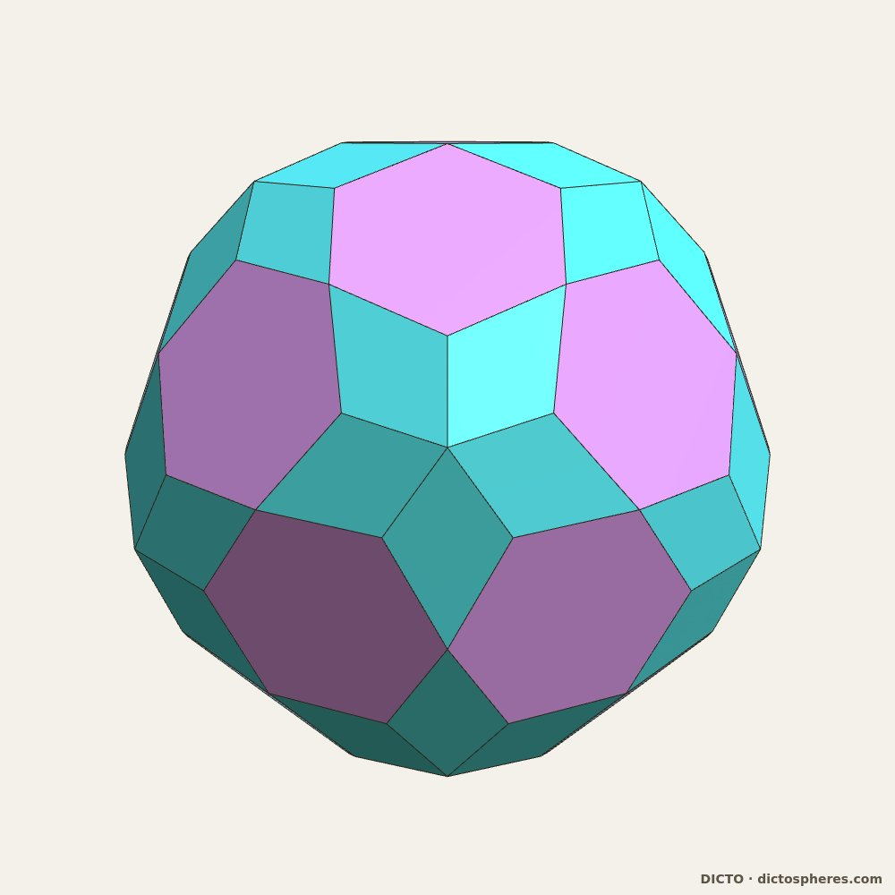

砂一粒に世界を
ウィリアム・ブレイク『無垢の予兆』
本書の論文、アプリ、データはすべて自由に利用可能です。すべてがオープンアクセスであり、CC BY-SA 4.0 のライセンスの下、読むこと、共有すること、そして発展させることが無料でできます。
空間の量子 クォンタ・オブ・スペース 英語版（DICTO DOI: 10.5281/zenodo.23754454）からの日本語訳
マニフェスト
DICTO の幾何学作品
DICTO
美術作家（大阪） · contact@dictospheres.com · https://dictospheres.com
書籍・第 I 巻（日本語訳）・第 2 版・2026年11月7日・DICTO DOI: 10.5281/zenodo.23966535・原著（英語、第 2.1 版）: 10.5281/zenodo.23754454
Status (draft for DICTO's reading; this box is deleted at publication): Version 2 of the Japanese Quanta, checked for accuracy against the English Version 2.1, section by section: 715 corrections to the text of Version 1 (wrong solids, reversed statements, wrong credits, numbers, leftover English), the glossary applied throughout, the contents rebuilt, the translator's note on the Alice names added to Chapter 6, and the katakana cover クォンタ・オブ・スペース. Published as a new version of the same record.
第 II 巻『DICTO 原子辞典 ― 空間の量子 II』：すべての原子のカタログ、作品ごとのデータ、既知の形と再発見された形（DICTO DOI: 10.5281/zenodo.23966395）。
目次
この作品が示すこと
原子 一つひとつの立体が、それぞれ正確な新しいピースです。
#18 DICTO ヘクサ#19 AXE、CLEO、FUJI#20 FUJI ファミリー#28 DICTO 切頂二十面体型ヘカトディヘドロン#31 DICTO オグドエコンタヘドロン#31a DICTO OCD ステラ#34a DICTO ヘカトグドエコンタヘドロン#35a DICTO メタクシヘキセコンタヘドロン#35b DICTO パリントリアコンタヘドロン#41 DICTO ジュエル#45 ルーローの正多面体#49 多面体伸長定理#88 すべてのプラトンの立体は、ちょうど二つの黄金切断を持つ— すべての原子：カタログは第 II 巻に
結合 ピースがどのように組み合わさって空間を充填するか：正確なキット、充填、格子。
#8 ユークリッド＝ケプラー＝パチョーリ・セル#13 DICTO ドデカ13#14 DICTO スター#17 カゴメ凸包#25 DICTO スフェロイド13 RD#26 DICTO ATOM-13×13#30 フィボナッチの背骨#36 黄金菩提パイロクロア#37 オクテット・トラス上の DICTO オグドエコンタヘドロン#37a 回転オクテット上の DICTO オグドエコンタヘドロン#40 あらゆる積層上の DICTO OG ファミリー#42 DICTO サンスター#44 アリストテレスの角錐#47 正多面体のどの組み合わせも空間を充填する#48 黄金の切り分け#51 デロスの結合#50 一手ずつ#89 アンドレイーニの充填における黄金切断— 結び：ディクトニック立体とディクトニック結合#52 結合の網 ― ディクトニック結合はどう受け渡されるか#53 結合の大域的な網#55 ダビデとゴリアテ#56 ソンサムとラデリ#77 面と面 ― アリストテレスの角錐の新しい法則#59 イコサックス・ヘクサ ― 花、蕾、種
殻 ピースが核のまわりで入れ子の殻となって閉じ、各層が正確に満たされます。
#22 業の連鎖#23 法の球#24 菩提の種#27 あいだを捉える#29 テアイテトス#34 始祖#35 金剛乗
サイクル 一つの殻を次の殻へと変え、また元へ戻す規則。終わりのあるものも、ないものもあります。
#32 裏返しの殻#33 ダブル・ヴィジョン#38 ユニバーサル・パイテト#38a DICTO ケプラー・ポアンソ・UP サイクル#39 DICTO OG ファミリー#43 DICTO 求心道コア#54 一巡りはグノモン#78 切頂二十面体の星（TI スター）
積層 有限個のピースのカタログから得られるあらゆる最密充填と、それを組み立てる二つのタイル（全体は『HexOct ― 六方性の法則』に）。
#57 半分の規則#58 オクテットからあらゆる積層へ ― 結合の網#60 DICTO ヤヌス c/h パイロクロア#61 入れ替えの規則#64 結晶における入れ替えの規則#66 焦点#67 ランダム積層と積層欠陥#69 フィボナッチ積層#68 実在のポリタイプと六方性の法則#70 実在の物質 II ― エントロピーと圧力#71 実在の物質 III ― 合金と水素#72 実在の物質 IV ― 酸化物#73 実在の物質 V ― 氷、ダイヤモンド、ナノワイヤ#74 あらゆる積層上のスピンアイスとカゴメ磁性体#75 あらゆる積層のための二つのタイル ― HexOct
四次元 影と断面から見た白の女王と赤の女王（全体は『不思議の国のアリシア ― 赤の女王と白の女王』に）、そして断面のなかの黄金切断。
#62 四次元の影#63 白の女王 ― 正六百胞体#76 女王たちのあいだ#65 赤の女王 ― 正百二十胞体#89 アンドレイーニの充填における黄金切断
発見とアプリ
— DICTO による Kaleidohedra（カレイドヘドラ）— DICTO の立体 ― 厳密な幾何（データセット）— 本作品の既知の形と再発見された形：第 II 巻に
順序と章立ては『DICTO 幾何学作品集』（DICTO DOI: 10.5281/zenodo.23345699）に従い、「積層」と「四次元」の章を加えています。#52 以降の作品は短く紹介し、全体は書籍『HexOct』『黄金サイクル』『不思議の国のアリシア』に収めています。
この作品が示すこと
空間は、部品から構成されています。
すべてのピースは正確でなければなりません：隅々まで確認された、実際に作って手に取れるような形です。
小さなキットで十分です。いくつかの形を集めるだけで、果てしない殻と空間が生まれます。
黄金比が殻を閉じるタイミングを決定します。
ピースが結合によってつながり、結合の網はピースと同じくらい実在しています。
繰り返される順序と繰り返されない順序が、ピースの中で出会います。
すべてがオープンです：アプリもデータも論文も、自由に利用し、それを基に構築できます。
DICTO
序論
空間の量子
空間は、水のようにどこまでも滑らかなのでしょうか？それとも、石で壁を築くように、ピースから組み上げられているのでしょうか。人々はこの問いを二千五百年にわたり抱いてきました。本書はこの問いを文字通りに受け止めます。隙間なく組み合わさって、殻となり、サイクルとなり、空間全体となる、正確な立体ピースの組を探します。
以下は、物理に関する主張ではなく、一つのアイデアの系図です。本書に登場するピースは、実際に組み立てて手に取ることのできる形です。それらは古代の思想家たちや現代の科学と一つの問いを共有しています。空間の最小のピースとは何か、そしてそれらはどのように結びつくのか、という問いです。
原子と、そのあいだの空虚
古代ギリシアでは、レウキッポスとデモクリトスが、世界は切ることのできない小さなピース、すなわち原子から成り、それらが空虚な空間を動いていると説きました。原子は形、配列、位置の違いのみで区別されます。ローマの詩人ルクレティウスはこの教えを詩にしました。「原子と空虚のほかに、それ自体として存在するものはない」。つまり、原子はピースでした。しかし、それがどのような形をしているかは誰も語りませんでした。
プラトンのピースの一式
プラトンはこれらに形を与えました。彼の対話篇『ティマイオス』において、四つの元素は四つの正多面体です。火は正四面体、空気は正八面体、水は正二十面体、そして土は立方体です。それらのすべての面は、ただ 2 種類の直角三角形から作られています。5 つ目の正多面体である正十二面体は「全体のために」使われました。これは物質を組み立てるための最初の一式でした。すべてがそこから組み上げられる、正確なピースの小さな組です。
アリストテレスの角錐
アリストテレスは、原子が中身の詰まった立体であるならば、隙間なく空間を満たさなければならないと応じました。彼は『天体論』第3巻第8章で、立体のうちこれができるのは二つ、角錐と立方体であると記しました。どの角錐かは言っていません。注釈者たちはこれを正四面体と解し、それ単独では小さな隙間が残るため、何世紀にもわたって議論を続けました。しかし、彼が書いた通りに読めば、彼は正しかったのです。多くの角錐が空間を充填します。私たちの論文 #44『アリストテレスの角錐』は、プラトンの立体の中心から切り出された角錐のうち、どれが空間を充填するかを証明しています。次元を一つ上げると、正四面体でさえも隙間なく閉じ、600胞体（正六百胞体）の各頂点の周りに 20 個が集まります（#63）。さらに論文 #65『赤の女王 ― 120胞体』は、彼の五つの角錐すべてが四次元の正多胞体のコアであり、まさに彼の比率を持つことを証明しています。
ケプラーの充填
1596 年、ヨハネス・ケプラーは五つの正多面体を惑星の天球のあいだに入れ子にしました。1611 年、六角形の雪についての小さな本の中で、ケプラーは雪の結晶を、等しい小さな単位がどのように詰まり合うかによって説明しました。これが、等しい球をどこまで密に積み上げられるかという有名な問いとなりました。私たちの論文 #8『ユークリッド＝ケプラー＝パチョーリ・セル』は、一つの繰り返すセルの 13 点の上に、五つの正多面体すべてが入れ子になっていることを見出しています。
現代科学の量子
1900 年、マックス・プランクはエネルギーが小さな決まった量、すなわち量子として現れることを発見しました。重力に関する現代の理論の一つであるループ量子重力理論では、空間そのものもそうなります。1995 年、カルロ・ロヴェッリとリー・スモーリンは、この理論において面積と体積が滑らかではなく、離散的な段階で現れることを示しました。2011 年、エウジェニオ・ビアンキ、ピエトロ・ドーナ、シモーネ・スペツィアーレは、それぞれの小さな体積の量を、その面の大きさと向きによって決まる、平らな面を持つ小さな立体として読み取れることを示しました。空間は、このような立体が面と面を合わせてつながったネットワークになります。「空間の量子」という言葉そのものも、この理論から来ています（ロヴェッリとウパディヤ、1998年）。
正直に言えば、違いがあります。その理論では、隣り合う二つのピースは同じ面積の面を共有しますが、一般には同じ形の面ではありません（フライデルとスペツィアーレ、2010年）。そのピースはぴったり合う必要がないのです。一方、私たちのピースは常に、頂点と頂点を合わせて正確に合います。因果集合など他のアプローチでは、空間と時間を立体からではなく、点から組み立てます。
したがって、本書は物理学についての主張をするものではありません。本書が共有するのは、問いと形です。空間を組み立てることのできる最小の正確なピースとは何か、そしてそれらはどのように結びつくのか。
中心 ― あらゆる最密充填の量子
箱にオレンジを積み重ねると、新しい層は下の層のくぼみに乗ります。その乗り方は二通りです。一方の選び方を繰り返すと積み方は立方になり、もう一方を繰り返すと六方になります。どんな順序で混ぜても、それでも完全な充填です。自然はこうした混合の多くを、金属、氷、炭化ケイ素、電池の酸化物などで使っています。
DICTO の「半分の規則」（#57）は、層がどのように積まれていても、周期的であってもなくても、球のあいだの空間が有限種類だけのピースに分けられ、その一つひとつが二つの純粋な積層から丸ごとか半分ずつ借りたものであることを示しています。これは、存在するあらゆる最密充填に対する量子の有限な目録であり、この作品が古くからの問いに与える最も明確な答えです。立方の層と六方の層が出会うところでは、ピースは半分が一方、半分がもう一方になります。ヤヌス c/h ピースは、二つの秩序の境に立っています。ピースは入れ替えによってのみ変化するため（「入れ替えの規則」、#61）、すべての個数とすべての体積は、六方的な層の割合というただ一つの数の直線になります（「六方性の法則」、#66）。そして実在の結晶もこれに従います（#67–#74）。さらに、この目録はただ二つのタイル、一つの立方タイルと一つの六方タイルにまとまり、それがどんな順序のどんな積層も組み上げます。HexOct（#75）です。法則がピースを与え、ピースが法則を証明する。
六つの章
このように読むと、作品は六つの章に分かれます。
原子 は、それぞれが正確な新しいピースである単一の立体です。DICTO オグドエコンタヘドロン（OG）、ヘカトディヘドロン、ジュエル、ヘクサ、AXE（アックス）、CLEO（クレオ）と FUJI（フジ）、ルーローの正多面体、そして六つのディクトニック立体（DICTONIC SOLIDS）（イコサックス、アンボーン・アックス、ロータス・ジュエル・アックス、ドデカックス、サムソンとデリラ）です。それらの正確な形は、すべての DICTO の立体が永続的な D番号を持つデータセット『DICTO の立体 ― 厳密な幾何』にまとめられています。すべての原子の目録、すなわち DICTO の 132 の新しい形と、この作品が組み立てに用いる既知の形は、第 II 巻『DICTO 原子辞典 ― 空間の量子 II』です。
結合 は、ピースがどのようにして一緒に空間を充填するかについてです。ユークリッド＝ケプラー＝パチョーリ・セルから、あらゆる積層上の OG に至るまで、正確な一式、充填、格子を扱います。最も明確な例は、三つのディクトニック結合（黄金の結合、キー付きの結合、デロスの結合）です。これらは一緒に空間を充填する立体の対です。一つのディクトニック結合はそのような対の一つであり、「結合」の章はピースが結びつくあらゆる方法を収めています。
殻 は、ピースがコアの周りに、玉ねぎの皮のように入れ子の層をなして閉じるもので、各層が正確に満たされています。業の連鎖、法の球、菩提の種、そしてテアイテトスです。
サイクル は、一つの殻を次の殻へと変え、終わりがあってもなくても一巡りして戻ってくる規則です。ユニバーサル・パイテト、OG ファミリーの段、求心道コア、そして裏返しの殻です。殻とサイクルについては、書籍『黄金サイクル』で詳しく述べています。
積層 は上に述べた中心です。「半分の規則」、「入れ替えの規則」、実在の物質における「六方性の法則」、そして二つの HexOct タイルで、書籍『HexOct ― 六方性の法則』で詳しく述べています。
四次元 は、その影と断面によって見られます。DICTO が白の女王と赤の女王と名付けた 600胞体と 120胞体（正百二十胞体）で、書籍『不思議の国のアリシア ― 赤の女王と白の女王』で詳しく述べています。
繰り返すものと、決して繰り返さないもののあいだ
いくつかの模様は、浴室の床のタイルのように繰り返されます。一方、ペンローズ・タイルのように、決して繰り返さないのに完全に秩序立った模様もあります。本書の作品は、同じピースを用いてその両方を組み上げます。
歴史の大半において、物質における秩序とは繰り返しを意味していました。結晶とは一つの小さなセルが限りなく写されたものであり、そこに五回対称はあり得ないと考えられていました。しかし 1982 年、ダン・シェヒトマンが、散乱パターンに鋭い五回対称を示す金属合金を発見しました。秩序を持ちながら決して繰り返さないこの準結晶により、彼は 2011 年にノーベル賞を受賞しました。物質には二種類の秩序があり、それらがどのように出会うのかが問いとなりました。
本書のピースは、その境界の上にあります。一つの正確な一式が、繰り返すオクテットを組み上げ、またフィボナッチの模様をなす、決して繰り返さない結晶をも組み上げます（#40『あらゆる積層上の DICTO OG ファミリー』）。『フィボナッチの背骨』（#30）では、OG の五つの繰り返す充填が五回対称軸の周りで出会います。その軸に沿って取り除かなければならない複製が、ちょうどフィボナッチ列をなします。これは決して繰り返さない最も単純な秩序です。法の球（#23）の黄金の殻は、一巡りごとに同じ黄金の倍率で大きくなることによってのみ繰り返します。フィボナッチ積層（#69）では、あらゆる最密充填のピースが黄金比の割合で現れ、二つの HexOct タイルは、置かれる順序によって、繰り返す積層も繰り返さない積層も同じように組み上げます。一つの一式、二種類の秩序。ピースそのものが架け橋なのです。
ピースが示すこと
四つのことが何度も繰り返し現れます。小さな一式で足ります。一握りの正確な形が、殻と空間を限りなく組み上げ、最密充填については一式は有限で完全であり、二つのタイルにまで絞られます。黄金比は五回対称が現れるところには必ず現れ、殻がいつ閉じるかを決めます。黄金比はまた、すべてのプラトンの立体にちょうど二つの黄金切断を与え、同じ黄金の深さが四次元の立体の断面として戻ってきます（#88、#89）。ピースは物質における二種類の秩序、繰り返す秩序と決して繰り返さない秩序を結びつけます。そして同じピースが私たちの空間を越えて届きます。アリストテレスが論じた五つの角錐は、四次元の正多胞体のコアなのです。
古代の人々は、空間が形を持ったピースでできていると推測しました。そして現代物理学もこの考えに戻ってきました。これらの作品はそのようなピースを正確に組み立てて検証し、本書の背後にある各論文は厳密に検証されています。
序論の出典：プラトン『ティマイオス』（B. Jowett 訳）、ルクレティウス『事物の本性について』（W. E. Leonard 訳）、アリストテレス『天体論』第3巻第8章（J. L. Stocks 訳）、J. ケプラー『宇宙の神秘』（1596 年）および『六角形の雪について』（Strena seu de nive sexangula 、1611 年）、D. Shechtman, I. Blech, D. Gratias, J. W. Cahn, Phys. Rev. Lett. 53 (1984) 1951、C. Rovelli, L. Smolin, Nucl. Phys. B 442 (1995) 593、L. Freidel, S. Speziale, Phys. Rev. D 82 (2010) 084040、E. Bianchi, P. Doná, S. Speziale, Phys. Rev. D 83 (2011) 044035、S. Surya, Living Rev. Relativ. 22 (2019) 5。『DICTO 幾何学作品集』（DICTO DOI: 10.5281/zenodo.23345699）所収のエッセイ「空間の量子」を書き改めたものです。ライセンス CC BY-SA 4.0。
第1章 原子 · #18
DICTO ヘクサ
8 つのジュエルでできた立方体、それと対をなすヘクサ・キー、そして空間を充填するチェッカーボード
手に取れば
面に 24 の低い屋根を外向きに載せた立方体を手にすることになります。論文の言葉では、それは「木から彫り出したような、美しく頑丈な」見た目をしています。その表面には 24 の菱形の窓が現れ、そのそれぞれがペンローズ・タイルの太い菱形です。
これは 8 つの DICTO ジュエルでできており、それらは 2×2×2 のブロックに置かれ、内部で互いに貫通しています。一つの立体として、その体積は 6 と 2/3 個のジュエル分です。
図 18. DICTO ヘクサ：8 個の DICTO ヘクサ・ジュエル（2 × 2 × 2 のブロック上の正確な DICTO ジュエル）、せん断なし。論文の図 1 より。
始まり
DICTO ジュエルは、ユークリッド＝ケプラー＝パチョーリ・セル（#8）から生まれます。このセルの正十二面体をとります。これはユークリッドの六つの屋根を載せた立方体です。その六つの隣接セルの星形の星型八面体（ステラ・オクタングラ）を削り取ります。残るものは立方体全体と各屋根の三分の二を保ち、その表面には立方体の各辺に一つずつ、十二のペンローズの菱形が現れます。これが窓です。ジュエルと星型八面体は、チェッカーボードの黒と白のマス目のように置かれ、一緒に空間を充填します。
私たちは Kaleidohedra アプリの Studies の世界で、8 つのジュエルからなる立方体を目にしました。体積はおよそジュエル 8 個分でした。
わかったこと
どれだけせん断しても、8 つの別々のジュエルが立方体として面と面で接することはありません。ヘクサは、8 つの正確なジュエルが重なり合ったものとしてのみ存在します。ジュエルそのものを押し潰すと窓が失われるため、その方法は採りませんでした。
ヘクサどうしは窓と窓でのみ接し、隣り合うヘクサごとに二つの窓全体を共有します。面心立方の配置では、各ヘクサは 12 の隣を持ちます。それらのあいだに残る空間はただ一つの立体であり、DICTO はこれをヘクサ・キー と名付けました。8 つの星型八面体と 12 の二重屋根からなります。ヘクサとヘクサ・キーは、チェッカーボードのように、体積比 5 対 3 で空間を充填します。これは一段下でジュエルとステラが行うのとちょうど同じです。ここには心地よい対称があります。ヘクサは 24 の屋根を外に向けた 8 つの立方体であり、ヘクサ・キーは同じ 24 の屋根を内に向けた 8 つのステラです。
ヘクサはまた、二通りにきれいに分解できます。8 つの立方体と 24 の屋根に、あるいは 4 つの完全なジュエルと 4 つの削られたジュエルにです。8 つのヘクサは、内部に閉じ込められたヘクサ・キーの周りに集まることができ、これはカゴメ凸包のジュエル菱面体を一段上げたものです。ダイヤモンド・ネットワークでは、ヘクサとステラが空間を充填し、単独のジュエルは一つも余りません。そして何も回転しません。これらの充填のどの継ぎ目も、回転させてなお合うことはありません。
新たに加えるもの
星型八面体と正八面体による空間充填は知られており、菱形十二面体の中の立方体、正八面体、星型八面体も知られています。窓の菱形はラルヴァーニの構築システム（1988 年の特許）の 10 個のピースの一つですが、ジュエルはそうではありません。ジュエルの壁はステラの面の平面上にあり、その特許には星型八面体も彫り込みもありません。彫り込まれた十二面体から作った立方体も、この 8 個のブロックも、ウェブ検索でも DICTO の参考文献ライブラリでも見つかりませんでした。論文が述べるとおり、これは新規性の証明ではなく、この記録は優先権を主張しません。ヘクサは Polyhedraverse で組み立てることができ、Kaleidohedra の Stella–Jewel の世界で見ることができます。
データ：第 II 巻、A.18（体積、分割、クラスター、および 16 の検証）。
ヘクサとその名称は DICTO のものです。設計の検討と検証は、オープンソースのライブラリ krp-core において Claude（Anthropic）と共に行いました。Kaleidohedra v2026.10.11-octet の中で初めて公開されました。論文 #18（第 2 版、2026 年 10 月 20 日）より。ライセンス CC BY-SA 4.0。
DICTO DOI: 10.5281/zenodo.23376320
第1章 原子 · #19
AXE、CLEO、FUJI
二十面体の三つの隙間ピース
手に取れば
小さな三つのピースを手にすることになります。AXE （アックス）は斧頭の形をしています。二つの正三角形が蝶番のようにつながり、鋭い辺が刃になっています。CLEO （クレオ）は細長い角錐で、ロンドンのオベリスク、クレオパトラの針にちなんで名付けられました。FUJI （フジ）は富士山の形をした六角錐で、その色は藤（ノダフジ）の花の色です。
FUJI の底面は、すべての角が等しく、長い辺と短い辺が交互に並んだ六角形です。六本の斜めの辺はすべて同じ長さです。
図 19. AXE、CLEO、FUJI。三つが蓮の実を充填する、ただ一つの縮尺で示しています。論文の図 1 より。
解く問題
12 個の球が 1 個の周りにぴったりと収まり、その 12 個の中心は正二十面体の頂点になります。1952 年にフランクは、この 13 個の原子のクラスターが、通常の結晶の対応する部分よりも安定であることを示しました。しかし、これを空間全体に続けていくことはできません。互いの周りに置いた正二十面体は、必ず隙間を残します。辺で接する二つの正二十面体は、その辺の両側に楔形の空いた空間を残します。
DICTO のクラスター蓮の実 は、小さな正二十面体の周りに十二個の正二十面体を置き、すべての隙間をたった三種類のピースで埋めます。三十個の AXE が外側の溝を閉じ、さらに三十個が内側の溝を閉じます。二十個の FUJI が、三つの正二十面体が出会う外側の角を埋めます。二十個の CLEO が、小さな中心の周りの内側の角を埋めます。その結果は、113 個のピースで、ちょうど一つの大きな正二十面体になります。
私たちは最初、2026 年 10 月 5 日に Polyhedraverse アプリで、ある正十二面体の問題に取り組んでいるときに、より簡単な方法でこれを作りました。正十二面体の 12 の面それぞれに、冠を一つ欠いた正二十面体（J11、正五角錐反柱）を置き、さらに AXE を 30 個、FUJI を 20 個加えます。これで 63 個のピースとなり、蓮の実を手で組み立てる最も簡単な方法です。論文にはその印刷用の展開図が付いています。
わかったこと
AXE と CLEO は、モッセリ＝サドックのタイルのうちの二つであることがわかりました。サドックとモッセリは、実在の物質における二十面体的な秩序を記述するためにこれらのタイルを作りました。ここでは同じタイルが、完全な正二十面体から組んだクラスターの隙間ピースとして、ひとりでに現れます。
FUJI は新しい形です。FUJI を、それ自身と同じ大きさかそれより大きいモッセリ＝サドックのタイルに切り分けることはできないことを証明します。一つの証明は、切り貼りしても変わらない量であるデーン不変量を使います。もう一つの証明は、FUJI の六角形の底面の角度を使います。より小さなタイルで作れるかどうかは未解決のままです。
この三つのピースは、DICTO の作品全体にわたって現れます。小さな正二十面体に CLEO を 20 個加えると、ケプラーの大星型十二面体が得られます。AXE を 30 個加えると、くり抜き十二面体が得られます。12 個の冠を加えると正十二面体になります。これが、正二十面体から二つの星型多面体を経てその双対へと至る、十二面体の連鎖です。業の連鎖（#22）は蓮の実をあらゆる縮尺で繰り返し、AXE、CLEO、FUJI はどの段階でも丸ごとのまま残ります。
新たに加えるもの
R・W・グレイは 2002 年に 12 個の正二十面体からなるかごを記述し、それらがより大きな正二十面体の輪郭を描くことに言及しましたが、隙間は埋めませんでした。AXE と CLEO はモッセリ＝サドックのタイルです。コジャらは、これらのタイルだけでは正二十面体を黄金の一段より先に成長させられないと指摘しています。完全な正二十面体と、その角に置いた FUJI によって、蓮の実はさらに先へ進み、業の連鎖は終わりなく続きます。
データ：第 II 巻、A.19（ピースの辺と体積、角度、二つの充填、FUJI の証明）。
蓮の実、63 ピースの組み立て、UNITY、業の連鎖、ステラ・コロナ、および AXE、CLEO、FUJI、ハス、トリスケリオン、トリスケリオン・ヘクス、内なる目、DESHI、ペンタクルのキングという名称は DICTO のものです。AXE と CLEO はモッセリ＝サドックのタイル t6 と t4 であり、DESHI の配置は R・W・グレイによるものです。計算・検証・草稿は Claude（Anthropic）と共に行いました。論文 #19（第 3 版、2026 年 10 月 20 日）より。ライセンス CC BY-SA 4.0。
DICTO DOI: 10.5281/zenodo.23351291
第1章 原子 · #20
FUJI ファミリー
切頂三角形の上の角錐と、空間を充填する新しい対
手に取れば
六辺の底面を持つ角錐を手にすることになります。その底面は切頂三角形 です。三角形の三つの角を平らに切り落としたもので、長い辺と短い辺が交互に並び、すべての角が等しくなっています。角錐の六本の斜めの辺はすべて等しい長さです。そのうち三つの側面は正三角形で、残りの三つはより細くなっています。
では、短い辺を動かすスライダーを想像してください。短い辺をゼロまで縮めると、角錐は正四面体になります。長い辺と等しくなるまで伸ばすと、角錐は平らに沈んで正六角形になります。そのあいだの黄金の設定に、蓮の実（#19）の隙間ピースである FUJI があります。このスライダーが FUJI ファミリーです。
図 20. 一つの縮尺で、すべての側辺を等しくした FUJI ファミリー：正四面体から FUJI を経て平らな六角形まで。濃い面は三つの正三角形、淡い面は三つの二等辺三角形です。論文の図 2 より。
始まり
この形は何度も現れました。14 の PET ボトル用ポートを持つ 3D プリントの球、DICTOspheres を設計していたとき、DICTO はポートの周りに鋭い三角形を望みましたが、すべてのポートの周りに均一な縁を保つため、角を落とした三角形、すなわち切頂三角形に落ち着きました。蓮の実に色を塗ったとき、彼は正六角形を期待しましたが、同じ切頂三角形が現れました。彼の DeltaZip と B1NR の彫刻は丸みを帯びた三角形を使っており、これは同じ考えの曲線の形です。そこで私たちは、FUJI が一つのファミリーに属するかどうかを調べました。属していました。
わかったこと
それぞれの反角柱が一つのメンバーを選びます。 反角柱とは、二つの等しい多角形のあいだに三角形を巡らせた太鼓形です。それぞれの反角柱に対して、その底面が反角柱の三角形から平らに続くファミリーのメンバーが、ちょうど一つ存在します。正八面体は正四面体を与えます。正四角反柱は、白銀比（1 + √2）に結びついた「白銀」のメンバーを与えます。正二十面体の中央部である正五角反柱は、黄金比に結びついた FUJI を与えます。
メンバーはさまざまな場所に住んでいます。 FUJI の底面は、ジョージ・オドムにならった作図の黄金六角形です。ダマセーノ、エンゲル、グロッツァーが空間を充填することを見出した切頂四面体は、別のメンバーの底面を面として持ちます。ブリージング・パイロクロア（一部のクロム酸化物に見られる、大小の四面体からなる結晶）では、すべての六角形が切頂三角形であり、黄金の設定では、すべての六角形が FUJI の底面になります。そして立方体と正八面体を同じ深さで切ると、その立体の八つの三角形はこのファミリーに属し、立方体の頂点がちょうど角錐の頂に位置します。
車輪。 DICTO の DeltaZip の車輪に触発されて、私たちは、どの二枚も異なるスポークに沿って交わるように、何枚の平らな車輪が交差できるかを調べました。答えは、正方形の車輪なら最大 3 枚、六角形なら 4 枚、十角形なら 6 枚です。八角形の車輪 5 枚は不可能です。6 枚の車輪は、回り道を経て、20 個の CLEO からなる球と、中心から 20 個の角錐に切り分けた正二十面体、すなわちクレオ・イコス へと導きます。
空間を充填する新しい対。 クレオ・イコスは単独では空間を充填できません。しかし、それはちょうど黄金菱面体（六つの面が黄金菱形である斜めの箱）の鋭い角です。その菱面体を二回切ると、両方の鋭い先端のクレオ・イコスと、DICTO がアントニウス と名付けた、4 倍の大きさの中間のピースに分かれます。黄金菱面体は空間を充填するので、クレオ・イコスとアントニウスは 2 対 1 で 、面と面を合わせて空間を充填します 。正二十面体自身のピースが、一つの相手とともに空間を充填するのです。同じピースで菱形六十面体も組み立てられます。2,187 個のピースからなる領域を調べ、隙間も重なりもないことを確かめました。
新たに加えるもの
ここにある多くのことは既知で、出典を示してあります。六角形の形、反角柱の角度、オドムにならった黄金六角形、空間を充填する切頂四面体、ブリージング・パイロクロア、そしてクレオ・イコスそのものです。クレオ・イコスはマッカイの単位四面体であり、紀元前 150 年頃のヒュプシクレスによるユークリッド『原論』「第 14 巻」の角錐の一つです。私たちの検索では、一つの対象としてのこのファミリー、反角柱の規則、車輪の上限、黄金菱面体のクレオ・イコスとアントニウスへの分割は見つかりませんでした。論文は何を検索したかを報告しており、これらが未知であるとは主張していません。このファミリーは、別々に見つかったもの、すなわち隙間ピース、コンピュータで見つかった空間充填体、磁性結晶の六角形、切った立方体の面に、一つの形と一つのスライダーを与えます。
データ：第 II 巻、A.20（底角の公式、反角柱の規則とその証明、メンバーの表、車輪の上限、クレオ・イコスとアントニウス）。
FUJI、クレオ・イコス、アントニウス、蓮の実、DICTOspheres、DeltaZip と B1NR の彫刻、切頂三角形が彼の作品に繰り返し現れるという観察、そして名称は DICTO のものです。計算・検証・草稿は Claude（Anthropic）と共に行いました。論文 #20（第 5 版、2026 年 10 月 20 日、本文は第 4 版）より。ライセンス CC BY-SA 4.0。
DICTO DOI: 10.5281/zenodo.23357896
第1章 原子 · #28
DICTO 切頂二十面体型ヘカトディヘドロン
法の球の一段階を組み立てることで見つかった、102 の面を持つ立体
手に取れば
3 種類の平らな面を 102 枚持つ、ほぼ球形の立体を手にすることになります。12 枚の正五角形、30 枚の菱形、60 枚の細長い三角形です。五角形は他の面より少し低く、浅いくぼみのようになっています。
これは切頂二十面体をもとにしており、その 20 個の六角形それぞれの上に、低い六角錐である盾 が立っています。盾は、隣り合う二つの盾の三角形が一つの平面上に平らに並び、合わさって一枚の菱形になる、ちょうどその高さまで持ち上げられています。その辺は、たった二つの角度でしか折れていません。
図 28. ヘカトディヘドロン：正五角形 12 枚（金色）、菱形 30 枚（シアン）、三角形 60 枚（藤色）。論文の図 1 より。
始まり
法の球（#23）は、正二十面体を層ごとに成長させ、二十・十二面体、正十二面体、切頂二十面体、菱形三十面体を経て、黄金の一段だけ大きい正二十面体へと戻ります。『あいだを捉える』（#27）では、その成長の閉じた各段階が一つの立体として扱われます。第 7 段階、すなわちすべての六角形に盾を載せた切頂二十面体は凸であり、そのピースから予想されるより少ない 102 の面を持つことがわかりました。これは組み立てることで見つかりました。
わかったこと
その特別な高さでは、二つの六角形が出会う辺をまたぐ 60 枚の三角形が対になって 30 枚の菱形になります。五角形の隣の 60 枚の三角形は三角形のままです。すると、盾の 20 個の先端が、ちょうど正十二面体の頂点の上に位置します。
菱形と三角形、合わせて 90 枚の面は一つの球に接します。12 枚の五角形はその球の少し内側にあるため、この立体にはすべての面に接する球がありません。私たちの以前の論文では 102 枚の面すべてが一つの球に接すると述べていましたが、それは誤りであり、訂正されています。
この立体が正確には何であるか。盾の先端は、既知の立体である五方十二面体、すなわち切頂二十面体の双対の頂点です。したがってヘカトディヘドロンは、既知の立体であるジョイン切頂二十面体（jtI）の、12 個の五回対称の頂点を五角形のところで平らに切り落としたものです。既知の立体から導かれた、名前のない立体です。それを裏返して得られる双対は、DICTO オグドエコンタヘドロン（#31）です。二つはかみ合って 182 の面を持つ一つの複合体になり、DICTO はこれを DICTO ヘカトグドエコンタヘドロン（#34a）と名付けました。
新たに加えるもの
その面の配置は、132 の面を持つコンウェイの六方切頂二十面体（hexakis truncated icosahedron）に近いものです。私たちの立体はその立体を平らにしたもので、30 組の三角形が合わさっています。アルキメデスの立体でも、カタランの立体でも、ジョンソンの立体でもありません。コンウェイの記法、ジョンソンの立体とそれに近い立体（near-miss）、MathWorld、Polytope Wiki、マッコイのカタログを調べましたが、名前の付いたものは見つかりませんでした。これはどこを調べたかの報告であり、この立体が未知であるという主張ではありません。名前は DICTO のものです。hecatodi- （ヘカトディ）は 102 の面を表し、ヘカトニコサコロン（正百二十胞体）と同じく、ギリシャ語の「百二」から来ています。「切頂二十面体型」は、それが成長してくるもとの立体を表します。Polyhedraverse（DICTO Transitional Shells）で開くことができ、DICTO-TIC の世界で見ることができます。
データ：第 II 巻、A.28（面、距離、角度、体積、ジョイン切頂二十面体との正確な関係、検索）。
この立体は DICTO の法の球の一段階であり、組み立てることで見つかりました。名前は DICTO のものです。計算・検証は Claude（Anthropic）と共に行いました。論文 #28（第 3 版、2026 年 10 月 20 日）より。ライセンス CC BY-SA 4.0。
DICTO DOI: 10.5281/zenodo.23360857
第1章 原子 · #31
DICTO オグドエコンタヘドロン
入れ子になった殻の一組を裏返すことで見つかった、八十の面を持つ立体
手に取れば
80 枚の平らな面を持つ、ほぼ球形の立体を手にすることになります。20 枚の正六角形と 60 枚の凧形です。どこを見ても、凧形が六角形の周りに群がっています。12 の点では、5 枚の凧形が一点に集まり、その点は周囲よりほんのわずかに突き出ています。
手の中で転がすと、多くの方向から同じように見えます。これは二十の面を持つ正多面体、正二十面体の完全な対称性を持っています。その 102 の頂点はほとんどすべてが一つの球面上にあります。90 個はちょうどその上にあり、5 枚の凧形が集まる 12 の点だけがわずかに外側にあります。面どうしは二種類の長さだけの辺で接し、折れる角度も二種類だけで、その二つはほぼ同じです。各凧形は、六角形の辺と同じ長さの二本の長い辺と、二本の短い辺を持ちます。DICTO はその八十の面にちなみ、ギリシャ語の「八十」と「面」から、これをオグドエコンタヘドロン と名付けました。略して OG です。

図 31. DICTO オグドエコンタヘドロン。六角形は藤色、凧形はシアン：(a) 斜めから見たところ、(b) 中央の正六角形を正面から見たところ、(c) 5 枚の凧形が集まる外側の 12 の点の一つを正面から見たところ。論文の図 1 より。見つかった経緯
始まりは以前の作品『法の球』（#23）でした。そこでは六つの立体が、ロシアの入れ子人形のように互いの内側に収まっています。各人形と次の人形とのあいだの隙間は、繰り返し現れるいくつかのピースでちょうど埋められ、入れ子は終わりなく繰り返します。ある層の途中で、その六角形の上の冠が閉じて一つの立体になります。DICTO 切頂二十面体型ヘカトディヘドロン（#28）です。
2026 年 10 月 13 日、入れ子全体を裏返すのは DICTO の着想でした。各層のピースを単にひっくり返すだけではうまくいきません。どの層も殻として閉じないのです。うまくいくのは、幾何学の古い技法です。共通の中心の周りに一つの球をとり、それを鏡のように使います。すべての平らな面は頂点になり、すべての頂点は平らな面になります。各立体はその双対に変わり、入れ子の順序が逆になって、内側が外側になります。
私たちはこれを七つの立体すべて、つまり入れ子の六つと、そのあいだのヘカトディヘドロンに対して行いました。六つはすでに知られている立体になりました。一つはそうではありませんでした。ヘカトディヘドロンは、この新しい立体、オグドエコンタヘドロンになったのです。
わかったこと
OG は、見つかってしまえば簡単に説明できます。既知の立体である五方十二面体をとります。六つの面が集まる 20 の頂点を見つけ、それぞれを平らに切り落とします。切り口はそれぞれ正六角形になり、元の面の残りが凧形です。鏡の一方の側で冠を加えることは、もう一方の側で頂点を切ることです。ヘカトディヘドロンはその親の各六角形に低い角錐を加え、OG は代わりに頂点を切るのです。
逆にした入れ子の中で、OG は二つの古典的な立体のあいだにぴったり収まります。その六角形は内側の二十・十二面体の面の上にあり、その凧形は外側の五方十二面体の面の上にあります。
OG の複製を六角形と六角形でつなぐのも、DICTO の着想でした。各複製を、正四面体の頂点のように向いた四つの六角形を通じて他の四つとつなぐと、複製はダイヤモンド・ネットワークをなします。つなぎ目そのものは、頂点を共有する正四面体の模様、すなわちパイロクロア格子の上にあります。二つ目のネットワークが一つ目の空いた場所に収まり、一つ目とは六角形でのみ接します。二つを合わせると一つの整った積み重ねになります。すべての複製が同じ向きを向き、立方体の頂点を指す八つの六角形を通じて八つの隣と接します。この積み重ねは空間の 77.43 パーセントを満たします。これは、市場の店先のオレンジのような、等しい球の最も密な積み重ねが満たす 74.05 パーセントよりも多いのです。コンピュータ探索でわずかに密な規則的な積み重ねが見つかりましたが、それが最密であることは証明されていません。
OG は、繰り返す模様になじむ正六角形と、準結晶の対称である五回対称とを結びつけます。OG が標準的な二十面体準結晶のピースであるかどうかを検証しました。そうではありません。しかし OG はそのような積み方で五通りに積むことができ、五つの積み重ねが五回対称軸の周りで出会うところでは、取り除かなければならない複製が、中央の複製と合わせて、中心付近でちょうどフィボナッチ列をなします。それが『フィボナッチの背骨』（#30）の主題です。
新たに加えるもの
このうち多くは古くからあるもので、論文の中で出典が示されています。球について立体を裏返すこと、五方十二面体とその頂点の切断、ダイヤモンド格子とパイロクロア格子、そして等しい球の積み重ねです。OG の面の配置、つまりどの面がどの面と接するかさえ既知であり、Antiprism ソフトウェアの記法で書くことができます。私たちが、DICTO の参考文献ライブラリでも、マッコイの 553 の立体のオンライン・カタログでも、ウェブ検索でも見つけられなかったのは、これらの正六角形とこれらの凧形を持つ立体そのものと、その正確な、六角形でつないだ積み重ねです。したがって OG は、既知の立体から導かれた名前のない立体です。名前は DICTO のものであり、これらの面を持つ立体とその積み重ねは、調べた資料には見つかりませんでした。
データ：第 II 巻、A.31（個数、正確な辺の長さ、角度、半径と体積、積み重ねとその密度、準結晶の検証、調べた資料）。
ヘカトディヘドロン、法の球を裏返すという着想、オグドエコンタヘドロンという名称、そして複製を六角形でつないでパイロクロア・ネットワークにするという着想は DICTO のものです。計算・厳密な算術・レンダリングは Claude（Anthropic）と共に行いました。論文 #31（第 4 版、2026 年 10 月 20 日）より。ライセンス CC BY-SA 4.0。
DICTO DOI: 10.5281/zenodo.23404688
第1章 原子 · #31a
DICTO OCD ステラ
オグドエコンタヘドロンのコンパニオンを、その継ぎ目に沿って切ったもの
手に取れば
48 の頂点と 50 の面を持つ、カットされた宝石のような立体を手にすることになります。面は 6 枚の六角形と 24 枚の四辺形で、どれも黄金の平面の上にあり、さらに 20 枚の三角形があります。そのうち 8 枚の三角形は特別です。それらは隣の立体と接する平らな場所なのです。
これは周りの二十面体対称の立体ほど丸くありません。その切り方は、それらの対称のうち、立方体と共有する 24 個だけを保ちます。（幾何学者は黄鉄鉱の結晶にちなんで、これを黄鉄鉱型と呼びます。）
図 31a. DICTO OCD ステラ。論文の図 1（左）より。
始まり
DICTO オグドエコンタヘドロン（#31）は体心立方の配置に詰まり、各複製は六角形で八つの隣とつながります。各複製の周りには黄金のアダプター・ピースがはまり、それらを合わせると中身の詰まった一つの輪郭、すなわち OG のコンパニオン ができます。DICTO の言葉では、それは「アダプターが OCD の上に収まった様子からの、ただでもらえた贈り物」でした。このコンパニオンを八つのつなぎ目に沿って切ると、DICTO OCD ステラ が得られます。
わかったこと
詰まります。 OCD ステラの複製は、八つのつなぎ目すべてで面と面で接し、空間の 87.12 パーセントを満たします。
種を作ります。 小さな OCD ステラの周りに 12 個の OCD ステラを置くと、それらはより大きな OCD ステラをちょうど満たします。OCD ステラは対称性がより低いにもかかわらず、菩提の種（#24）と同じ模様です。
結晶を作ります。 OG の充填は二つのダイヤモンド・ネットワークに分かれます。OCD ステラは一つ目のネットワークに残したまま、二つ目のネットワークに相手を置くのは DICTO の着想でした。正二十面体を相手にすると、すべての立体が八つの隣と面と面で接します。残った隙間をピースに切り分けるのも DICTO の着想で、隙間はちょうど四種類の凸のピースに分かれます。DICTO の次の着想である正八面体を相手にすると、各正八面体の六つの先端が OCD ステラの切り欠きに収まり、結晶は空間の 96.33 パーセントを満たします。岩塩のように正八面体をサイトの 4 分の 1 だけに置くと、91.72 パーセントを満たします。
アトム13。 これも DICTO の着想です。中央の一つの周りに 12 個の OCD ステラを置き、それぞれを中央に触れるまで外へ押し出します。それらは中央と平らに接し、互いには決して触れません。そのあいだの隙間に 20 個の正二十面体が収まります。
新たに加えるもの
コンパニオンの面の配置は知られており（面取り二十面体）、同じ種類の格子の上で菱形三十面体から切り出した別の黄金の空間充填体も知られています（カバイの 54 面の空間充填多面体）。そちらは空間全体を充填します。OCD ステラは異なる立体で、87.12 パーセントを満たします。二種類の硬い立体からなる結晶、たとえば正四面体と正八面体の結晶も知られています。OCD ステラ、その充填、その種、その結晶、隙間のピース、切り欠きのある OCD ステラ、アトム13 は、調べた資料には見つかりませんでした。調べた資料には、全文を検索した DICTO の参考文献ライブラリの 64 の文献が含まれます。結晶は Kaleidohedra（3D+ → OCD Stella Crystals）で見ることができます。
データ：第 II 巻、A.31a（立体の正確な体積と面、種、四つの結晶とその充填率、隙間のピース、アトム13）。
コンパニオン、ステラ形の切り方、種、名称、二つ目のネットワーク上の相手（正二十面体と正八面体）、パイロクロア配置、隙間をピースに切り分けること、アトム13 は DICTO のものです。正確な計算と本文は Claude（Anthropic）と共に行いました。論文 #31a（第 3 版、2026 年 10 月 20 日）より。ライセンス CC BY-SA 4.0。
DICTO DOI: 10.5281/zenodo.23430870
第1章 原子 · #34a
DICTO ヘカトグドエコンタヘドロン
一つに組み合わさった、双対の二つの立体
手に取れば
星形の星型八面体（ステラ・オクタングラ）の二つの正四面体のように、互いに貫通する二つの立体を手にすることになります。一方は 102 の面を持つ DICTO ヘカトディヘドロン（#28）です。もう一方は 80 の面を持つ DICTO オグドエコンタヘドロン（#31）です。それぞれの頂点が、もう一方の面を突き抜けて出ています。
二つを合わせると、面が 182、頂点が 182 になります。DICTO は二つの名前を合わせてこの対に名前を付けました。102 と 80 を合わせたヘカトグドエコンタヘドロン です。
図 34a. DICTO ヘカトグドエコンタヘドロン：かみ合ったヘカトディヘドロン（金色）とオグドエコンタヘドロン（青緑色）、および切頂二十面体と共通のコアと凸包。正確な頂点から描いたもの。論文の図 1 より。
わかったこと
二つの立体は双対です。一方を球について裏返すと、もう一方が得られます。ここでの球は、切頂二十面体のすべての辺の中点に接する球です。その大きさで、二つの立体はちょうどかみ合います。その球の上にあるオグドエコンタヘドロンの 90 個の頂点は、切頂二十面体の 90 個の辺の中点にちょうど位置します。どちらの立体の頂点も、もう一方の内部にはありません。
二つが双対であるため、この対はそれ自身の双対です。裏返すと、この複合体は二つの立体を入れ替え、同じままです。
二つの立体が共有する部分、つまり共通のコアは、中点切頂した切頂二十面体（rectified truncated icosahedron）です。二つを包む輪郭、つまり凸包は、ジョイン切頂二十面体で、菱形九十面体とも呼ばれます。これらはちょうど、古典的な対である切頂二十面体とその双対の五方十二面体の、コアと凸包です。つまり新しい対は、古典的な複合体の空間を新しい仕方で分け合っているのです。これは、星型八面体のコアと凸包である正八面体と立方体に似ています。
『始祖』（#34）では、コアと凸包が黄金サイクルの駅となるので、そのサイクルは二つの双対複合体のコアと凸包を含みます。古典的な正二十面体と正十二面体の複合体と、この複合体です。
新たに加えるもの
立体とその双対の複合体は知られています。古典的な切頂二十面体と五方十二面体の複合体、中点切頂した切頂二十面体、菱形九十面体も同様です。私たちが主張するのは組み合わせと名前だけで、コアや凸包ではありません。この二つの立体の複合体は調べた資料には見つからず、この名前で検索しても結果は出ません。Kaleidohedra（3D+ → Vajrayana、および Multi-shell chains）で見ることができます。
データ：第 II 巻、A.34a（二つの立体、複合体、そのコアと凸包の各個数）。
組み合わせと名称は DICTO のものです。正確な計算と本文は Claude（Anthropic）と共に行いました。この複合体は、ヘカトディヘドロンの論文（#28）の第 2 版で初めて記述されました。論文 #34a（第 2 版、2026 年 10 月 20 日）より。ライセンス CC BY-SA 4.0。
DICTO DOI: 10.5281/zenodo.23430868
第1章 原子 · #35a
DICTO メタクシヘキセコンタヘドロン
黄金サイクルの最後の隙間にある立体
手に取れば
60 枚の合同な三角形からなる立体を手にすることになります。5 枚の三角形が集まる 12 か所では少し尖り、3 枚が集まる 20 か所ではより鈍くなっています。頂点は 32、辺は 90 です。その内側には、60 枚の面すべてに同時に接する球を置くことができます。
これは、二つの古典的な立体、すなわち正二十面体と、頂点が正二十面体の面の上方にある正十二面体に、同時に一枚の皮を巻きつけることで作られます。正十二面体の大きさが形を決めます。DICTO の立体は、その範囲の中のある一つの正確な大きさのものです。その名前は、ギリシャ語の「メタクシュ」（metaxý 、あいだに）から、「六十の面を持つ、あいだの立体」を意味します。
図 35a. DICTO メタクシヘキセコンタヘドロン。正確な頂点から描いたもの。論文の図 1（左）より。
始まり
法の球（#23）は、黄金の一段ごとに繰り返すサイクルの中で、二十面体対称の殻を入れ子にします。『始祖』（#34）は DICTO オグドエコンタヘドロンをそこに組み入れ、『金剛乗』（#35）はその残っていた段を取り上げました。そのうちの一つ、菱形三十面体から次の正二十面体への段では、菱形三十面体は途中までしか届きません。そこにもう一つの立体が収まるはずだというのは DICTO の着想でした。調べた他の凸の二十面体対称の立体は、どれも両隣の両方には接しません。この立体は接します。
わかったこと
メタクシヘキセコンタヘドロンは、その隙間にちょうど収まります。その 12 個の五回対称の頂点は菱形三十面体自身の頂点であり、20 個の三回対称の頂点は、次の正二十面体の面の中心にちょうど位置します。両側に接するのです。
さらによいことに、この立体が作る二つの層は、それぞれただ一種類のピースで満たされます。菱形三十面体と新しい立体のあいだは 30 個の合同なピースで、新しい立体と次の正二十面体のあいだは 60 個の合同なピースで満たされます。これを裏返して得られる双対は、サイクルを裏返した版の中で、対応する段を閉じます。
これは一つのファミリーに属します。この位置にある正十二面体と正二十面体に巻いた、正十二面体が大きくなるにつれてのすべての皮です。そのファミリーには、カタランの立体の五方十二面体、DICTO パリントリアコンタヘドロン（#35b）、そして DICTO メタクシヘキセコンタヘドロンが含まれます。説明のないまま記しておく奇妙な一致が一つあります。この立体を定める大きさの比は、『始祖』の最もきついサイクルの一巡りあたりの正確な倍率でもあるのです。
新たに加えるもの
このファミリーは知られています。Polytope Wiki がその範囲を示し、MathWorld とマッコイがカタランの立体のメンバーを示しています。調べた資料に見つからなかったのは、このメンバーを名前の付いた立体や特別な立体として扱ったもの、あるいはその大きさの比を特別なものとして扱ったものです。その数値は OEIS のどの数列とも一致せず、この名前で検索しても結果は出ません。Kaleidohedra（3D+ → Vajrayana）で見ることができます。
データ：第 II 巻、A.35a（閉じた式、辺、半径、内接球、体積、サイクルの段）。
サイクルの最後の隙間にもう一つの立体が収まるという着想と、その名称は DICTO のものです。正確な計算と本文は Claude（Anthropic）と共に行いました。論文 #35a（第 3 版、2026 年 10 月 20 日）より。ライセンス CC BY-SA 4.0。
DICTO DOI: 10.5281/zenodo.23430864
第1章 原子 · #35b
DICTO パリントリアコンタヘドロン
裏返した菱形三十面体
手に取れば
60 枚の三角形からなり、32 の頂点を持つ立体を手にすることになります。そのうち 12 は 5 枚の三角形が集まる頂点、20 は 3 枚が集まる頂点です。各三角形は、ケプラーの菱形十二面体の菱形のちょうど半分です。
その名前はギリシャ語のpálin （「戻って」）から来ており、それが何であるかを語っています。菱形三十面体を、それ自身へと折り返したものです。菱形三十面体と同じ 32 の方向を指しますが、あの立体の頂点が遠くにあるところではこの立体の頂点は近くにあり、その逆も同様です。
図 35b. 二十・十二面体の星（中心角錐を全高のまま外へ返したもの）とその凸包である DICTO パリントリアコンタヘドロン、および次の正二十面体とかみ合ったパリントリアコンタヘドロン。正確な頂点から描いたもの。論文の図 1 より。
始まり
『金剛乗』（#35）の十二の駅からなる黄金サイクルでは、二十・十二面体は、サイクルの二つの始祖が出会う殻です。二十・十二面体は中心から 32 の角錐に切り分けることができ、各面の上に一つずつあります。DICTO はそれらの角錐を短くするのではなく、全高のまま外へ返しました。彼の言葉では、「短くするのはずるい気がする。もう一つの立体が必要だ」。32 の先端を包む皮がパリントリアコンタヘドロンです。
わかったこと
これは裏返した菱形三十面体です。同じ 32 本の軸を持ち、二種類の頂点までの距離の比が逆になっています。またこれは、メタクシヘキセコンタヘドロン（#35a）と同じファミリー、すなわち正十二面体と正二十面体に巻いた皮のファミリーのメンバーでもあります。そのファミリーの中での位置は、カタランの立体の五方十二面体とメタクシヘキセコンタヘドロンのあいだです。
これはサイクルをまたいで届きます。コンピュータで測ると、これは次の巡りの正十二面体の内側にあり、そのほぼすべて、99.46 パーセントが次の正二十面体のクレオ・スターの内側にあります。つまりこれは、黄金サイクルの一巡りを次の一巡りへと橋渡しします。数の小さな一致があります。正二十面体の最初の星型化は、その先端をこの立体を定めるのと同じ比の位置に置くのです。
新たに加えるもの
このファミリーとその範囲は知られており（Polytope Wiki）、菱形三十面体と二十・十二面体の中心角錐も知られています。調べた資料に見つからなかったのは、このメンバーを名前の付いた立体や特別な立体として扱ったもの、あるいはその大きさの比を特別なものとして扱ったものです。この名前で検索しても結果は出ません。
データ：第 II 巻、A.35b（閉じた式、面の角度、辺、半径、内接球、体積）。
二十・十二面体自身の中心角錐を全高のまま外へ返すことと、その名称は DICTO のものです。正確な計算と本文は Claude（Anthropic）と共に行いました。論文 #35b（第 2 版、2026 年 10 月 20 日）より。ライセンス CC BY-SA 4.0。
DICTO DOI: 10.5281/zenodo.23430866
第1章 原子 · #41
DICTO ジュエル
隣の星たちに彫られたユークリッドの正十二面体
手に取れば
60 の面を持つカットされた宝石を手にすることになります。12 の菱形の窓と 48 の小さな三角形です。それぞれの窓はペンローズの太い菱形で、ペンローズの有名な決して繰り返さない模様の二つのタイルのうち太いほうであり、角は 108° と 72° です。その六つの側面のそれぞれに、小さなくぼみがあります。
その下には立方体があります。窓は立方体の十二本の辺にまたがり、三角形は彫られたところの壁です。
図 41. DICTO ジュエル。論文の表紙図より。
作り方
ユークリッドは、立方体の各面に屋根を載せることで正十二面体を作りました。では、三次元のチェッカーボードのように、立方体を並べて空間を充填します。白い立方体にはユークリッドの正十二面体を置きます。黒い立方体には、二つの正四面体がかみ合ってできた星、ケプラーの星型八面体（ステラ・オクタングラ）を置きます。正十二面体の各屋根は黒い立方体の中へと伸び、そこにある星がその一部を削り取ります。残ったものがDICTO ジュエル です。立方体と、その削られた六つの屋根です。
わかったこと
ジュエルと星が空間を充填します。 白い立方体のジュエルと黒い立方体の星型八面体は、体積比 3 対 1 で、食塩の配置で、空間をちょうど充填します。これは最初は点の抽出によって確かめられましたが、ここでは厳密に証明されます。各黒い立方体は、ちょうどその星と、隣から押し込まれた六つの削られた屋根とからなります。
立体として名付けられたクラスター。 DICTO のジュエルのクラスターは、彼の名前を持つ単一の立体になります。ジュエル・テトラ は、窓と窓で互いにすべて接する四つのジュエルです。ジュエル・オクタ は、黒い立方体の周りの六つのジュエルで、その立方体の星がジュエルのあいだの穴に閉じ込められ、それをちょうど満たしています。ジュエル・ロンビ は、斜めの箱の頂点にある八つのジュエルで、やはり星が内部に閉じ込められています。
どのように空間を充填するか。 ジュエルは空間の 4 分の 3 しか占めないので、ジュエルだけの集まりで空間を充填することはできません。星も入る必要があります。三つのクラスターはそれぞれ、自分自身の複製とばらの星で空間を充填し、私たちはその規則的な方法をすべて見つけました。ジュエル・テトラとジュエル・オクタを合わせると、オクテット・トラスの正四面体と正八面体の位置にちょうど収まります。ただしタイル張りとしてではなく、重なり合う立体としてです。
ヘクサの証明。 論文 #18 の DICTO ヘクサとヘクサ・キー、そしてそれらの 5 対 3 の充填が、ここで厳密に証明されます。同じ模様が一段上で繰り返されます。屋根を加えた立方体はジュエルで、屋根を取り去ると星です。八つのブロックに屋根を加えるとヘクサで、屋根を取り去るとヘクサ・キーです。
双晶。 単一の立体として、ジュエルは DICTO オグドエコンタヘドロンと同じように双晶をなします。その充填は斜めの鏡について双晶をなしませんが、論文はその簡単な理由を示しています。その鏡は立方体の格子を保たないのです。
新たに加えるもの
部分は古典的なものです。屋根を載せた立方体はユークリッドの、星型八面体はケプラーの、太い菱形はペンローズのもので、配置は食塩の配置です。ジュエルそのもの、その格子、そしてクラスターは、DICTO によって Kaleidohedra アプリと『カゴメ凸包』（#17）で初めて発表され、ヘクサは #18 で発表されました。ここで新しいのは、厳密な証明、三つのクラスター立体とその面の数、三つのクラスターとばらの星による格子状のタイル張りのすべて、オクテットの模様とその限界、そして充填が双晶をなさない厳密な理由です。ラルヴァーニの 1988 年の特許は、すべての辺がある二十面体対称の軸の上にあるピースから構造を組み立てます。ジュエルでは窓の辺だけがそうなっているので、ジュエルはその条件から外れます。全文を検索した 80 のライブラリ資料でも、ウェブ検索でも、DICTO 自身の記録の外に、ジュエル、そのクラスター、ヘクサ、ヘクサ・キーは見つかりませんでした。
データ：第 II 巻、A.41（体積、頂点と面、タイル張りの証明、クラスターの個数と格子、ヘクサの証明、双晶）。
ジュエル、その相方である星型八面体、その名称、そのクラスター（および単一の立体としてのジュエル・テトラ、ジュエル・オクタ、ジュエル・ロンビとその名称）、ヘクサ、ヘクサ・キーとその名称は DICTO のものです。計算・厳密な証明・草稿は Claude（Anthropic）と共に行いました。論文 #41（第 1 版、2026 年 10 月 20 日）より。ライセンス CC BY-SA 4.0。
DICTO DOI: 10.5281/zenodo.23496353
第1章 原子 · #45
ルーローの正多面体
プラトンの立体の頂点に置いた球が重なり合うところにできる、丸みを帯びた立体
手に取れば
曲がった面が曲がった辺でつながった、滑らかで丸みを帯びた立体を手にすることになります。もとの立体をまだ覚えている小石のようです。各面は一つの球の表面の一部です。
不思議なことに、それぞれの立体は、それを作ったもとの立体の双対のように見えます。立方体の頂点に置いた球は正八面体のように見える立体を作り、正八面体の頂点に置いた球は立方体のように見える立体を作ります。そこで DICTO は見た目によってこれらを名付けました。ルーローの八面体 （立方体の上の球）、ルーローの立方体 （正八面体の上）、ルーローの二十面体 （正十二面体の上）、そしてルーローの十二面体 （正二十面体の上）です。
図 45. 立体の辺の長さ 1 での五つの立体。それぞれの面は、隣り合う面を分けられる最少の色数で塗られています（金、紫、ライラック、青銅）。それぞれの下に、球の数とその半径（立体の直径に等しい）を示します。論文の図 1 より。
作り方
これは DICTO の着想でした。プラトンの立体のすべての頂点に球を置き、それぞれの球を最も遠い頂点にちょうど届く大きさにします。すべての球が共有する空間が、丸みを帯びた立体です。正四面体では、これは有名なルーローの四面体です。同じ立体を五つのプラトンの立体すべての上に、一つのファミリーとして作るのは DICTO の着想であり、他の四つは私たちが調べた資料には現れませんでした。
わかったこと
主定理は、これらの立体がどれだけの厚さを持つかを述べます。
決して立体の幅より薄くない。 どの方向にも同じ厚さを持つ丸い立体が、それぞれの中に収まります。そして、どんなものも、それが内に含む立体より薄くはなれません。向かい合う二つの頂点のあいだで測ると、厚さはちょうど立体の幅です。
面を通して、正確に。 面の中心をまっすぐ通して測ると、厚さはちょうど書き下せる一つの数になります。対称性により最も外側の点はその線の上にあり、その点は最も遠い頂点の球が許すところまでしか届きません。
双対どうしは一致します。 立体とその双対、すなわち立方体と正八面体、あるいは正十二面体と正二十面体は、面を通して測るとちょうど同じ厚さの立体を与えます。
正四面体はそれ独自の規則に従い、古典的なルーローの四面体は正しく得られます。私たちが計算した体積は既知の公式と一致します。名前とは裏腹に、四つの新しい立体は厳密な数学的意味でのルーロー多面体ではありません。各頂点が、他のただ一つの球の表面の上にしかないからです。これらは「球多面体」です。
私たちは、面を通る線がすべての方向のうちで最も厚い方向でもあると考えています。コンピュータは 3,000 以上の方向について 12 桁まで一致しますが、まだ証明されていません。これは予想として残します。
色。 各立体の面は、双対の立体の面とちょうど同じように接します。そのため、隣り合う面を分けられる最少の色数は 4、2、3、3、4 であり、これは DICTO が見た目から読み取った数です。
新たに加えるもの
ルーローの四面体とその体積は知られており、一般の球多面体、ルーロー多面体、マイスナーの立体も同様です。これらの立体についてのライブラリの三つの論文は、正四面体だけを扱っています。全文を検索した 81 のライブラリ資料の中で、他の四つのプラトンの立体の上の立体やその幅は見つかりませんでした。この主題についての論文の一つ、サリーの論文は、ライブラリにはリンクとしてのみあり、読んでいません。
データ：第 II 巻、A.45（定理、正確な幅、証明の概略、五つの立体の表、検証）。
構成（プラトンの立体のすべての頂点に、立体の直径を半径とする球を置く）と見た目による名称は DICTO の着想です。計算・証明・草稿は Claude（Anthropic）と共に行いました。論文 #45（第 2 版、2026 年 10 月 22 日）より。ライセンス CC BY-SA 4.0。
DICTO DOI: 10.5281/zenodo.23529499
第1章 原子 · #49
多面体伸長定理
立体を辺一つ分の長さだけ滑らせると、すべての辺は同じ長さのまま
手に取れば
長い、多くの面を持つ立体を手にすることになります。伸ばされた正十二面体です。その十二の五角形はすべて両端に残っており、そのあいだを十枚の菱形の面の帯が巡っています。五角形の辺も帯の辺も、すべての辺が同じ長さです。
端から見ると、その輪郭は十角形です。横から見ると、すべての始まりとなった長い六角形が見えます。
図 49. ユークリッドの立方体の面の対角線に沿って、次の正十二面体まで掃引した正十二面体：十二の五角形（菫色）と十枚の長い面の帯（ライラック）。左：長い辺の方向から見た、DICTO が見た長い六角形。中央：端から見た十角形。右：斜めから。論文の図 1 より。
始まり
論文 #47 では、格子の立方体の一つおきに正十二面体が置かれています。Kaleidohedra アプリでそのブロックの中をのぞいていたとき、DICTO は一つの空洞、長い六辺の空間を見つけました。その両側に二つの正十二面体が重なっていました。それに合う正十二面体の変形を作るのは DICTO の着想でした。空洞と二つの重なりを合わせると、一つの立体になります。正十二面体が二つの場所の一方から他方へと滑るときに通過する空間です。DICTO はこのファミリーの最初のメンバーを、やはり重なり合う正十二面体から、以前に見つけていました。発見 F11 として発表された伸長十二面体です。
わかったこと
定理。 正十二面体のように、辺がすべて同じ長さの立体をとります。それを、自分自身の辺のどれかに沿う方向以外のどの方向にでも、辺一つ分の長さだけまっすぐに滑らせます。それが掃引する形のすべての辺は、辺一つ分の長さになります。理由は短いものです。新しい形のすべての辺は、移動した立体自身の辺か、滑らせた移動そのものの写しのどちらかであり、どちらも辺一つ分の長さだからです。
面に何が起こるかは簡単に思い描けます。両端の面はそのままです。滑らせる方向に沿った面は長くなり、二辺が増えます。そして中央の周りに、立体の輪郭の各辺に一つずつ、菱形の帯が育ちます。
特別な方向。 正十二面体自身の対称軸に沿って滑らせると、最も整った形が得られます。向かい合う二つの五角形を通して滑らせると、帯は十枚の菱形からなり、すべて同じ形です。面の対角線方向に滑らせると、十二の五角形がすべて保たれます。
等辺形と伸縮形。 DICTO はこのファミリー全体をDICTO 伸長立体 と名付けています。伸ばす長さが辺一つ分なら等辺形、それ以外の長さなら伸縮形です。面はその種類を保ち、帯だけが伸びます。
三つの冠と四つの冠。 線に沿って滑らせる代わりに、三角形や正四面体の各頂点に正十二面体を置き、それらをまとめて包みます。やはりすべての辺が等しくなり、面の中に正三角形が現れます。DICTO はまた、一方の端をひねれば帯が三角形になるのではないかとも考えました。それはできません。縁がジグザグになり、最もよい三角形の帯でも辺の 3 分の 1 だけずれてしまうのです。代わりに、三つの冠と四つの冠が三角形を与えます。
すべての等辺の立体。 この定理はすべてのプラトンの立体に使えます。正四面体と正八面体を伸ばすと、有名な形が現れます。立方八面体、切頂四面体、そして三つのジョンソンの立体です。これは伸長が自然な操作であることのよい兆しです。伸ばした正二十面体は、新しく見える第二のファミリーをなします。
自分で作る。 論文には印刷用の展開図と、短い形から長い形へと滑る三つの部分からなる伸縮模型が付いています。
新たに加えるもの
手法は古いものです。立体を線に沿って滑らせるのは標準的な構成（ミンコフスキー和）であり、そのとき面がどう振る舞うかも一般に知られています。ハートとピッチョットは同じ方法で、五角形なしに三角形と菱形の立体を作りました。ゾーン多面体については、帯の伸長は古典的です（フョードロフにならったグリュンバウム）。正十二面体を面の対角線、体対角線、あるいは五回対称軸に沿って掃引したものも、三つの冠・四つの冠の形も、名付けられたもの、記述されたものとしては見つかりませんでした。構成が簡単なので、名前のないままどこかに存在するかもしれません。私たちはその理解のうえで、これらを DICTO のファミリーとして示します。十三のアルキメデスの立体の伸長は、今後に残します。
データ：第 II 巻、A.49（定理の全文、証明、方向の表と正二十面体のファミリーの表、検証）。
伸長十二面体（F11）、十二面体の層の中に見えた長い六角形、三つの冠・四つの冠の形、伸縮模型は DICTO の着想です。計算・証明・草稿は Claude（Anthropic）と共に行いました。論文 #49（第 2 版、2026 年 10 月 22 日）より。ライセンス CC BY-SA 4.0。
DICTO DOI: 10.5281/zenodo.23566671
第1章 原子 · #88
#88 すべてのプラトンの立体は、ちょうど二つの黄金切断を持つDICTO は、彼の最近の立体に一つの面が通して現れることに気づきました。切頂三角形、すなわち六つの角がすべて 120° で、辺が二つの長さで交互に並ぶ六角形です。データセット『DICTO の立体』の立体のうち、三回対称を持つ六角形はすべてこれであり、イコサックス、アンボーン・アックス、白の騎士という三つの単一の立体では、その二つの辺がちょうど黄金比 φ になっています。これらが DICTO-GTT 立体（DICTO-GTT-Solids）です。プラトンの立体のすべての頂点を同じ量だけ切り、各面が黄金の切頂多角形になるようにすると、各立体についてちょうど二通りの方法があり、全部で十の立体ができます。DICTO-ケプラー黄金切頂、すなわち大黄金切断立体と小黄金切断立体です。正八面体では、それらは DICTO のイコサックスとアンボーン・アックス、一緒に空間を充填する対（#48）になります。残りの八つは #88 の検証の範囲では新しいもので、第 II 巻の目録に収められています。正二十面体の対と正八面体の対は、それぞれ 120胞体と 24胞体（正二十四胞体）の、中心から胞までの道のりの 1/φ² と 1/φ の位置での断面であり、ちょうど半分の位置にあるアルキメデスの立体の断面の両側にあります。名称は DICTO によるものです。
DICTO DOI 10.5281/zenodo.23896439
すべての原子
第 1.4 版までこの章を締めくくっていた、すべての原子の目録は、今では独立した一冊の本、第 II 巻『原子の DICTOnary』になっています。そこには、この作品の名前のあるすべての形が、それぞれ空間の一つの量子として載っています。D番号を持つ DICTO の 132 の新しい形、彼の 37 の新しいクラスター・構造・ネットワーク、そしてこの作品が組み立てに用いる既知の形と再発見された形が、それぞれ図、データ、出典とともに収められています。またそこには、本巻で「データ：第 II 巻、A.n」として引用している、作品ごとのデータも収められています。
第2章 結合 · #8
ユークリッド＝ケプラー＝パチョーリ・セル
一つの繰り返すセルの 13 点の上に入れ子になった、五つのプラトンの立体すべて
手に取れば
立方体を手にすることになります。そしてその中に、一度に、他のプラトンの立体があります。中央には小さな正二十面体があります。その周りに、正八面体、ケプラーの星をなすかみ合った二つの正四面体、立方体そのもの、そして立方体の外側に、立方体の六つの面それぞれに屋根を載せて作った正十二面体があります。
これらはすべて、立方体一つあたりたった 13 の点の上に載っています。立方体を並べて積むと、この模様が空間全体に繰り返されます。
図 8. 一つのセル：立方体（灰色）、ユークリッドの正十二面体（金色）、ケプラーの大星型十二面体（オレンジ色）、正二十面体（緑色）。すべて同じ 20 + 12 の点の上にあります。論文の図 1 より。
作り方
ユークリッドは、立方体の各面に屋根を載せることで正十二面体を作りました。では、各屋根の棟を、その屋根が立っている面を通して、立方体の中へと折り返します。十二の棟の点は、立方体の中央の正二十面体の頂点にちょうど重なります。立方体をあらゆる方向に繰り返します。すると、あるセルの屋根は、ちょうど隣のセルの正二十面体の頂点になります。隣のセルの屋根が、すべての立方体の中央で出会うのです。
立方体の内側から見ると、六つの隣のセルの棟が、互いに直角にかみ合う三つの黄金長方形をなします。これは、パチョーリの 1509 年の著書『神聖比例論』（De divina proportione ）の黄金長方形です。それがこの名前の由来です。屋根にはユークリッド、星と入れ子の立体にはケプラー、長方形にはパチョーリ。DICTO がこれを名付け、略称を EKP としました。
わかったこと
一つのセルが、五つのプラトンの立体すべてを正確に入れ子にします。正二十面体が正八面体の中に、それが二つの正四面体の中に、それが立方体の中に、それが正十二面体の中にあり、正二十面体の周りにはケプラーの大星型十二面体があります。入れ子の各段階は古典的なものです。新しいのは、その連鎖全体が一つの繰り返すセルになっていることです。
隣り合うセルの正十二面体は重なり合います。しかし同じ点から、重ならない立体を選ぶこともできます。一つおきのセルの正十二面体は互いに接し、決して重なりません。これは正十二面体の既知の最密格子充填であり、それがセルの中に再び見出されたのです。そして一つおきのセルにケプラーの星を置き、残りのセルに正二十面体を置くと、それらは頂点でのみ接します。DICTO はこれをユークリッド＝ケプラー＝パチョーリ・ネットワーク と呼びました。
新たに加えるもの
ユークリッドの屋根、立方体の中の正二十面体、ケプラーの星、パチョーリの長方形は、すべて古典的なものです。立方晶のセルの中に二十面体形を持つ実在の結晶は知られており、最も近いもの、ある種の金・イッテルビウム合金は、EKP セルの点のほぼ上に正二十面体を持っていますが、約 2 パーセント小さく、わずかに不規則です。折り返しそのもの、13 点のセル、そしてネットワークは、行った検索では見つからず、論文はこれらを候補として示しており、優先権の主張としてではありません。Kaleidohedra（3D+ → EKP）で探ることができます。
データ：第 II 巻、A.8（辺の連鎖、対称群、被覆、充填密度、48 の検証）。
構成、その命名、そしてネットワークは DICTO のものです。計算と検証は、オープンソースのライブラリ krp-core において Claude（Anthropic）と共に行いました。Kaleidohedra v2026.10.11-octet の中で初めて公開されました。論文 #8（第 2 版、2026 年 10 月 20 日）より。ライセンス CC BY-SA 4.0。
DICTO DOI: 10.5281/zenodo.23284106
第2章 結合 · #13
DICTO ドデカ13
一つの立体にされ、また分解される、十三の正十二面体
手に取れば
大きな、こぶの多い立体を手にすることになります。中央に一つの正十二面体があり、その 12 の面それぞれに正十二面体が載っています。その外側には 72 枚の正五角形、60 本の細い帯、20 枚の小さな三角形が見えます。内部に欠けているところはありません。一つの閉じた立体です。
そして、これは分解できます。中央はむき出しのまま残り、薄いひれを持つ正十二面体である 12 個の合同なユニットが、まっすぐ持ち上がって外れます。
図 13. DICTO ドデカ13：13 個の正十二面体（金色）、30 個の楔（シアン）、20 本の針（紫色）。論文の図 1 より。
始まり
DICTO のクラスターは展示作品として始まりました。PET ボトルのキャップとその安全リングで作った 12 個の正十二面体で、層ごとに組み立てられました。六個からなる雪の結晶のような帯、その上のくぼみに三個、ひっくり返してさらに三個です。彼はこのクラスターを中身の詰まった立体にし、さらにその立体を、組み立てた後でまた分解できるようにしたいと考えました。
わかったこと
外側の 12 個の正十二面体は決して重ならず、中央の正十二面体の辺に沿ってだけ接します。しかし、三つの正十二面体が一本の辺の周りで出会うところでは、約 10 度の細い隙間が残ります。この隙間はよく知られています。
私たちは、隙間がちょうど二種類のピースで埋められることを示します。中央の各辺に一つずつの 30 個の楔 が、細い溝を閉じます。各頂点に一つずつの 20 本の針 が、三つの溝が出会う点を閉じます。三つの楔と一本の針がかみ合って、三本の腕を持つ星になります。13 個の正十二面体と合わせて、これら 63 個のピースは、内部に隙間のない一つの閉じた立体をなします。
各楔は鏡映対称、各針は三回対称なので、きれいに分かれます。楔は半分に、針は三等分にです。それが、この立体がむき出しの中央と 12 個のひれ付きユニットに分解できる理由です。
複製を平行移動させるだけで得られる、このクラスターの最良の積み方は体心立方です。このクラスターはまた、これを開いた形である DICTO スター（#14）とも関係しており、頂点を共有して繰り返すネットワークへと続けることはできません。
新たに加えるもの
この細い隙間は、四次元の 120胞体や、空間を曲げたりねじったりしてそれを閉じるフラストレーション幾何学の研究からよく知られています。他の作り手は、正十二面体を別のつなぎ材でつないだり、面がこの楔を作れない、より小さな黄金のタイルを使ったりします。二つの正確な立体ピースで埋めた隙間と、持ち上げて外せるユニットは、行った検索では見つかりませんでした。論文が述べるとおり、これは新規性の証明ではなく、優先権も主張しません。ピースは Polyhedraverse で組み立てられます。
データ：第 II 巻、A.13（ピースの形と体積、合計、凸包、充填、検証）。
クラスター、その組み立て順序、分解できるという要件、そして名称は DICTO のものです。設計の検討と検証は krp-core において Claude（Anthropic）と共に行いました。論文 #13（第 2 版、2026 年 10 月 20 日）より。ライセンス CC BY-SA 4.0。
DICTO DOI: 10.5281/zenodo.23284281
第2章 結合 · #14
DICTO スター
ちょうど閉じる、二十・十二面体、12 個の正十二面体、20 個の切った正二十面体
手に取れば
33 個のピースからなる星のような球を手にすることになります。その中心には二十・十二面体があります。その 12 枚の五角形それぞれに正十二面体が載り、正十二面体のあいだの 20 のくぼみには 20 個の冠が収まっています。それぞれ、三つの頂点を切り取った正二十面体（ジョンソンの立体 J63）です。
すべてのピースは正多角形の面を持ち、すべてのピースは隣と面全体で接し、開いたまま残るところはありません。
図 14. DICTO スター：二十・十二面体の上の、12 個の正十二面体（金色）と 20 個の三つの頂点を削った正二十面体（シアン）。論文の図 1 より。
始まり
DICTO スターは DICTO の作品の中心にあります。最初は物理的に、二十・十二面体の周りに PET ボトルのキャップとその安全リングで作られ、次いで 2026 年 10 月 4 日までに Polyhedraverse で作られました。これは、四次元のある折りたたみの、平らな空間でのいとことして作られました。四次元では、中央の一つの周りの十二の正十二面体が折りたたまれて、その隙間を閉じます。通常の空間では、代わりに切った正二十面体がそれを閉じられるというのが DICTO の着想でした。コンピュータ探索が、この模様を正確に確かめました。
わかったこと
これはちょうど閉じます。二十・十二面体のすべての辺の周りで、中央、正十二面体、切った正二十面体の三つのピースが出会い、その三つの角度の和はちょうど一回転になります。そこでの正十二面体の面は、切った正二十面体の面とちょうど揃います。そのため、すべての辺とすべての頂点が、隙間も充填ピースもなしに閉じられます。二種類の充填ピースを必要とする十三の正十二面体のクラスター（#13）とは違います。
なぜ切った正二十面体なのでしょうか。既知の仮想模型である丸ごとの正二十面体では、ピースが重なり合います。J63 は、ちょうどその三つの重なる部分を取り除いた正二十面体であり、それによってこの星が平らな空間に存在できるのです。
これがしないこと。すべての辺の周りでちょうど平らであるため、四次元へ折りたたむことはできず、正多角形の面を持つピースによる空間充填へと続けることもできません。二つの星が一つの正十二面体を共有することはでき、それで柱ができますが、星の格子は合いません。
新たに加えるもの
ロバート・オースティンの 2014 年の仮想模型は、丸ごとの正二十面体による同じ配置を持ち、それらは重なり合います。曲がった空間、すなわち双曲空間では、その版は既知の空間充填形（ハニカム）に属します。切った正二十面体による閉じた配置は、行った検索では見つかりませんでした。十分に簡単なので、索引に載っていないどこかで知られている可能性があり、この記録は優先権を主張しません。これはまた、DICTO ATOM-13×13（#26）の十三のクラスターの一つでもあります。
データ：第 II 巻、A.14（三つの角度、体積、検証）。
この模様は DICTO のもので、検索される前に、PET ボトルのキャップで物理的に、また Polyhedraverse で組み立てられました。計算と検証は krp-core において Claude（Anthropic）と共に行いました。論文 #14（第 2 版、2026 年 10 月 20 日）より。ライセンス CC BY-SA 4.0。
DICTO DOI: 10.5281/zenodo.23284213
第2章 結合 · #17
カゴメ凸包
頂点を共有するクラスター、一つの規則、そしてその二十面体的な例外
手に取れば
手にしているのは、斜めの箱の頂点に置かれた 8 個の DICTO ジュエルのクラスターで、内部には星が封じ込められています。次に、そのようなクラスターがたくさんあり、それぞれが頂点のジュエルを隣のクラスターと共有している様子を想像してください。頂点のジュエルはどれもちょうど 2 つのクラスターに属し、余るものは一つもありません。
これは、三角形や四面体が頂点を共有するカゴメ網とパイロクロア網のパターンです。ここではそれが実体のクラスターでできています。
図 17. DICTO ジュエルでできた菱面体の凸包。論文の図 1 より。
始まり
二つの空間充填が、同じ市松模様の立方体を共有しています。ステラ＝ジュエル格子では、DICTO ジュエルが偶数の立方体に、星型八面体（ステラ・オクタングラ）が奇数の立方体に置かれます。サンスター格子では、正十二面体が偶数の立方体に、ジョージ・ハートが見いだした正十二面体の星型化であるドッグスターが奇数の立方体に置かれます。DICTO は偶数のセルを、単純な外形、すなわち凸包の形をした実体のクラスターにまとめ、それらが頂点を共有するかどうかを調べました。
わかったこと
6 つの凸包の形が両方の格子で成り立ちます。斜めの箱（菱面体）、中空または中実の立方八面体、立方体、菱形十二面体、そして正八面体です。どの場合も、任意の 2 つのクラスターが共有するピースは高々 1 つで、共有されるピースはどれもちょうど 2 つのクラスターに、頂点と頂点を合わせて属します。斜めの箱は完全なカゴメ網を与えます。すべてのピースがちょうど 2 つのクラスターに属し、余るものはありません。
一つの規則。 6 つの凸包すべてで同じ規則が成り立ちます。ある数の頂点をもつ凸包は、各クラスターがその数だけ隣をもつネットワークの上に乗ります。頂点 4 つはダイヤモンド型ネットワーク、6 つは単純立方、8 つは体心立方、12 は面心立方、14 は第二近接までを含めた体心立方を与えます。
例外。 十三の正十二面体のクラスター（#13）はこの規則を破ります。その凸包は頂点を 12 もちますが、頂点を共有できるクラスターは高々 3 つで、それらの格子は存在しません。隣り合う軸の上の隣どうしは必ず重なります。頂点 12、隣は高々 3、決して格子にならない。この規則は、正二十面体対称が周期的な空間と出会うところで破れるのです。
新たに加えるもの
頂点を共有する八面体や四面体は結晶（ペロブスカイト、パイロクロア）で知られており、頂点でつながった立方体の網も化学で、正十二面体とドッグスターによる充填も（ハート、ウォルサー）知られています。ジュエルのクラスターと正十二面体のクラスター、6 つの凸包にわたる規則、そして二十面体的な例外は、行った検索では見つかりませんでした。論文が述べるとおり、これは新規性の証明ではなく、優先権も主張しません。6 つの凸包はすべて、Kaleidohedra の Stella–Jewel と Sunstar のワールドで探索できます。
データ：第 II 巻、A.17（6 つの凸包、そのピース、基準点と隣、例外、検証）。
凸包、その検証、クラスターは DICTO のものです。設計研究と検証は Claude（Anthropic）と共に krp-core で行いました。初出は Kaleidohedra v2026.10.11-octet の中です。論文 #17（第 2 版、2026 年 10 月 20 日）より。ライセンス CC BY-SA 4.0。
DICTO DOI: 10.5281/zenodo.23376317
第2章 結合 · #25
DICTO スフェロイド13 RD
平行移動だけで空間を充填する、ほぼ球形の十三のブロック
手に取れば
手にしているのは、十三個のピースからなるほぼ球形のブロックです。その中心には本物の菱形十二面体、つまり菱形の面を十二もち、それだけで空間を充填する立体があります。そのまわりをさらに十二個のピースが包んでいます。どれも四角形の面を十二もったままですが、ブロックを丸くするために曲げられ、引き伸ばされています。
外側はキー付きのままです。隣のブロックとかみ合う突起とくぼみがあります。すべて同じ向きに並べたブロックの複製が、隙間なく空間を充填します。
図 25. DICTO スフェロイド13 RD（厚さ 0.15）。中心の本物の菱形十二面体は金色、外側の 2 種類は緑と青。論文の図 1（右）より。
始まり
DICTO は、菱形十二面体の十三、すなわち 1 つのセルとその 12 の隣が、DICTO ヘクサと同じように空間を充填すると予想しました。実際にそうなります。DICTO は次に、一つの丸い形として見え、外側はキー付きのまま、中心に本物の菱形十二面体をもつブロックを定めました。
わかったこと
十三は平行移動だけで空間を充填します。 複製の置き方のうち、成り立つのはちょうど 8 通りで、それらはすべて同じ配置を回転させたものです。これは、床を敷き詰める 7 つの正六角形の花の三次元版です。
丸くする。 そのタイル張りを保ったまま、外側の十二のセルの頂点を、どのブロックでも同じように動かし、ブロックどうしが厳密に合い続けるようにしました。どの面も平らなまま、どのピースも最小の厚さをもつ凸のまま、ブロックの外側はできるだけ小さくなります。中心は本物の菱形十二面体のままで、ただ大きくなります。結果は、一つの菱形十二面体とほぼ同じくらい丸く、素朴な十三のブロックよりはるかに丸くなります。
三つの形。 ブロックは 6 つの対称性をもつので、ピースの形は 3 つしか使いません。中心と、6 個ずつの外側の 2 種類で、それぞれは 3 個のピースとその鏡像です。
島。 各ブロックは、84 枚ある外側の面のすべてで、ほかの 14 個のブロックと接します。中心どうしは決して接しません。中心はどれも、外側のピースがつくるキー付きのネットワークの中の島です。取り出せば、中心もそれだけで空間を充填します。つまりこのブロックは、一方が他方の内側にある二つの空間充填を抱えています。
4 つの厚さを、印刷できる展開図つきで示します。主な厚さのブロックは差し渡し約 12.5 cm です。
新たに加えるもの
このブロックのタイル張り自体は符号理論で知られています。この格子の「半径 1 の完全符号」であり、コヴァチェヴィッチとタン（2018）が見いだし、コヴァチェヴィッチ（2026）が書き下したもので、1938 年のシンガーの差集合に基づいています。新しいのは、本物の菱形十二面体のまわりに丸く、キー付きにまとめた十三の菱形十二面体としてのブロックと、そのピースと展開図です。探索は網羅的ではありません。
データ：第 II 巻、A.25（タイル張り、4 つの厚さでの丸め、ピース、検証）。
菱形十二面体の十三が DICTO ヘクサと同じように空間を充填しうるという着想、ブロックの丸くキー付きの性質、その中心の本物の菱形十二面体、厚さの選択、そして DICTO スフェロイド13 RD という名は DICTO のものです。計算と検証は Claude（Anthropic）と共に行いました。論文 #25（第 3 版、2026 年 10 月 20 日）より。ライセンス CC BY-SA 4.0。
DICTO DOI: 10.5281/zenodo.23332821
第2章 結合 · #26
DICTO ATOM-13×13
一つを十二が囲む十三のクラスターを、横に並べて
手に取れば
手にしているのは、互いに異なる 13 のクラスターです。どれも中心を 12 が囲み、中心はいつも金色です。6 つは黄金のもので、12 が正二十面体の 5 回軸の上にあります。7 つは周期的で、空間を充填する空間充填形（ハニカム）の一つのセルとその 12 の隣です。
等しい球は 13 個目の球に 12 個まで接することができ、それ以上はできません（シュッテとファン・デル・ヴェルデン、1952）。また、一つの原子を囲む 12 の原子は、液体や金属の二十面体クラスターをつくります（フランク、1952）。DICTO ATOM-13×13 は、この考えの 13 の立体版を横に並べたものです。
図 26. 切頂八面体 13、4 + 5 + 4。真上から窓をまっすぐ見下ろしたところで、中央に金色の中心の正方形が見えます。論文の図 9 より。
十三のクラスター
黄金： イコサ13（蓮の実）、DESHI、ドデカ13、閉じた形 VENUS をもつ UNITY、DICTO スター、そして菩提の種。
周期的： 菱形十二面体（その丸めた形が DICTO スフェロイド13 RD）、DICTO 斜交菱形十二面体、ベインの菱形十二面体、黄金のビリンスキーの十二面体（菱形十二面体第2種）、正六角形の長菱形十二面体、4 + 5 + 4 の 3 層の切頂八面体（中心が 2 つの正方形の窓から見える）、そして星型八面体（ステラ・オクタングラ）を伴う DICTO ジュエル。
わかったこと
各クラスターについて、12 が中心と、また互いにどう接するか、そしてそのあいだを埋める一式（キット）を示します。13 個から 213 個のピースまでの 24 の一式があり、どれもピースごとに検証され、Polyhedraverse で中心から外へ組み立てられます。
黄金のクラスターのうち二つ、蓮の実と菩提の種は、自分自身の形の大きな複製へと厳密に閉じます。
周期的なブロックはどれも平行移動だけで空間を充填し、7 つすべてが形の違う同じタイル張りです。座標を適切に引き伸ばすと、それぞれの近傍は面心立方の近傍になります。つまり、7 つの形が一つのタイル張りを違う姿でまとっているのです。それはスフェロイド13 RD（#25）と同じ、半径 1 の完全符号です。
新たに加えるもの
十三球問題、フランクのクラスター、マッカイの殻、グレイの二十面体充填、カバイの三十面体クラスター、フョードロフの空間充填立体は知られており、完全符号も知られています。これら 13 のクラスターを並べた記述も、黄金のクラスターの一式についての DICTO 自身の論文以外の記述も、切頂八面体の 4 + 5 + 4 や DICTO ジュエル 13 をブロックとして扱った記述も、7 つの周期的な形を一つのタイル張りとして読んだ記述も、見つかりませんでした。探索は網羅的ではありません。Kaleidohedra の DICTO ATOM-13×13 のワールドで、すべての一式を見ることができます。
データ：第 II 巻、A.26（接触表、体積つきの 24 の一式、検証）。
クラスターとその名（蓮の実、DESHI、UNITY、VENUS、DICTO スター、菩提の種、DICTO スフェロイド13 RD、DICTO ジュエル、2 つの正方形の窓をもつ切頂八面体の 4 + 5 + 4、ピースの名、DICTO ATOM-13×13）、顔ぶれの選択、そして金色の中心は DICTO のものです。計算と検証は Claude（Anthropic）と共に行いました。論文 #26（第 3 版、2026 年 10 月 20 日）より。ライセンス CC BY-SA 4.0。
DICTO DOI: 10.5281/zenodo.23333183
第2章 結合 · #30
フィボナッチの背骨
繰り返す五つの充填が一本の軸のまわりで出会い、決して繰り返さない鎖が現れる
手に取れば
手にしているのは、#31 の OG である DICTO オグドエコンタヘドロンをすべて六角形どうしで結合した大きな球です。その 5 回軸に沿って見下ろすと、五つに切り分けたケーキのように五つの区画に分かれます。各区画は完全に繰り返す充填で、一つの「声部」です。五つの声部が合わさって、DICTO がかえるの合唱 と呼んだものになります。
五つの区画が出会う軸に沿って、いくつかの複製を取り除かなければなりません。それらの場所は隙間の列、つまり背骨をつくり、その背骨は決して繰り返さないフィボナッチのパターンに従います。
図 30. 五つの声部。それぞれの内接立方体の上で、中心の複製のまわりに 8 つの複製が六角形で面と面を合わせて結合しています。論文の図 2 より。
始まり
OG の 20 の六角形は、ちょうど五つの立方体を含む方向を向いています。各立方体は繰り返す充填を一つ与え、その中で複製どうしは 8 つの六角形で面と面を合わせます。DICTO の着想は、この五つの充填を 5 回軸のまわりの五つの区画に置き、五つの声部による五重の合唱にすることでした。この配置は、結晶で知られる「二十面体的な無理数双晶」です。
わかったこと
厳密に成り立ちます。 区画が出会うところでは、異なる声部の複製が重なってしまうので、それらは五つ一組の輪ごと取り除かれます。結果は半径 10 まで重なりがないことが厳密に確かめられています。サイトは 2,756、取り除いたものは 385 です。どの複製も軸に沿った「黄金の高さ」にあります。
背骨はフィボナッチです。 軸にいちばん近いところで取り除かれた複製は、一つの平面の上にあります。取り除かれずに残る中心の複製と合わせて、それらはちょうど標準的なフィボナッチ列をつくります。これは決して繰り返さない最も単純な秩序で、長短二つの間隔が黄金比をなします。
なぜか。 五つの複製の輪は、軸からある厳密な距離より近いと、必ず自分自身とぶつかります。硬さだけで決まるこの距離が、軸に沿った高さ 12.81 まで、フィボナッチの規則と同じ複製を選び出します。
分かれ道。 高さ 12.81 で選択があります。ある輪を取り除いてフィボナッチのままでいるか、それを残して代わりに安上がりな輪を取り除くかです。残すほうが、ここでも、次の三つの同様の点でも、輪が一つ少なくて済みます。そのため最も安上がりな取り除き方では、その高さより先で背骨が間引かれて別の列になります。フィボナッチのままでいるには、そのたびに少なくとも輪一つ余分にかかります。いずれにしても背骨は、同じ切断射影法の、決して繰り返さない列のままです。
これは二種類の秩序のあいだの橋です。非周期的なものは何も持ち込まれていません。あるのは、一つの立体の繰り返す五つの充填が一本の軸のまわりで出会うことと、硬い複製は重なってはならないという規則だけです。
新たに加えるもの
二つの結晶粒の境界が一次元の準結晶になりうることは古典的で、傾いた直線の近くの格子点がそのような列をつくることも同様です。見つからなかったのは、5 回の接合線に沿ったフィボナッチ列、自分自身とぶつかる輪によって定まる窓、そのような接合の厳密な重なり検証、そして最も安上がりな取り除き方がフィボナッチの窓から外れることです。主要な論文のいくつかは非公開アクセスで、結果は既知の考えの新しい厳密な実例として示し、優先権は主張しません。
データ：第 II 巻、A.30（厳密な窓、臨界距離、組み立て表、分かれ道）。
オグドエコンタヘドロン、そのパイロクロア状の結合ネットワーク、五つの声部による五重の「かえるの合唱」、そして厳密な合唱、その境界、そのコアの形、分かれ道へと導いた着想は DICTO のものです。計算、厳密な算術、レンダリング、文献調査は Claude（Anthropic）と共に行いました。論文 #30（第 4 版、2026 年 10 月 20 日）より。ライセンス CC BY-SA 4.0。
DICTO DOI: 10.5281/zenodo.23396361
第2章 結合 · #36
黄金菩提パイロクロア
詰め込まれたオグドエコンタヘドロンのあいだの隙間と、それをすべて埋める一つのピース
手に取れば
手にしているのは、角（つの）の生えた奇妙なピース、ブルホーン OG アダプター です。穴のない一つの立体で、一対の三日月のように曲がり、まわりの六つのオグドエコンタヘドロンにかじられた形をしています。OG 一つあたり三つで、OG が空けたままにする空間をすべて埋めます。
それはまず DICTO の頭の中に見え、それから実際に組み立てられました。六つの複製のあいだごとに、隙間は一つの単位をなします。「交差する五組の二重 T 字棒」、あるいは別の見方をすれば、二重の三日月です。
図 36. DICTO のブルホーン OG アダプター。ピース一つ。それにかみ込む六つの複製とともに。すべてのアダプターを置いた二つのネットワーク。アダプターだけ、複製一つあたり三つ。論文の図 7 より。
始まり
六角形で結合したオグドエコンタヘドロンは、空間の 77.43 パーセントを埋めます（#31）。この論文はその残りについてのものです。DICTO はそれを埋める方法を提案しました。相手の立体、橋、六角形の脚、アダプター、そして DICTO 自身のピースによる黄金の充填です。
わかったこと
隙間を厳密に。 各 OG の中心から切り分けると、隙間は 3 種類 72 個のピースに分かれ、その合計は厳密に一致します。すっきりした答えですが、黄金の答えではありません。その面はどれも菱形ではないのです。
脚が交差するところの黄金菱形。 空いている六角形をそれぞれ、隙間を横切って向かい側の対応する六角形まで掃引すると、傾いた六角柱、つまり脚ができます。脚は二本ずつ交差し、交差するところではちょうど二つの面が黄金菱形、すなわち菱形三十面体の面になります。これが黄金の充填の種です。
黄金の充填は砕ける。 各 OG の黄金の包み、つまり継ぎ目で切った菱形三十面体は、空間を立体、殻、黄金の領域に分けます。しかし黄金の平面すべてで切ると、黄金の領域は 8,027 個のピースに砕け、そのうち菩提のピースは 5 つだけです。
どんな黄金の充填にも必要なもの。 黄金の領域には、セル一つあたり 24 の小さな黄金でない壁、星の先端があります。黄金のピースではこれを覆えません。覆えるのは一つの小さなピース、GBPC （黄金菩提パイロクロアの角）で、低い三角錐であり、DICTO のクレオ・イコスの黄金の双子です。GBPC を置いたあとに残る部分には黄金の壁しかありませんが、どんな大きさの黄金菱面体でも、面と面を合わせてそれを埋めることはできません。ほかの充填があるかどうかは未解決で、最良の探索でもその約 3 分の 2 しか埋まりません。
すべてを一つのピースで。 DICTO の別のやり方は、樹脂のための一つだけの形です。隙間の各点を、六つの複製のあいだにある穴のうち最も近いものに割り当てると、隙間は同一のピース、ブルホーン OG アダプターに分かれ、それぞれがちょうど複製一つ分の隙間の 3 分の 1 になります。OG とアダプターは空間を厳密に充填します。充填全体が二つの形からできているのです。
DICTO はより深い要点を逆向きに述べます。ある形は覆われたとたん、もはやその形ではない。自分の隙間を埋めた OG は、ただの切頂八面体です。立方的な充填の中で、二十面体的な立体は、余地を残すことによってのみ自分の形を保つのです。
新たに加えるもの
格子、黄金菱面体と菱形三十面体、実際の合金における三十面体クラスターの充填は知られています。カバイの 54 面の空間充填体などは幾何学的に近いところまで来ています。しかし、隙間を一つのアダプターの形に切り分ける二十面体的な立体を使うものはありません。隙間の厳密な充填、脚とその黄金の交差、砕けること、そしてブルホーン OG アダプターは、行った検索では見つかりませんでした。Kaleidohedra で Golden Bodhi Pyrochlore Networks として探索できます。
データ：第 II 巻、A.36（隙間とそのピース、包みの分割、GBPC、タイル張りの検証、アダプターの厳密な割合）。
オグドエコンタヘドロンのパイロクロア・ネットワーク、その隙間を埋めるという着想、DICTO 自身のピースを使うこと、黄金菩提パイロクロアと GBPC という名、そしてブルホーン OG アダプターは DICTO のものです。計算、厳密な算術、レンダリングは Claude（Anthropic）と共に行いました。§6 の障害とアダプターは、DICTO の承認のもとで Claude Fable が見いだしました。論文 #36（第 3 版、2026 年 10 月 20 日）より。ライセンス CC BY-SA 4.0。
DICTO DOI: 10.5281/zenodo.23451210
第2章 結合 · #37
オクテット・トラス上の DICTO オグドエコンタヘドロン
オクテットの八面体に OG を収めて空間を充填する、厳密な一式
手に取れば
手にしているのは、三次元のジグソーパズルのようなピースの一式です。ある版では、OG が正八面体の中に収まり、そこから小さな黄金のキーが 8 つ突き出しています。正八面体のあいだには、それに合うくぼみをもつ正四面体が、左手型と右手型の二つの形で置かれます。十分な数を組み合わせれば、空間全体を充填します。
枠組みはバックミンスター・フラー（1961）のオクテット・トラス、つまり正八面体と正四面体が共に空間を充填するものです。
図 37. 黄金キー・オクテット。キー付き八面体（キャップをつけた OG は金色、そして黄金の包みの 8 つのキー）と、左（緑）と右（青緑）の版のくぼみ付き四面体。一つの八面体を囲む 8 つの四面体。ネットワーク。論文の図 1 より。
始まり
OG の 8 つの接合用の六角形は、正八面体の面の上に厳密に乗っています。そのため OG はオクテット・トラスの八面体の中に自然に収まります。DICTO は「手持ちのピースでつくるオクテット・トラスのシステム」を提案してこの道を開き、その後の一歩一歩を導きました。
わかったこと
一式の族が四つあり、すべて厳密です。
1. 黄金キー・オクテット。 OG の黄金の包みである菱形三十面体が、隣の各四面体に小さなキーとして突き出します。キーの頂点は、八面体の辺の黄金切断点にちょうど乗ります。キー付き八面体とくぼみ付き四面体が空間を充填します。二つの形で、そのうち一つには左と右の版があります。
2. ペンローズ・コアのオクテット。 各 OG には凧形でできた五芒星が 12 あります。八面体のどの辺をはさんでも、隣り合う二つの OG の星が向かい合い、ちょうど星の先端の半径一つ分ずれています。五つの葉をもつ模様が OG どうしをつなぐペンローズの角柱になりうるというのは DICTO の着想でした。厳密なペンローズの太い菱形が一つ、それより小さい二つとともに、二つの星を先端どうしでつなぎます。共有される中間のピースには、ペンローズのコアが三つ入っています。
3. 黄金の包み。 DICTO の着想は、最小限の黄金の一式へ向かうことでした。すべての八面体の黄金の包みは決して重ならず、空間のちょうど 55.73 パーセントを埋めます。残りは一つのピースなので、包みとそのピースの二つの形で空間を充填します。DICTO が気づいたように、このネットワークには OG すら要りません。
4. 一体の接着ピース。 接着ピースの面を OG の厳密な型にするという DICTO の着想です。トラスの各頂点のまわりの菱形十二面体から、それにかじり込む OG を除きます。OG とこの一つの接着ピースが空間を充填します。二つの形、鏡像の対はなし、OG は欠けずに丸ごとです。キー付きの版では、12 個の同一の接着ピースが一つの OG のまわりに組み合わされ、どれも滑り出せません。
新たに加えるもの
オクテット・トラス、菱形十二面体、黄金のゾーン多面体、ペンローズの菱形、ボロノイ分割は知られています。オクテットの四面体と八面体からなるかみ合わせブロックや、ラルヴァーニのノードをコネクターでつないだものが最も近い先行研究です。行った検索で見つからなかったのは、オクテットの八面体の中の三十面体、その厳密な充填、黄金切断のキー、向かい合う星をつなぐペンローズの連結、そして二十面体的な立体の厳密な型をもつ接着ピースです。
データ：第 II 巻、A.37（枠組み、四つの一式とその厳密な体積と割合、一式の表）。
オグドエコンタヘドロン自身のピースで組んだオクテット・トラス、向かい合う星をつなぐペンローズの連結と共有される中間のピース、最小限の黄金の一式への移行、一つのピースと二つの形による黄金のオクテット、オグドエコンタヘドロンの厳密な型をもちペンローズの星を中心とする接着ピース、キー付きの接着ピース、半 RD ネットワーク、そして小室は、DICTO の着想と選択です。計算、厳密な算術、レンダリングは Claude（Anthropic）と共に行いました。独立した厳密な証明、頂点の接着ピース W、テタルトイドであることの同定、キー付き接着ピースの設計は、DICTO の承認のもとで Claude Fable によるものです。論文 #37（第 4 版。本文は第 3 版、2026 年 10 月 20 日。第 4 版、2026 年 10 月 23 日で図 3 を修正）より。ライセンス CC BY-SA 4.0。
DICTO DOI: 10.5281/zenodo.23457016
第2章 結合 · #37a
回転オクテット上の DICTO オグドエコンタヘドロン
あらゆる層をはさむ双晶と、あらゆる積層のための一つの一式
手に取れば
手にしているのは、一つの六角形で上下に接する二つの OG です。はじめは鏡像どうしに見えます。もう一度見てください。上のものは、下のものを 6 分の 1 回転させたものです。結晶をつくる人はこれを双晶と呼び、この双晶は立方晶のスピネル式双晶則に従います。
OG の層をこのように積み重ね、各層が下の層の鏡像になるようにすると、層の境界はどれも双晶境界になります。
図 37a. 左：面を共有する二つの八面体の中の OG（金色）とその双晶（青）。両者は同じ接合用の六角形で出会い、双晶は OG を 60° 回転させたものです。右：回転オクテットの 3 層の OG。上と下の層は中央の層の鏡像です。論文の図 1 より。
始まり
#37 では OG はオクテット・トラスのすべての八面体に収まります。OG が回転オクテットにも収まりうるというのは DICTO の着想でした。回転オクテットとは、同じ八面体と四面体を、各層が下の層の鏡像になるように積み重ねたもので、球の六方的な積層と同じです。
わかったこと
本当の双晶。 各層をはさんで、OG は同じ接合用の六角形の上で自分の鏡像と出会います。OG はそのような鏡映対称をもたないので、鏡像は別の置き方になります。厳密には、60° 回転した OG です。
あらゆる積層のための一つの一式。 各八面体を OG と 8 つのキャップに切り分け、四面体は切らずに残します。どのピースも自分のセルの面をまたがないので、同じ一式がオクテット、回転オクテット、そしてそのあいだのあらゆる積層を充填します。キャップには左手型と右手型があり、双晶の層では左と右のキャップが一つになって双晶キャップに、二つの四面体が一つになって双角錐になります。
ペンローズ・コアの一式は生き残る。 オクテットの中間ピースは双晶の層では成り立ちませんが、鏡の中間ピースがその代わりになり、境界キャップ一つと境界四面体一つを加えると、ペンローズ・コアの一式はあらゆる積層を充填します。
ファミリー。 DICTO は OG のファミリーへと歩を進めました。OCD ステラも同じように双晶になります。黄金の包みはそのままでは収まりませんが、向かい合う二つの頂点で平らに切ると独自の立体になり、DICTO はそれを DICTO 帯つき三十面体 （DBT）と名づけました。これは回転オクテットの八面体を、重なりなく極から極まで満たします。さらに多くの頂点を切るのは DICTO の着想でした。八面体の面を貫いて向く 8 つの頂点すべてで切ると、DICTO OTT（八面体切頂三十面体） になります。OG と同じ対称性をもち、OG と同じように双晶になり、あらゆる積層に収まります。どちらの切り方でも新しい頂点は生じません。
DICTO 充填セット。 これらの立体が残す空間を埋めるというのも、DICTO の着想でした。どの立体も、もう一つの形（オクテットでは一つの形の左右二つの手）を加えれば空間を充填します。名は DICTO が付けました。
ジュエル。 立方体を枠とする DICTO ジュエルの充填は、双晶の層を越えて続きません。成り立たないのは充填であって、立体ではありません。立体としては、ジュエルは OG と同じように双晶になります。
新たに加えるもの
回転した空間充填形（ハニカム）、その積層、スピネルの双晶則は古典的で、カバイの黄金のオクテット・トラスと 54 面の空間充填体は、別の切り方と別の充填です。80 の文献資料とウェブ検索で見つからなかったのは、回転オクテットの八面体の中の二十面体的な立体、その面をはさんで双晶になった OG、OCD ステラ、OTT、両方の積層に共通な一式、境界ピース、立体としての DBT や OTT、そして充填セットです。
データ：第 II 巻、A.37a（双晶、一式、境界ピース、DBT、OTT、充填セット、いずれも厳密）。
オグドエコンタヘドロンがオクテットだけでなく回転オクテットにも収まるという着想、そのファミリー（OCD ステラ、黄金の包み、DICTO ジュエル）への一歩、帯つきの立体、八面体的に切頂した立体、三十面体をさらに多くの頂点で切ること、そして立体が残す空間を埋めることは DICTO のものです。立体と充填セットの名も DICTO が付けました。計算、検証、草稿は Claude（Anthropic）と共に行いました。論文 #37a（第 4 版、2026 年 10 月 20 日）より。ライセンス CC BY-SA 4.0。
DICTO DOI: 10.5281/zenodo.23484012
第2章 結合 · #40
あらゆる積層上の DICTO OG ファミリー
層の積み方すべてに使える一つの一式。決して繰り返さない積み方も含めて
手に取れば
手にしているのは層の積み重ねで、各層は八面体一つ分の厚さがあり、どの八面体にも OG が一つ入っています。各層は下の層の上に二通りに置けます。オクテット・トラスのようにそのまま置くか、その鏡像として置くかです。前者を c、後者を h と書けば、c と h のどんな並びも一つの積層になります。実際の結晶の球の層とまったく同じです。
ある積層はフィボナッチ語 c h c c h c h c c h … に従い、決して繰り返しません。OG ファミリーは、実在の鉱物のように、それを厳密に充填します。
図 40. 左の二つ：フィボナッチ積層上の DICTO OTT と DBT（立体は金色、鏡像の双晶は青、h 面は淡い赤）。右の二つ：c 面をはさむ二つの黄金の包み（重なりなし）と、h 面をはさむ二つの黄金の包みで、こちらは先端が重なります（赤）。論文の図 1 より。
始まり
OG はオクテット（#37）と回転オクテット（#37a）に収まり、DICTO はそれに伴う立体のファミリーに名を付けました。このファミリーをあらゆる積層へ広げるのは Claude の提案で、DICTO が採用しました。規則、ポリタイプ（結晶多形）、フィボナッチ積層は共同の仕事です。
わかったこと
二つの短い規則が、すべてがうまくいく理由を述べます。
双晶の規則。 ある立体が反対側から見ても同じで、層に垂直な 3 回回転軸をもつなら、層をはさんだその鏡像は、同じ立体を 6 分の 1 回転させたものです。その立体がその鏡映対称ももたない限り、これは本当の双晶、結晶のスピネル式双晶則です。
適合の規則。 自分の層の中にとどまり、その層の中で隣と重ならない立体は、並びがどうであれ、あらゆる積層に収まります。
OG、DICTO OTT、OCD ステラは自分の八面体の中にあるので、あらゆる積層に収まります。DBT は八面体からははみ出しますが層からははみ出さないので、これも収まります。切っていない黄金の包みはオクテットには収まりますが鏡像の層には収まらず、そこではちょうど DBT が切り落とす二つの先端の分だけ重なります。DBT をつくる切断は、まさにあらゆる積層が必要とするものなのです。
各立体が空間に占める割合は積層によりません。OG については、古典的なポリタイプ、つまり炭化ケイ素や最密充填の金属で知られる積層のための一式を示します。フィボナッチ積層では、単位胞あたりのピースの数が、積層だけから黄金の数として出てきます。その結晶は二つの方向には周期的で、三つ目の方向には決して繰り返しません。
新たに加えるもの
積層、その記法、スピネル式双晶則は古典的な結晶学で、主張しません。二つの規則は対称性からの短い帰結で、結晶学者ならおそらく見覚えがあるでしょう。この形で述べたものは見つかりませんでした。ここで主張するのは、空間充填形（ハニカム）の中の立体についての規則、DBT があらゆる積層に収まること、包みの厳密な不適合、ポリタイプのための OG の一式、そして黄金のピース数をもつ OG のフィボナッチ結晶です。フィボナッチ積層そのものは主張しません。
データ：第 II 巻、A.40（空間の占有率、検証、ポリタイプの一式、フィボナッチの個数）。
回転オクテットの中のオグドエコンタヘドロン、立体のファミリーとその名は DICTO のものです。ファミリーをあらゆる積層へ広げることは Claude が提案して DICTO が採用し、規則、ポリタイプ、フィボナッチ積層は共同の仕事です。計算、検証、草稿は Claude（Anthropic）と共に行いました。論文 #40（第 1 版、2026 年 10 月 20 日）より。ライセンス CC BY-SA 4.0。
DICTO DOI: 10.5281/zenodo.23490114
第2章 結合 · #42
DICTO サンスター
ジュエルの双子：正十二面体とドッグスターが空間を充填する
手に取れば
手にしているのは、12 の面のうち 6 つにとげのある星を付けた正十二面体です。それぞれの星は、DICTO が名づけたドッグスター です。正十二面体とドッグスターを合わせるとサンスター になります。
ドッグスターは、格子の立方体に一つおきに正十二面体を置いたときに残るものです。残りの立方体それぞれの穴が星であり、正十二面体とドッグスターが共に空間を充填します。
図 42. DICTO サンスター。論文の表紙図より。
始まり
ユークリッドの十二面体、つまり各面に屋根をのせた立方体を、格子の立方体に一つおきに置きます。これは正十二面体の最も密な規則的充填です（ベトケとヘンク）。立体としてのドッグスターとこの充填は、ジョージ・ハートによるもの（1996）です。DICTO のサンスター格子、スター連鎖反応、サンスターのクラスターは、Kaleidohedra アプリで最初に公開されました。この論文はそれらを厳密に証明します。
わかったこと
ドッグスターを厳密に。 各ドッグスターは、自分の立方体から、そこへ入り込む六つの屋根を除いたものです。中心にある小さな正十二面体の星型化として見ると、それはちょうど、コアに 12 の角錐すべて、30 の楔のうち 24、20 の尖りのうち 8 を加えたものです。それは自分の立方体のケプラーの星の内側に収まります。
スター連鎖反応。 その小さなコアの大星型十二面体は、大きな正十二面体の 20 の頂点にちょうど届きます。その内側には、黄金比の倍率だけ小さいサンスターが丸ごと一つ、成長する余地なくぴったりと収まり、その内側に次のものが、というように限りなく続きます。DICTO はこれをスター連鎖反応と呼びました。
立体としてのクラスター。 隣り合う正十二面体は、ちょうど一枚のペンローズの太い菱形、すなわち DICTO ジュエル（#41）の窓で接します。DICTO のクラスターは一つの立体になります。サンスター・テトラ （正十二面体 4 つ）、サンスター・オクタ （正十二面体 6 つと、その穴をちょうど埋めるドッグスター。裏返したサンスターです）、サンスター・ロンビ （封じ込めたドッグスターを囲む 8 つ）です。これらは、ばらのドッグスターとともに、ジュエルのクラスターとまったく同じやり方で空間を充填します。
ヘクサの双子。 8 つの立方体のブロックの上に置いた 8 つの丸ごとの正十二面体は一つの立体サンスター・ヘクサ になり、そのあいだの空間はもう一つの立体サンスター・ヘクサ・キー になります。両者は共に空間を充填しますが、ジュエルのヘクサとヘクサ・キーが空間を 5 対 3 で分け合うのに対し、こちらは無理数の比で分け合います。
双子。 サンスター格子とステラ＝ジュエル格子は、同じ立方体と同じ屋根をもちます。違うのは、各屋根の先端をどちらが持つかだけです。6 つの先端のない正十二面体がジュエルであり、それをもつドッグスターがケプラーの星です。そのため二つの族は、窓も、クラスターも、すべてのタイル張りも共有します。
新たに加えるもの
ドッグスターとそのタイル張り（ハート、ウォルサー、Polyhedra-World）、最密の充填（ベトケとヘンク）、ユークリッドの屋根、ケプラーの星は知られており、出典を示しています。ここで主張するのは、厳密な証明、ドッグスターの厳密な同定、隙間のない適合をともなう厳密なスター連鎖反応、厳密なペンローズ菱形としての接触、三つのクラスター立体、無理数比をもつサンスター・ヘクサとキー、そしてサンスターとジュエルの対応です。
データ：第 II 巻、A.42（体積、星型化のセル、連鎖、クラスター、ヘクサの比）。
ドッグスター、サンスター、サンスター格子、スター連鎖反応、サンスター・テトラ、サンスター・オクタ、サンスター・ロンビ、サンスター・ヘクサ、サンスター・ヘクサ・キーという名、クラスター、ヘクサの双子は DICTO のものです。計算、厳密な証明、草稿は Claude（Anthropic）と共に行いました。立体としてのドッグスターは、ジョージ・W・ハートが挙げているように、アウンステッド、グリュンバウムとシェパード、スチュワートが図示しています。ハートはそれを正十二面体の星型化 8 番として示し、正十二面体とのタイル張りに言及しました（1996）。論文 #42（第 1 版、2026 年 10 月 20 日）より。ライセンス CC BY-SA 4.0。
DICTO DOI: 10.5281/zenodo.23497702
第2章 結合 · #44
アリストテレスの角錐
プラトンの立体から切り出したどの角錐が空間を充填できるか
手に取れば
手にしているのは五つの角錐です。どれも、プラトンの立体の中心を一つの面と結んで切り出したものです。正十二面体からは 12 個、正二十面体からは 20 個、立方体からは 6 個、正四面体からは 4 個、正八面体からは 8 個が得られます。正二十面体のものが DICTO のクレオ・イコス です。
アリストテレスは『天体論』で、立体のうち空間を充填するのは「角錐と立方体」だけだと書きました。もし彼が正四面体を意味していたなら、それは誤りです。DICTO は、彼がこれらの角錐の一つ、クレオ・イコスを意味していた可能性を推測しました。
図 44. 五つの面の角錐（金色）。それぞれを元の立体（ガラス）の中に、先端を立体の中心に、面を下にして示します。立方体、正四面体、正八面体、正十二面体、正二十面体（クレオ・イコス）。論文の図 1 より。
わかったこと
主定理が完全な答えを与えます。 空間を充填するこれらの角錐の組はちょうど三つです。立方体のものだけ、正四面体のものと正八面体のもの、そしてこの三つすべてです。ほかの組はどれも充填しません。正十二面体と正二十面体のものは、どんな混ぜ方でも、どんな置き方でも、鏡像を含めても、面と面を合わせない置き方でも、まったく使えません。また、正四面体のものが使われるのは、正八面体のものが使われるときにちょうど限られます。
なぜか。 ピースが辺に沿って出会うところでは、その辺のまわりの角の和は必ず一周にならなければなりません。正四面体、正十二面体、正二十面体の扱いにくい角は互いに無関係なので、どれもほかを補えません。扱いにくい角を一つずつ数えていくと、正十二面体や正二十面体の角錐は、何をもってしても完成できない角を残します。正四面体の角錐の角を完成できるのは正八面体の角錐の角だけで、その逆も同じです。厳密な段階では、このような角についてのコンウェイ、ラディン、サダンの定理を使います。
そして、これらのやり方は本当に成り立ちます。 立方体の角錐 6 つで立方体になります。正四面体と正八面体の古典的なオクテットを、それぞれの中心から切ると、正四面体と正八面体の角錐が一緒に得られます。立方体の板とオクテットの板を交互に重ねると、三つすべてが一緒に得られます。辺の等しい正四面体と正八面体の角錐が空間を充填するとき、広い領域で見ると両者は同じ数だけあります。
黄金の解決。 クレオ・イコスはどの面の角錐とも空間を充填できません。その相手は別の種類の立体でなければなりません。DICTO のアントニウス （#20）がその一つです。クレオ・イコス 2 つとアントニウス 1 つで黄金菱面体ができ、それが空間を充填します。60° の菱面体を同じように切ると、オクテットの正四面体、正八面体、正四面体が得られます。どちらでも、真ん中の 3 分の 1 が相手です。
丸ごとの立体。 丸ごとのプラトンの立体がどう空間を充填するかは、DICTO の以前の仕事が五つすべてについて答えています。立方体は単独で充填し、正四面体と正八面体は共に充填します。正十二面体はドッグスター（#42）と共に充填します。立方体の上のユークリッドの屋根こそが、正十二面体を立方格子の上に置けるようにするのです。そして DICTO はその屋根を正二十面体へ移しました。六つの辺の屋根、すなわち DICTO の提督帽が正二十面体を正八面体にし、正八面体はオクテットがすでに配置しています。DICTO の言葉では「十二面体と屋根と同じ原理だが、六つで」。
長い論争。 アリストテレスの主張は二千年にわたって論じられました。一部の注釈者は、12 個、あるいは 20 個の正四面体が一点のまわりの空間を埋めると考えました。トマス・ブラッドワーディンは、正二十面体がその中心から 20 個の合同な四面体に切り分けられることに気づきましたが、それが正四面体かどうかは決められませんでした。正四面体ではありません。それはクレオ・イコスです。1529 年、マウロリコは、立方体だけ、そして正四面体と正八面体が共に、空間を充填すると述べました。アリストテレスが何を意味していたかを知っているとは主張しません。面の角錐として読むなら、彼の主張はいまや厳密に決着しています。
新たに加えるもの
辺で数えるこの考えは、空間を充填する立体のデーン不変量がゼロであるという事実の背後にある古典的なものです（デブルンナー、ラガリアスとモーズ）。ここではそれを何種類ものタイルに同時に適用し、すべての主張を証明しています。未解決の問題が一つ残ります。正四面体と正八面体の角錐によるタイル張りとして、オクテットを切り分けたものとその並べ替え以外に何があるか、です。
データ：第 II 巻、A.44（角錐の角、証明、系）。
アリストテレスがクレオ・イコスを意味していた可能性があるという着想は DICTO のもので、クレオ・イコス、アントニウス、提督帽という名、§5 の以前の発見も DICTO のものです。計算、証明、草稿は Claude（Anthropic）と共に行いました。論文 #44（第 2 版、2026 年 10 月 22 日）より。ライセンス CC BY-SA 4.0。
DICTO DOI: 10.5281/zenodo.23529497
第2章 結合 · #47
正多面体のどの組み合わせも空間を充填する
五つのどんな組み合わせも、七つの補助ピースとともに
手に取れば
手にしているのは層になったケーキです。いちばん下は、正十二面体のあいだに星形のドッグスターをはさんだ層。その上は立方体の層。次は正四面体と正八面体の層、つまりオクテット。いちばん上は正二十面体の層で、どれもより大きな正八面体の中に収まっています。このケーキを積んで繰り返せば、空間全体を充填します。
五つの立体は D、I、C、T、O と書きます。正十二面体、正二十面体、立方体、正四面体、正八面体、つまり DICTO の文字です。
図 47. 五つの立体すべての組み合わせ。板を下から上へ積み、離して描いたもの。正十二面体（紫）、立方体（緑）、正四面体（赤）と正八面体（黄）のオクテットで面に半分の正八面体（淡い金色）をのせたもの、そして大きなオクテットの正二十面体（青）。立体が見えるように、ドッグスターと境界のピース、提督帽、小さな角錐は省いています。論文の図 1 より。
始まり
以前の仕事の上に立って、プラトンの立体をどんな組み合わせでもつなぐというのは DICTO の着想でした。五つの立体の組み合わせは 31 通りあります。
わかったこと
主定理。 五つのプラトンの立体から、一つでも、いくつかでも、すべてでも、どれでも選びます。辺の長さはすべて同じとします。それらは、七つの補助ピースからなる小さな固定の一式を使って、いつでもまったく隙間なく詰めることができます。補助ピースの多くは立体そのものから切り出したもので、半分の正八面体、2 つの大きさの正四面体の面の角錐（#44）、DICTO の提督帽 、ドッグスター（#42）、そしてユークリッドの屋根を一つ除いた立方体と一つ加えた立方体です。
証明は層のケーキです。 各立体には空間を充填する独自のやり方があり、それぞれを上下が平らな層にして、必要な層を積み重ねます。立方体はそれだけで層になります。正四面体と正八面体はオクテットを共有し、それを平らに切って面に半分の正八面体をのせます。正二十面体は、より大きな正八面体、つまりパチョーリの図形の中にちょうど収まり、DICTO の六つの提督帽が残りを埋めます。これらの大きな正八面体は、それ自身のより大きなオクテットをつくります。正十二面体は一つおきの立方体に乗り、そのあいだにドッグスターが入り、さらに二つのピースが平らな縁を仕上げます。
補助が要るのはどれか。 立方体だけの場合と、正四面体と正八面体の場合は、補助は要りません。正十二面体か正二十面体を含む組み合わせはすべて補助を必要とし、正四面体だけ、正八面体だけ、立方体とそのどちらかの場合も同様です。五つすべてでは、七つの補助のうち六つが要ります。小さな偶然があります。正二十面体一つの六つの提督帽と、ドッグスター一つは、同じ体積です。
DICTO の橋。 DICTO はほかの橋も示しました。六角形どうしをすでにつなぐ DICTO のアダプターのようなピース、両端で異なる多角形をもつスクトイドのような形、そして屋根をもつ切頂四面体です。平らな層のおかげでこれらは定理には不要になりましたが、面が厳密に一致しなければならない場合には重要です。古典的な充填のうち二つが、DICTO の切頂四面体の着想と一致します。正四面体と切頂四面体、そして正八面体と立方八面体で、いずれも辺の長さは一つです。DICTO は別の目標も提案しました。ランダムに置かれた立体を互いにつなぐことで、空間を充填する必要はありません。これはタイル張りではなく接続の問題であり、DICTO のアダプターのピースはそのために設計されています。
未解決のまま残るのは、最小の一式、立方体・正四面体・正八面体にそもそも補助が要るかどうか、そして面と面を合わせなければならないときに何が変わるか、です。
新たに加えるもの
一つか二つの立体については答えがすでに知られていました。ガッブリエッリ、ジャオ、トルクァートは、立方体を別にすれば、空間をタイル張りするプラトンの立体の対は正四面体と正八面体だけであることを示しています。#44 の数え上げの議論は、その第二の証明を与え、さらに正十二面体や正二十面体を含む三つ以上の立体の組み合わせもカバーします。立方体、正四面体、正八面体が補助なしで共に空間を充填するかどうかは未解決です。
データ：第 II 巻、A.47（一式とその体積、四つの補題、31 の組み合わせすべての検証）。
以前の仕事の上に立って、すべてのプラトンの立体をどんな組み合わせでもつなぐという着想は DICTO のもので、提督帽と §5 の橋の着想も DICTO のものです。計算、証明、草稿は Claude（Anthropic）と共に行いました。論文 #47（第 2 版、2026 年 10 月 22 日）より。ライセンス CC BY-SA 4.0。
DICTO DOI: 10.5281/zenodo.23551326
第2章 結合 · #48
黄金の切り分け
正二十面体、アンボーン、AXE が二つの凸な空間充填体になる
手に取れば
手にしているのは、なめらかでずんぐりした二つの立体で、どちらも泡のセルのように六角形 8 枚と正方形 6 枚をもちます。大きいほうの中には、丸ごとの正二十面体が一つ収まっています。小さいほうの中には、DICTO がアンボーン と呼ぶ、押しつぶされた二十面体が収まっています。DICTO はこの対をイコサックス とアンボーン・アックス と名づけました。一緒に詰めると、隙間なく空間を充填します。
図 48. 黄金の対。左から：12 個の AXE 角錐（水色）をもつ正二十面体（緑）、一つの立体としてのイコサックス、12 個の AXE 角錐をもつアンボーン（オレンジ）、一つの立体としてのアンボーン・アックス。各パネルはそれぞれの縮尺。どちらも完全な八面体対称をもつ切頂八面体です。論文の図 1 より。
始まり
正二十面体はそれだけでは空間を充填できません。立方格子に辺と辺を合わせて置くと、2 種類の隙間が残ります。各立方体の中央のアンボーンと、そのあいだの面にある薄い AXE 四面体（#19）で、後者は立方体一つあたり 6 つです。DICTO はこのネットワークと、その隙間を埋める AXE を見いだしていました。しかし AXE は扱いにくく、どこに接着しても突き出てしまいます。#47 のあと、DICTO はもっと優美な解が手の届くところにあると予想し、目標を定めました。「余計な突起のない単位ピース」を、「実のところ半球状、あるいはそのあいだのどこでも」という切り方でつくることです。DICTO はまた「影の形」、つまり同じ空間を別のやり方で分けて新しいピースを見つけることも提案しました。
わかったこと
黄金の切り分け。 各 AXE を内部の一点から 4 つの小さな角錐に切り分け、各角錐を、それが接するピースに与えます。ちょうど一つの点、AXE の軸に沿った黄金の点では、もう何も突き出しません。正二十面体もアンボーンもどちらも切頂八面体、ケルビンの泡のセルの仲間になり、この二つが隙間なく空間を充填します。
黄金の点だけ。 切る点を少し一方へ動かすと、角錐を足した正二十面体に稜が生じます。反対へ動かすと、角錐を足したアンボーンに生じます。理由は簡単です。正二十面体とアンボーンが出会うところでは、共有する面には角錐が与えられないので、切る点はちょうどその面の中になければなりません。各 AXE はそのような面 4 つに接し、それらはただ一点で交わります。
キー付きの対。 DICTO のロータス・ジュエルのネットワークでは、小さな頂点のピースが代わりに正十二面体に属します。そこでは同じ切り方から、くぼみを 8 つもつロータス・ジュエル・アックス と、キーを 8 つもち内部に丸ごとの正十二面体を抱くドデカックス が得られます。各キーをどちらの側に与えても、空間は充填されたままです。
ファミリー：DICTO の因子。 黄金の対は一つのファミリー全体に属します。空間を、格子間隔の半分を一辺とする小さな立方体に切ります。各小立方体は一つの頂点に格子点を、反対の頂点に立方体の中心をもち、長い対角線を横切る一つの平らな切断がそれを両者に分けます。切断をずらすと、どの位置でも、共に空間を充填する大小二つの切頂八面体が得られます。DICTO はこの位置を自分の因子と呼びます。一方の端では正八面体と立方八面体、真ん中ではケルビンのセルが二つ、そして黄金の値では内部に正二十面体が現れます。DICTO の見方では、これは彼が思い描いた中で最も優美な解です。一つの黄金の切断、二つの凸なピース、その一方はコアに丸ごとの正二十面体を抱いています。
新たに加えるもの
アンボーンはコジャらの擬二十面体で、イコサックスとアンボーン・アックスは彼らの切頂八面体です。AXE はモッセリ＝サドックのタイルです。新しいのは道筋、つまり AXE の黄金の切断、その一意性、キー付きの対、そして空間充填体としてのピースです。#51 と合わせて、これらは三つのディクトニック結合（DICTONIC BONDS）をなす六つのディクトニック立体（DICTONIC SOLIDS）になります。
データ：第 II 巻、A.48（ネットワーク、切断、二つの切頂八面体、一意性の証明、キー付きの対）。
着想は DICTO のものです。ロータス・ジュエルのネットワークとその隙間を埋める AXE、「影の形」、余計な突起のない単位ピースという目標、「半球状、あるいはそのあいだのどこでも」という極の切り分け、そしてアンボーン、AXE、ロータス・ジュエル、イコサックス、アンボーン・アックス、ロータス・ジュエル・アックス、ドデカックスという名です。計算、厳密な証明、草稿は Claude（Anthropic）と共に行いました。論文 #48（第 1 版、2026 年 10 月 23 日）より。ライセンス CC BY-SA 4.0。
DICTO DOI: 10.5281/zenodo.23596362
第2章 結合 · #51
デロスの結合
ケプラーの菱形十二面体と立方体のあいだのサムソン、デリラとオクテット
手に取れば
手にしているのは、体積がちょうど等しい二つの立体です。青いデリラは正八面体、つまり 8 枚の合同な正三角形です。金色のサムソンは、立方体の頂点のうち 4 つを一つおきに切り落としたもので、その切り込みがあまりに深いので、先端を切り取った四面体のように見えます。
二つを合わせるとぴったり合います。サムソンの 4 つの三角形は、デリラの面とちょうど同じ大きさです。二つの複製は隙間なく空間全体を充填します。模様の各立方体にはサムソンが 8 つとデリラが 4 つあり、サムソンたちは中心に隠れたデリラのまわりに星をつくります。DICTO はこの対を、「デロスの（Delian）」からサムソンとデリラと名づけました。
図 51. デロスの結合。左から：二つの側から見たサムソン（金色）、すなわち一つおきの 4 つの頂点を深く切り落とし、先端を切った四面体のように見える立方体。デリラ（青）、すなわち正八面体。面と面を合わせた二つ。体積は等しい。各パネルはそれぞれの縮尺。論文の図 1 より。
始まり
論文 #48 では、黄金の点での一回の切断で、正二十面体の格子とその穴が、共に空間を充填する二つの凸な立体になりました。2026 年 10 月 23 日、オクテットを組み立てる三つの正多面体、正四面体、正八面体、立方体についても同じことをするのが DICTO の着想でした。そして、形のファミリー全体が現れたとき、まずその特別な位置を見つけ、名はあとで付けるというのも DICTO の着想でした。
わかったこと
正四面体と正八面体は、正八面体一つにつき正四面体二つの割合で、共に空間を充填します。この古典的な模様がオクテットです。これらの立体はどれも、中心から各面の上へ伸びる錐の束と見なせます。正四面体と正八面体が面を共有するところでは、二つの錐が出会って双錐をつくり、この双錐もまた空間を充填します。
次に、各双錐を、共有する面に平行な一つの平らな切断で切り、それぞれの側を自分の中心に与えます。切断を動かすと、四面体が大きくなって八面体が小さくなる、あるいはその逆になります。スライダーのようにはたらくのです。切断がどこにあっても、空間は二つの立体で充填されたままで、どちらも凸のまま、くぼみはありません。
スライダーの一方の端は、ケプラーの菱形十二面体だけです。
共有する面の手前では、ピースは小さな正四面体と、三つの面が出会う 8 つの頂点を切り落とした菱形十二面体です。
3 分の 1 進んだところがオクテットそのものです。
共有する面を過ぎると、ピースは正八面体と、一つおきの 4 つの頂点を切り落とした立方体です。
もう一方の端は、立方体だけです。
スライダーの上のいくつかの位置が際立っています。オクテットの両側に一つずつある二つの位置では、充填全体のすべての辺が同じ長さになります。別の位置では、四面体のピースと八面体のピースがそれぞれ空間のちょうど半分を埋めます。どの位置でも、六角形が正六角形になることはありません。
そして、ちょうど一つの位置で、二つのピースは同じ体積になります。それがデロスの結合です。そこではサムソンはオクテットの四面体のちょうど 2 倍の体積を、デリラはオクテットの八面体のちょうど半分の体積をもちます。デリラはその八面体を縮めたものなのです。体積を 2 倍にするには、すべての長さを 2 の立方根倍に伸ばさなければなりません。これは古代ギリシャのデロスの問題で、定規とコンパスでは解けません。ここではそれが両方向に同時に起こります。一方のピースが 2 倍になり、もう一方が半分になります。この位置は、2 の立方根で立体の体積を 2 倍にするという、DICTO の以前の着想とも出会います。
ディクトニック立体と結合
論文 #48 とこの論文を合わせると、三つの対で空間を充填する六つの立体が得られます。DICTO はこの六つをディクトニック立体（DICTONIC SOLIDS）、三つの対をディクトニック結合（DICTONIC BONDS）と呼びます。黄金の結合（イコサックスとアンボーン・アックス）、キー付きの結合（ロータス・ジュエル・アックスとドデカックス）、そしてデロスの結合（サムソンとデリラ）です。六つすべてが形として新しいわけではありません。デリラは正八面体であり、サムソンは 4 つの頂点を切った立方体で、その比率は調べた資料には見つかりませんでした。各結合で新しいのは結合そのもの、つまり二つの立体の組、それらをつくる切断、そして対として空間を充填するやり方です。同じ種類の切断を立方体で試すと既知の立体にしか出会わないので、結合の数は三つのままです。
新たに加えるもの
オクテットは古く、立方体、オクテット、菱形十二面体のあいだの関係も古くから知られています。ノルとモーガンはこの三つを関係づけていますが、別々の段階としてです。一般的な方法である重み付きボロノイ図、すなわちパワー図は、このような充填のファミリーを与え、このスライダーはその一つです。考え方として最も近いのは、コンウェイ、ジャオ、トルクァート、そしてガッブリエッリ、ジャオ、トルクァートが見いだした正四面体と正八面体のファミリーです。しかしそこでは両方のピースが正多面体のままであるのに対し、ここでは一方のピースが正多面体のまま、相手は切った菱形十二面体か切った立方体になります。調べた資料で見つからなかったのは、菱形十二面体からオクテットを経て立方体へ至るスライダーそのもの、その二つの等辺の位置、半分ずつの位置、そしてデロスの結合です。まだ残る課題は、各結合について、その複製だけで空間を充填する一つの立体と、サムソンとデリラの印刷セットです。
データ：第 II 巻、A.51（スライダーとその厳密な体積、特別な位置、デロスの結合、三つのディクトニック結合、立方体と極についての注記、検証と出典）。
着想は DICTO のものです。論文 #48 が正二十面体について行ったことを正四面体、正八面体、立方体について行うこと、まず特別な位置を見つけてから名を付けること、そしてサムソン、デリラ、ディクトニック立体、ディクトニック結合という名です。計算、厳密な証明、草稿は Claude（Anthropic）と共に行いました。論文 #51（第 1 版、2026 年 10 月 24 日）より。ライセンス CC BY-SA 4.0。
DICTO DOI: 10.5281/zenodo.23606828
第2章 結合 · #50
一手ずつ
古典的な切り貼りの空間充填体を厳密に組む
手に取れば
手にしているのは十二の面をもつ立体で、完全な正六角形が 4 つ、正方形が 4 つ、そして 2 つの正三角形からなる菱形が 4 つあります。正六角形の長菱形十二面体です。すべて同じ向きに並べた複製が空間を充填します。
本はこの立体と、それに似たほかのいくつかの立体を、ほかの立体からどうつくるかで説明しています。ある立体から帯を削り取る、別の立体に角錐を二つ貼り付ける、斜めのレンガをいくつか接着する、といったやり方です。Kaleidohedra アプリは、点の格子を傾けたり伸ばしたりして、それらを一度につくります。
図 50. 正六角形の長菱形十二面体（F5）、辺 1。左：Kaleidohedra のセル。正方形は青、60° の菱形はピンク、正六角形は金色。右：古典的な記述、すなわち一様な切頂八面体の六つの帯のうち一つ（紫）を縮めて消したもの（フョードロフの帯の縮約）。両者は合同です。論文の図 1 より。
始まり
DICTO は 2026 年 10 月 1 日、Kaleidohedra の中で、本とは別の道でこの立体にたどり着きました（発見 F5）。この「完全な六角形」から、2026 年 10 月 22 日、DICTO の着想が生まれました。アプリの三つの操作は、文献が切り貼りのレシピとしてしか示していない空間充填体を厳密に組み直すということ、そして論文はそれぞれの厳密な頂点、設定、証明を示すべきだということです。
わかったこと
三つの操作。 Kaleidohedra は、点の規則的な格子と、各点のまわりの立体を扱います。格子を傾け（せん断）、辺がすべて等しい立体を一つ選び（Cell = 1）、さらにもう一つの方向に立体を伸ばすことができます。
五つの古典的な立体、それぞれ一つの設定。 ベインの菱形十二面体、正六角形の長菱形十二面体、古典的な長菱形十二面体、黄金のビリンスキーの十二面体（菱形十二面体第2種）、60° の菱面体は、どれも操作の一つの設定で、アプリから厳密に出てきます。どれも平行移動で空間を充填し、どれも頂点ごとに、古典的な構成と同じ立体です。
三つの方向。 菱形十二面体を長菱形十二面体へ伸ばすことができ、しかも結果がなお空間を充填する方向は、ちょうど三つで、それ以外にはありません。つまり長菱形十二面体は一つの形ではなく、どの菱形十二面体にも三通りある伸ばし方なのです。DICTO の斜交格子では、三つのうち二つが、DICTO の二つの黄金の斜交長菱形十二面体（F7）を与えます。
ビリンスキーの十二面体。 1960 年、ビリンスキーは、十二の合同な菱形の面をもつ立体のフョードロフのリストが、十二の黄金菱形をもつものを一つ見落としていたことを発見しました。本はそれを、三十面の立体から帯を二つ取り除くか、斜めのレンガを接着するかで説明していますが、数は示していません。アプリでは、それはふつうの面心立方の格子の角を一つ 60° から 36° に変え、そのうえで等辺のセルをとったものです。等辺の段階が重要です。それがなければ、同じ傾きからはケプラーの菱形十二面体を引き伸ばした複製しか得られず、どんな傾きや伸ばしでもそれをビリンスキーのものに変えることはできません。この研究は、本が書いていないレンガの個数も見いだしました。鋭い黄金菱面体 2 つと平たい黄金菱面体 2 つです。
DICTO の F1 の位置づけ。 DICTO 斜交菱形十二面体（F1）は、ビリンスキーのものの線形像であることがわかりました。傾けて伸ばした同じ立体ですが、形は同じではなく、その面は 60° と 72° の菱形です。これにより、ビリンスキーのものが F1 に最も近い既知の親戚だという以前の注記が精密になります。
最も単純な場合。 立方体の積み重ねを、辺が 60° で出会うまで傾けると、各立方体は、マウロリコが正四面体 2 つと正八面体 1 つからつくった菱面体になります。未解決のまま残るのは、「完全な点」、すなわちすべての面が正多角形になる設定の目録と、レシピとしてしか知られていないほかの空間充填体です。
新たに加えるもの
操作そのものは新しくありません。フョードロフは 1885 年に、せん断と伸ばしが立方体を任意の平行六面体に変えると書き、これらの立体のあいだを移るために帯を縮めました。古典的な記述はその時代の基準で精密であり、出典をすべて示しています。この論文はそれらを補うもので、訂正するものではありません。加えるのは、厳密なデータ、設定、証明です。三方向の定理は既知の条件からただちに導かれ、専門家にはおそらく知られていますが、書き下されたものは見つかりませんでした。
データ：第 II 巻、A.50（五つの設定、面、対称性、厳密な体積、三方向の定理、F7）。
Kaleidohedra の格子の操作が、文献が切り貼りで与える空間充填体を厳密に組み直すという着想は DICTO のもので、DICTO 斜交菱形十二面体（F1）と、正六角形の長菱形十二面体への DICTO の道筋（F5）も DICTO のものです。計算、証明、草稿は Claude（Anthropic）と共に行いました。論文 #50（第 1 版、2026 年 10 月 23 日）より。ライセンス CC BY-SA 4.0。
DICTO DOI: 10.5281/zenodo.23606894
第2章 結合 · #89
#89 アンドレイーニの充填における黄金切断空間の古典的な充填のすべてのセルを同じように切ると、各会合点のまわりで切り落とされた頂点が集まって、一つの小さな穴を閉じます。DICTO は Rhombiverse アプリから、切った立方体と小さな正八面体が空間を充填すると提案しました。それはどの深さでも成り立ち、立方体一つにつき正八面体一つ、面と面を合わせて充填します（#89 で証明）。アンドレイーニは 1905 年にこの模様を切頂六面体で見いだしており、二つの黄金の深さでは、それは大黄金切断立方体、あるいは小黄金切断立方体と正八面体による充填になります。これは四次元の空間充填形（ハニカム）、すなわち正八胞体の空間充填形の頂点を辺の中点まで切り落としたもの（rectified tesseractic honeycomb）の断面です。アンドレイーニのほかの三つの模様にも黄金の仲間があり、体積で確かめています。立方体と正四面体をともなう黄金切断菱形十二面体。イコサックスあるいはアンボーン・アックスと立方八面体をともなう黄金切断四面体で、これはオクテットをその黄金の深さで切ったものであり、黄金の切り分け（#48）へと戻ります。そして、正方形あるいは六角形が黄金になるように切ったケルビンの切頂八面体と、小さな正方等面四面体です。各充填には大と小の二つの版があり、一度に一つの深さです。模様はアンドレイーニのもので、新しい充填は主張しません。新しいのは、そこにどの黄金の立体が収まるかです。イコサックスとアンボーン・アックスのように、それだけで空間を充填する新しい対はありません。
#89、第 7 節。DICTO DOI 10.5281/zenodo.23917931
第2章 結合 · 結び
ディクトニック立体とディクトニック結合
三つの対をなす六つの立体と、そのあいだの結合の網
六つの立体
論文 #48 と #51 を合わせると、三つの対で空間を充填する六つの立体が得られます。DICTO はこの六つをディクトニック立体（DICTONIC SOLIDS）、三つの対をディクトニック結合（DICTONIC BONDS）と呼びます。
黄金の結合：イコサックスとアンボーン・アックス （#48）。なめらかでずんぐりした二つの立体で、どちらも泡のセルのように六角形 8 枚と正方形 6 枚をもちます。イコサックスの中には丸ごとの正二十面体が、アンボーン・アックスの中には DICTO のアンボーン、つまり押しつぶされた二十面体が収まっています。これらは、立方格子の上の正二十面体のあいだにある薄い AXE のピースを、一回の黄金の切断で切ってつくられます。
キー付きの結合：ロータス・ジュエル・アックスとドデカックス （#48）。DICTO のロータス・ジュエルのネットワークでの同じ切断です。ロータス・ジュエル・アックスにはくぼみが 8 つあり、丸ごとの正十二面体を抱くドデカックスには、それに合うキーが 8 つあります。各キーをどちらの側に与えても、空間は充填されたままです。
デロスの結合：サムソンとデリラ （#51）。デリラは正八面体です。サムソンは、一つおきの 4 つの頂点をあまりに深く切り落としたため、先端を切り取った四面体のように見える立方体です。両者の体積はちょうど等しく、サムソンはオクテットの四面体の 2 倍、デリラはその八面体の半分です。古代ギリシャの倍積の問題が、両方向に同時に現れています。
図 B1. 3 回軸に沿って見たキー付きの対。左：ロータス・ジュエル・アックス（ロータス・ジュエルは緑、AXE 角錐は水色）、トリキャップ形のくぼみをもつ。中央：ドデカックス（正十二面体は金色）、トリキャップのキーをもつ。右：二つを組み合わせ、キーをくぼみに収めたもの。論文 #48、図 5 より。
三つの結合
ディクトニック結合とは、そのような一つの対、つまりそれぞれ単独では空間を充填できないが、共になら充填する二つの立体です。六つの立体すべてが形として新しいわけではありません。イコサックスとアンボーン・アックスはコジャらが記述した切頂八面体であり、デリラは正八面体です。各結合で新しいのは結合そのもの、つまり二つの立体の組、それらをつくる切断、そして対として空間を充填するやり方です（#51）。「結合」の章は、ピースがつながるあらゆるやり方を収めており、三つのディクトニック結合はその最も明快な例です。
ディクトニックの世界
Kaleidohedra アプリのディクトニックの世界（2026 年 10 月 24 日から公開）には、黄金、キー付き、デロスの各結合のボタンと、結合をそのファミリー全体にわたって動かす一本のスライダーがあります。黄金の結合では #48 の DICTO の因子 x、デロスの結合では #51 の切断位置です。層のスライダーとループのボタンもあります。結合の網 のスイッチは、二つのピースが共有する面ごとに一本の棒を描き、面が大きいほど棒は太くなります。
図 B2. Kaleidohedra アプリのスクリーンショット、ディクトニックの世界。x = τ の黄金の結合（イコサックス + アンボーン・アックス）で、結合の網をオンにしたもの。線は共有面ごとに一本、太いほど大きな面。
第2章 結合 · 結び
結合の網が示すもの
論文 #52『結合の網』（DICTO DOI: 10.5281/zenodo.23629252）で証明。同じ受け渡しを十の結晶ネットワークにわたって示したのが #53（DICTO DOI: 10.5281/zenodo.23631140）、ダビデとゴリアテが #55（DICTO DOI: 10.5281/zenodo.23632358）です。 この節の結果は新しく、まだ論文としては発表されていません。DICTO の研究アーカイブにある二つの厳密な研究（研究 2026-10-25-web-of-bonds と 2026-10-25-physical-anchors）から得られたもので、どちらもすべての検証を通過しています。先行研究の検索は限られており、いくつかの結果は標準的な理論からの容易な帰結かもしれません。
固定された点の群れ、滑る一つの重み
各結合のファミリーは、二種類の点からなる一つの固定された点の群れで、二種類のあいだで一つの重みを滑らせたものであることがわかります。各ピースは、この重み付きの意味で、ほかのどの点よりも自分の点に近い空間の領域です。これはパワー図、すなわち重み付きボロノイ図で、標準的な構成です。すると結合の網は、ちょうどピースの双対になります。二つの点は、それらのピースが面を共有するとき結合しているのです。
黄金の結合：穏やかな受け渡し
スライダーの両端のあいだでは、各ピースは 14 の結合をもちます。8 つは六角形を通して他方の種類へ、6 つは正方形を通して同じ種類へです。異なる種類のピースのあいだの結合は決して切れず、それが最も強く、つまりその面が最も大きくなるのはケルビンのセルのところで、そこでは二つのピースは同じ形です。同じ種類どうしの二つの結合は、強さをなめらかに受け渡します。スライダーが動くにつれて一方が大きくなり他方が小さくなり、その面積の比は常に x² で、両者が等しくなるのはケルビンのセルのところだけです。そして二種類の正方形の面の対角線は、足すと常にちょうど黄金比、つまり格子間隔になります。何も切り替わりません。端から端まで一つの結合の模様です。
デロスの結合：急な受け渡し
こちらでは、異なる種類のピースのあいだの三角形を通した結合は全行程にわたって続き、オクテットで最も強くなります。しかし同じ種類どうしの結合は、オクテットで一斉に切り替わります。その手前では八面体のピースどうしが結合し、その先では四面体のピースどうしが結合します。オクテットは、両方の種類のピースが存在し、しかもすべての面が一つの種類の結合である唯一の点です。その瞬間、双対の網のセルは菱形十二面体になり、その菱形の面のそれぞれが、長い対角線を短い対角線と取り替えます。
物理的な錨
これらの図の重みには物理的な意味があります。それは原子の大きさの二乗で、球の充填のラジカル分割（radical tessellation）と同じです。黄金の点はちょうど塩化セシウム（CsCl）の結晶構造で、デロスの点はちょうど蛍石（CaF₂）型の構造です。異なる種類の隣どうしが接するなら、スライダーの各位置は原子の大きさの比を一つ与えます。球が接しうる範囲は、ちょうどポーリングの古典的な半径比の限界、0.732 と 0.225 で終わります。実在の化合物はこのループの上にあります。CsCl、CsBr、TlCl、TlBr、CsI はすべて、x = τ の黄金の停止点のまわりの黄金の窓の中にあり、蛍石型の化合物はオクテットを越えた側にあります。
研究とともに述べられている注意点は次のとおりです。原子の大きさはオンラインのデータベースが転記したシャノンの 1976 年の値で、印刷された表とは照合していません。ハロゲン化物では、本来の 8 配位の代わりに 6 配位の値を使っています。安定な蛍石型である UO₂ と CeO₂ は、標準的なイオンの大きさでは窓の外に出ます（結晶の大きさでは中に入ります）。そして Li₂O がオクテットのどちら側にあるかは大きさの取り方によるので、未決定のままにしています。これは新しい物理ではありません。結晶化学は標準的なもので、幾何学に物理的な錨が与えられるのです。
一つのイメージ
DICTO は、一つの結合の二つの見方、すなわち立体のピースと、その双対である結合の網を、「幾何学における波と粒子の瞬間」と表現しています。これはイメージ、つまり同じ充填を二通りに見るための比喩であり、物理についての主張ではありません。
データ：第 II 巻、A.DB（重み、結合の面積、結合の数、双対のセル、大きさの比の図、化合物の表）。
ディクトニック立体、ディクトニック結合、すべての名、そしてディクトニックの世界は DICTO のものです。結合の網の研究：厳密な計算と検証は Claude（Anthropic）と共に行いました。出典：論文 #48 と #51、研究 2026-10-25-web-of-bonds と 2026-10-25-physical-anchors（論文 #52 として発表、DICTO DOI: 10.5281/zenodo.23629252）。ライセンス CC BY-SA 4.0。
DICTO DOI：10.5281/zenodo.23596362（#48）· 10.5281/zenodo.23606828（#51）
#52 結合の網 ― ディクトニック結合はどう受け渡されるかディクトニックの二つのループはどちらも、固定された点、すなわち塩化セシウム型と蛍石型の結晶構造のまわりの重み付きタイル張りであり、結合の網は、共有面ごとに一つの結合で、その厳密な双対です。黄金の結合は徐々に受け渡され、デロスの結合はオクテットで受け渡されます。オクテットは、一種類の結合が両方のピースをつなぐ唯一の点です。重みは原子の大きさの二乗として読め、接しうる範囲はポーリングの限界で終わり、実在の結晶はこのループの上にあります。
DICTO DOI 10.5281/zenodo.23629252
#53 結合の大域的な網受け渡しがほかの場所でも繰り返されるという DICTO の着想を、十の結晶ネットワークとペロブスカイトについて証明しました。重みの道筋をすべて厳密に、すべての切り替わりを、そしてあらゆる区間での結合をです。異なる種類のピースのあいだの結合は決して切れません。
DICTO DOI 10.5281/zenodo.23631140
#55 ダビデとゴリアテA15 構造では、重みの道筋がちょうど一つの重みのところで、イェッセンの二十面体の凸包であるゴリアテと、四面体であるダビデに厳密に行き着き、両者が 2 対 6 で空間を充填します。これはフランクとカスパーによる古典的な A15 の描像で、大域的な定理によって到達したものです。名は DICTO によります。
DICTO DOI 10.5281/zenodo.23632358
#56 ソンサムとラデリ双晶の、六方的なオクテットの上で結合の網をたどりました。それ自身の等体積の対であるソンサムとラデリ（サムソンとデリラの鏡像）、さらに 60° の菱面体をともなうイアン・デューリーとブロックヘッドたち、つまり立方の側にはない停止点が現れます。キーはピースを変えますが、網は決して変えません。名は DICTO によります。その半分は、積層の章で、あらゆる最密充填の h の側として再び登場します。
DICTO DOI 10.5281/zenodo.23635823
#77 面と面 ― アリストテレスの角錐の新しい法則DICTO はアリストテレスの角錐の、面と面を合わせる場合を提案しました。プラトンの立体の五つの面の角錐による、面と面を合わせた空間のタイル張りはどれも、それぞれを中心から切り分けた丸ごとのプラトンの立体によるタイル張りです。すなわち立方体のタイル張りか、各辺のまわりに正四面体と正八面体が二つずつ並ぶタイル張りです。正十二面体の角錐とクレオ・イコスは決して加わりません。面と面を接着しても、DICTO のピース 6 つまででは新しいデルタ面体はできません。
全章：『不思議の国のアリシア ― 赤の女王と白の女王』第4章。DICTO DOI 10.5281/zenodo.23779962
#59 イコサックス・ヘクサ ― 花、蕾、種二十面体対称でのヘクサの動きという DICTO の着想を、厳密に証明しました。正十二面体の頂点に置いた 20 のイコサックスを中心へ向けて滑らせると、十二の窓をもつイコサックスの花として接し、その距離のちょうど 1/φ でイコサックスの蕾へと閉じ、ちょうど 3 分の 1 で一つの立体、イコサックスの種へと埋まります。
DICTO DOI 10.5281/zenodo.23677485
第3章 殻 · #22
業の連鎖
正二十面体と正十二面体が、互いの果てしない殻となる
手に取れば
手にしているのは正二十面体、二十の面をもつ立体です。開くと、その内側にはピースの殻に包まれた正十二面体があります。正十二面体を開くと、その内側には別の殻に包まれた、より小さな正二十面体があります。こうして内へも外へも、終わりなく続きます。
閉じた状態では、その表面に C60 分子、つまりバッキーボールの模様が現れます。三角形でできた十二の五角形の帽子と、バッキーボールでは六角形になっている場所にある二十の切頂三角形です。
図 22. 閉じた蓮の実：その表面にはフラーレン（C60）の模様が現れ、20 の切頂三角形（辺は 1 と 1/φ が交互、角はすべて 120°）を緑で示しています。論文の図 2 より。
わかったこと
二つの殻。 正十二面体は、12 個の五角錐、30 個の AXE、20 個の CLEO からなる殻の中に小さな正二十面体が収まったものです。より大きな正二十面体、つまり DICTO の蓮の実は、12 個の帽子付き二十面体（J11）、30 個の AXE、20 個の FUJI からなる殻の中に、その正十二面体が収まったものです。それぞれの殻は、二つの立体の組の頂点・辺・面の一つごとに一つのピースをもちます。12、30、20 です。入れ子は一巡りごとに同じ黄金比の倍率で大きくなります。
連鎖。 内側の正二十面体はどれも再び完全な形なので、それぞれをその大きさに合った蓮の実に置き換えることができます。これを何度も繰り返したものが業の連鎖です。20,497 個のピースまで組み上げて検証しました。切り分けられるのは正二十面体だけで、隙間ピースは完全な形のまま残り、あらゆる大きさで現れます。隙間ピースをより小さなピースに切り戻すことはできません。デーン不変量がそれを禁じるからです。したがって連鎖は、単一の大きさのタイル張りではなく、あらゆる大きさの隙間ピースをもつ階層です。
二つの角度。 この一式全体のすべての二面角は、41.81° と 37.38° のたった二つの角度からできています。
平らにされた 600胞体（正六百胞体）。 600胞体は、一つのまわりに十二個がぴったり閉じる四次元の立体ですが、それは曲がった空間でのみ成り立ちます。蓮の実との対応は二つの点で厳密です。その中心の小さな正二十面体は 600胞体の最初の殻であり、13 個の正二十面体の中心は、600胞体の中心とその 12 個の隣を拡大したものです。蓮の実は 600胞体を平らにした一片として読むことができ、AXE、FUJI、CLEO は、曲がった空間ならひとりでに閉じる場所に、平らな空間が必要とするものそのものです。この対応は射影の上でのみ成り立ちます。
繰り返すが、周期的ではない。 連鎖はずらすことによってではなく、拡大縮小によって繰り返します。論文の結びの言葉では「繰り返さない模様こそ、まさに繰り返している模様である」。DICTO はこれを、阿部謙四郎の哲学である求心道とその三つの原則、万物流転（すべてのものは絶えず流れ変わる）、律動（リズムある動き）、調和に結びつけています。そして二つの殻について、「陰陽のようなもので、どちらか一方でも、もう一方でもない」と述べています。
新たに加えるもの
正二十面体と正十二面体の黄金比による入れ子はパチョーリやケプラーにさかのぼり、R. W. グレイは蓮の実と同じ配置で、黄金比のあらゆるべきの大きさの正二十面体を描いていますが、隙間は空のままです。アル・ライシ、コジャ、コジャ、コチは、内側に完全な正十二面体を入れて正十二面体を成長させています。入れ子になった正二十面体の殻は、金属、準結晶、ウイルスの中に点の配列として現れます。連鎖はこれらと種類が異なります。その殻は中身のある立体で厳密に充填されており、二つの立体が互いの殻として終わりなく交互に現れます。調べた資料にはこのような充填は見つかりませんでした。ただし調査は網羅的ではありません。
データ：第 II 巻、A.22（二つの殻、体積、個数、デーン不変量による選別、FUJI の分割、600胞体との対応）。
蓮の実、業の連鎖、FUJI の先端＋鏡映の規則、および蓮の実・AXE・FUJI・CLEO という名称は DICTO によるものです。設計研究と検証は Claude（Anthropic）と共に行いました。論文 #22（第 4 版、2026年10月20日）より。ライセンス CC BY-SA 4.0。
DICTO DOI: 10.5281/zenodo.23310541
第3章 殻 · #23
法の球
正二十面体対称の六つの殻が、それぞれ厳密に充填され、終わりなく繰り返す
手に取れば
手にしているのは、ロシアの入れ子人形のように一つが次の中に収まった六つの立体の入れ子です。小さな正二十面体、二十・十二面体、正十二面体、フラーレンのかご（切頂二十面体、C60 分子の形）、菱形三十面体、そして黄金の一段だけ大きい正二十面体です。そこで入れ子全体がまた最初から始まります。
人形と次の人形のあいだの隙間はすべて、繰り返し現れる数種類のピースで厳密に埋められています。一巡りは 237 個のピースです。
図 23. 実際の相対的な大きさで示した一つの律動サイクル：各立体（塗り）が次の立体（線枠）の内側にあります。最後の正二十面体は最初の φ³ 倍です。論文の図 3 より。
わかったこと
三つの厳密な関係が、構成全体を支えています。
共通のコア。 正二十面体の頂点を辺の中点まで切り落とすと、二十・十二面体が残ります。正十二面体に同じことをしても、やはり二十・十二面体が残ります。したがって正二十面体と正十二面体は二十・十二面体をコアとして共有し、違うのは頂点の角錐（十二個か二十個か）だけです。二十・十二面体を双子の形とみるのは DICTO の着想です。
フラーレンのかご。 C60 分子のかごは、ちょうど黄金の一段の大きさで正十二面体を包み、正十二面体の頂点はかごの六角形の中心にあります。
三十面体。 菱形三十面体は、そのかご（60 個の頂点が三十面体の面の上にある）に帽子と楔を加えたものです。帽子をつくる菱形の三角形と、最後に欠けていた層は DICTO の着想です。
外側の正二十面体は内側のものより一定の黄金比の倍率だけ大きいので、サイクルは両方向に終わりなく繰り返します。一巡りの 237 個のピースはすべて重なりがないことを確認しており、その体積の合計は厳密に一致します。
蓮の実との蝶番。 このサイクルは、正十二面体と二つの正二十面体を、業の連鎖（#22）の蓮の実と共有しています。どちらの構造も、その半分ずつがその正十二面体の自分の側を厳密に埋めるので、二つはあらゆる大きさで半分ずつ入れ替えることができます。しかし成長の仕方は異なります。法の球は年輪のように一巡りごとに正二十面体一つずつ成長し、蓮の実は一段ごとに 13 個の正二十面体へと枝分かれします。
名前。 六つの殻のサイクルは律動 （リズム）と呼ばれ、その輪ごとの成長は年輪 と呼ばれます。
新たに加えるもの
正二十面体と正十二面体の複合体、五つの正八面体の複合体、正八面体の中のパチョーリの正二十面体は古典的なものです。これらと同じ立体の同心の殻は、実在の正二十面体対称の準結晶のツァイ型クラスターを原子の殻として形づくり、入れ子になった点の殻はウイルスの模型となります。法の球は、この族を中身のある立体にして厳密に充填したものです。このような、中身のある立体で厳密に充填され、終わりなく繰り返すサイクルは見つかりませんでした。ただし調査は網羅的ではありません。
データ：第 II 巻、A.23（殻の表、ピースとその体積、検証）。
双子の形としての二十・十二面体、双対の三角形構造、菱形の三角形、フラーレンへの移行、そして最後に欠けていた層は DICTO の着想です。計算と検証は Claude（Anthropic）と共に行いました。論文 #23（第 3 版、2026年10月20日）より。ライセンス CC BY-SA 4.0。
DICTO DOI: 10.5281/zenodo.23310833
第3章 殻 · #24
菩提の種
より大きな菱形三十面体の中に 13 個の菱形三十面体があり、隙間は厳密に充填されている
手に取れば
手にしているのは、三十の菱形の面をもつ立体、結晶でできた大きな菱形三十面体です。その中には、五回軸の一本ごとに一つずつ、十二個の小さな三十面体が、外形に触れるまで押し出されて収まっており、中心にはさらに小さな一つがあります。十二個のそれぞれは、他の五つと面と面で接しています。
これは正二十面体の蓮の実（#19、#22）と同じ模様です。一つのまわりに十二個があり、それが黄金の二段だけ大きい写しの中に収まっています。
図 24. 菩提の種：RT(φ²)（結晶）が、RT(1/φ)（金）のまわりの 12 個の RT(1)（緑）を抱えている。論文の図 1 より。
始まり
DICTO は、蓮の実のように増えていく別の形を探すことを提案し、黄金菱面体という手がかりを示しました。彼は Polyhedraverse アプリでその十二個を手で組み上げました。書き出した組み立ては計算した位置と小数点以下 6 桁まで一致し、重なりはありませんでした。
わかったこと
これができるのは二つの形だけ。 試した正二十面体対称の立体を五回・三回・二回軸に沿って押し出したところ、黄金比の大きさでこのように閉じるのは正二十面体と菱形三十面体だけでした。
空洞。 十二個はちょうど菱形六十面体、つまり二十個の黄金菱面体からなる星を囲みます。その内側、中心のまわりのくぼみは、十二個のうちの一つとちょうど同じ体積です。
二つの一式。 体積の約三分の一にあたる隙間は、凸なピースによって二通りに厳密に充填されます。どちらも三種類のピースからなり、どちらも完全な正二十面体対称をもちます。一式 A は 180 個の鏡映対称なピースです。一式 B は DICTO が名づけた 200 個のピースです。60 個のヴァジュラ （双三角錐）、外側の三回軸の頂点ごとに一つずつ、蓮の実の中の FUJI と同じように収まる 20 個の冠の宝珠 、そして互いに逆の手をもつ 60 + 60 個の宝冠 です。すべての二面角は 6° の倍数です。このような切り分けでは、三種類のピースが可能な最少です。
成長。 内側の三十面体はどれも完全な形なので、業の連鎖が蓮の実で行うように、それぞれをその大きさの菩提の種に置き換えることができます。これが菩提の連鎖で、一段ごとに三十面体の数が十三倍になります。
新たに加えるもの
これらの立体が黄金菱面体からできていることは古典的に知られています。S. カバイは準結晶の模型として三十面体と六十面体のクラスターを組み、その中には一つの六十面体のまわりに十二個の三十面体が面と面で並ぶ層もあります。調べた文献に見つからなかったのは、その層が中心に小さな三十面体をもってより大きな三十面体の中にちょうど閉じること、隙間の凸で厳密な充填、そして種としての成長です。ただし調査は網羅的ではありません。
データ：第 II 巻、A.24（体積、両方の一式のピース、検証）。
研究の着想、黄金菱面体という手がかり、菩提の種・ヴァジュラ・冠の宝珠・宝冠という名称、組み立ての選択、そして手で組んだ十二個（Polyhedraverse）は DICTO によるものです。計算と検証は Claude（Anthropic）と共に行いました。論文 #24（第 3 版、2026年10月20日）より。ライセンス CC BY-SA 4.0。
DICTO DOI: 10.5281/zenodo.23311353
第3章 殻 · #27
あいだを捉える
殻と殻のあいだの段階を、それぞれ独立した立体として捉える
手に取れば
手にしているのは、DICTO の入れ子構造の組み立て途中の段階を、それぞれ接着して一つの立体にしたものです。中には有名なものもあります。小さな正二十面体の面に二十本の細い CLEO の尖りを立てたものは、ケプラーの大星型十二面体です。その溝を三十個の AXE で埋めると、くり抜き十二面体になります。十二個の帽子を加えると、閉じて正十二面体になります。
ほかは新しいもので、その中に 102 の面をもつ凸な立体、DICTO 切頂二十面体型ヘカトディヘドロン（#28）があります。
図 27. あいだの形、それぞれ固有の縮尺で：大星型十二面体、くり抜き十二面体、菱形六十面体、DICTO 切頂二十面体型ヘカトディヘドロン、20 の浅いくぼみをもつ正二十面体、12 の五角形のくぼみをもつ二十・十二面体。論文の図 4 より。
始まり
Kaleidohedra アプリの 「Multi-shell chains」ワールドで殻のスライダーを動かしていたとき、DICTO は、業の連鎖（#22）、法の球（#23）、菩提の種（#24）のあいだの段階が、各段の両端の立体とは驚くほど違って見えることに気づきました。彼の着想はこうです。これらの形はすでに知られているかもしれないが、よく知られた立体のあいだを移り変わる形としては知られていない。そして模型が組み上がる途中に通る段階は、それ自体として見る価値がある。
わかったこと
どのピースも、中心から同じ距離にある同一のピースの輪に属しています。一つの段階とは、コアにいくつかの輪を加え、一つの立体とみなしたものです。その数は多く、法の球の一巡りだけで、輪を丸ごと加えた段階が 107 あり、輪の一部を加えたものまで含めると数千になります。
途中に現れる有名な立体。 十二面体の連鎖は、正二十面体からその双対の相手である正十二面体まで、すべて DICTO のピースだけでできた四つの組み立て段階で進み、その途中で二つの古典的な星型の立体、大星型十二面体とくり抜き十二面体を通ります。連鎖のより大きな段では、同じ道のりが黄金比の二つの大きさで繰り返されます。菩提の種の中心に 60 個のヴァジュラを加えたものは、古典的な星型化である菱形六十面体です。
新しい立体。 法の球の第七段階は DICTO 切頂二十面体型ヘカトディヘドロンで、12 の正五角形、30 の菱形、60 の三角形をもちます。ほかの二つの段階はくぼみのある立体で、十二の五角形のくぼみをもつ二十・十二面体と、二十の浅いくぼみをもつ正二十面体です。さらに 45 の段階が凸で、面の構成は 36 通りあります。
21 種のピース。 論文は 21 種のピースすべてを DICTO の名称とともに記述しています。仏塔、ヴァジュラ（ねじれ）、クレオ・ロー、モンキー・スタッフ、盾、ヴァジュラの刃、七重の刃、傘蓋、印相などです。菩提のピースは、どの角もすべて 6° の倍数です。ピースの一つ、クレオ・ローは、もう一つのモッセリ＝サドックのタイルと同じ形であることがわかり、AXE と CLEO の仲間に加わります。
自分で作る。 A4 で 12 ページの展開図を使えば、殻のうち四つを手で切り、折り、接着して作ることができます。これらの殻は Polyhedraverse の中に、DICTO Transitional Shells という独自のグループをもっています。
新たに加えるもの
大星型十二面体とくり抜き十二面体（ケプラー、コクセターら、ウェニンガー）、そして菱形六十面体（ウンケルバッハ、メッサー）は古典的なもので、出典を示しています。新しいのは、移り変わりとしての見方、それらを通る道筋、21 種のピース、ヘカトディヘドロン、そしてほかの凸な段階です。すべての同定は、独立した構成と照合して確認しています。
データ：第 II 巻、A.27（段階の数、21 種のピース、同定）。
DICTO：構造、ピース、すべてのピースと構造の名称、この研究のきっかけとなった観察、アプリの構想。計算・検証・草稿は Claude（Anthropic）と共に行いました。論文 #27（第 4 版、2026年10月20日）より。ライセンス CC BY-SA 4.0。
DICTO DOI: 10.5281/zenodo.23345502
第3章 殻 · #29
テアイテトス
厳密に固定された正二十面体が、二通りの厳密な筋道でヘカトディヘドロンへと育つ
手に取れば
手にしているのは DICTO ヘカトディヘドロン（#28）、102 の面をもつ立体です。半分に切ると、内側には正二十面体があり、二十本の細い角錐、クレオ・イコス によって完全に静止して保持されています。角錐はそれぞれ、正二十面体の一つの面の中心を内向きに指しています。
この作品は、伝承で初めて正二十面体を作図したとされるアテナイのテアイテトスにちなんで名づけられています。
図 29. くぼみのない 102 個のピースを半分に切ったもの：二十個のクレオ・イコス（金）が二十個のキオン（ピンク）の内側にあります。論文の図 3(b) より。
始まり
DICTO の DICTO イコサ・スターは、DICTO スター（#14）の空いている面それぞれに角錐を載せたものです。中をくり抜き、コアの正二十面体を内側の十二の尖端の上に載せたところ、コアは緩いことがわかりました。何かに触れるまでに約 14° 回ってしまうのです。DICTO の解決策は、それをクレオ・イコスで保持することでした。
わかったこと
保持。 二十・十二面体の二十の三角形それぞれにクレオ・イコスを内向きに立てます。その尖端は、ほかのすべてのピースと同じ辺の長さをもつ正二十面体の面の中心に、ちょうど届きます。こうして保持されると、コアは回ることもずれることもできません。理由は古典的です。それらの三角形は、その正二十面体の中心から面までの距離のちょうど二倍の位置にあるのです。残る十二の頂点では、平たい五角錐アエトス がそれを保持します。
空洞を厳密に。 二十・十二面体は、ちょうどコアと十二個のアエトスと二十個の三角反柱からできています。各反柱は、クレオ・イコス一つ、スフェン 三つ、スフェニオン 三つからなり、体積比は三対二対一です。保持する形はすべて一つの三角形からつくられています。この分割は、別の形ですでに知られていたことがわかりました。クリッツィングによる四次元の立体の影です。新しいのは、その影の内側に収まるものです。
ヘカトディヘドロンへの二通りの筋道。 法の球（#23）の層で外へ育てると、この物体は二通りの厳密なやり方でヘカトディヘドロンに閉じます。段階を追う版（215 個のピース）では、どの層も閉じた立体で、各クレオ・イコスは正十二面体の頂点の角錐と融合してアトラクトス になります。二つ目では、DICTO はくぼみのない 102 個のピース、つまりこの立体の面の数と同じだけのピースを指定しました。対称性により、コアは二十個のクレオ・イコスに切り分けられることになり、すると中心からの同じ二十の錐が、そのまわりの正十二面体を二十個のキオン に切り分けます。こうして双対の組、正二十面体と正十二面体が、一組の錐によって面から頂点へと切り分けられます。どちらの筋道も体積の合計が厳密に一致します。
新たに加えるもの
クリッツィングの影、ユークリッドとケプラーの入れ子の立体、ヒュプシクレスの角錐、マッカイの単位四面体（クレオ・イコス）、そして実在の原子クラスターの殻は既知のもので、出典を示しています。183 件の文献とウェブ検索で見つからなかったのは、クレオ・イコスによって厳密に保持された正二十面体、三対二対一のピースからなる空洞、二通りの厳密な筋道、そしてキオンです。空洞が既知の影であるとわかった以上、ほかの部分も既知である可能性があり、先取権は主張しません。これは Kaleidohedra の Theaetetus ワールドです。
データ：第 II 巻、A.29（保持、空洞、すべてのピースの厳密な体積）。
DICTO イコサ・スター、クレオ・イコスによる保持、クレオ・イコスでできたコア、ヘカトディヘドロンへの成長、融合、くぼみのない 102 個のピースという要請、そしてすべての名称（テアイテトス、キオン、アトラクトス、アエトス、スフェン、スフェニオン）は DICTO によるものです。計算・厳密な算術・検証は Claude（Anthropic）と共に行いました。論文 #29（第 3 版、2026年10月20日）より。ライセンス CC BY-SA 4.0。
DICTO DOI: 10.5281/zenodo.23378070
第3章 殻 · #34
始祖
双子の組としてのヘカトディヘドロンとオグドエコンタヘドロン
手に取れば
手にしているのは、一つが次の中に収まった九つの入れ子の立体で、小さな正二十面体から、黄金の一段だけ大きい正二十面体まで続きます。その中に DICTO の双子の組、ヘカトディヘドロン（#28）とオグドエコンタヘドロン（#31）があり、それぞれが互いを裏返したものです。
図 34. 二つの始祖を含む黄金サイクル：I ⊂ ID ⊂ O ⊂ rTI ⊂ TI ⊂ H ⊂ 凸包 (jtI) ⊂ RT ⊂ I·φ³。厳密な各段階から描画。論文の図 1 より。
始まり
双子が、それ自身の新しいサイクルの始祖、つまり親になりうるというのは DICTO の着想でした。法の球（#23）のように、黄金の一段で閉じる、厳密で終わりなく繰り返す入れ子です。彼はまた「切頂二十面体にも居場所があるかもしれない」と提案しました。
わかったこと
二つだけでは、決して黄金にならない。 二つの双子は互いの中に終わりなく入れ子になりますが、一往復は黄金の一段になりません。切頂二十面体とその双対を加えると四つの立体になりますが、どの順序で、できるだけきつく入れ子にしても、黄金の一段で閉じるものはありません。最もきついものが得る倍率は数 3 に支配されており、それはダブル・ヴィジョン（#33）の二つの設定を隔てているのと同じ 3 です。これらと古典的な立体を通る 8,742 のサイクルに広げた探索でも、黄金の閉じ方は見つかりませんでした。法の球でさえ、二つの段が緩いため、この厳しい検査には通りません。したがって、双子を通る黄金サイクルは緩い段を許さなければなりません。
双子の両方を含む黄金サイクル。 法の球の正十二面体の位置にオグドエコンタヘドロンを入れると、サイクルは再び、前と同じ倍率で黄金に閉じます。こうして九つの段階をもち、どの段も厳密に入れ子になります。
一つのサイクルに二つの複合体。 するとこのサイクルは、二つの双対の複合体のコアと凸包を含みます。古典的な正二十面体と正十二面体の複合体と、双子自身の複合体で、後者を DICTO は DICTO ヘカトグドエコンタヘドロン（#34a）と名づけました。主張するのはこの組み合わせだけで、コアや凸包そのものではありません。
つまり双子は新しいサイクルを始めるのではなく、古いサイクルに二つ目の読み方を与えます。その読み方では、正十二面体の位置をその非古典的な親類が占めます。その対となる作品金剛乗 （#35）は、二つの緩い段を埋め、サイクルを十二の段階に育てます。
新たに加えるもの
入れ子のプラトンの立体はケプラーにさかのぼり、入れ子の正二十面体対称の殻はウイルスやフラーレンの研究に現れ、ここで使う複合体、コア、凸包は古典的なものです。調べた資料（百科事典、カタログ、arXiv、参考文献ライブラリ、そして Antiprism ソフトウェアによる独立した再計算）には見つかりませんでした：双子を含む黄金サイクル、両方の複合体のコアと凸包を含むサイクル、そしてきつい入れ子についての結果です。
データ：第 II 巻、A.34（入れ子の倍率、九つの段階の接触、探索）。
二つの立体を新しいサイクルの始祖とみる着想、切頂二十面体の位置、そしてすべての名称は DICTO によるものです。厳密な計算、探索、本文は Claude（Anthropic）と共に行い、第二のモデル（Fable）が範囲と公開の順序について助言しました。論文 #34（第 3 版、2026年10月20日）より。ライセンス CC BY-SA 4.0。
DICTO DOI: 10.5281/zenodo.23413184
第3章 殻 · #35
金剛乗
正十二面体の帰還と、十二の段階をもつ黄金サイクル
手に取れば
手にしているのは、一つが次の中に収まった十二の入れ子の立体です。いちばん中心には、二十本の棘を逆立てた正二十面体、DICTO のクレオ・スター があります。その棘の先は、正十二面体の頂点にちょうど触れます。外側近くでは、六十の三角形からなる一つの立体、DICTO メタクシヘキセコンタヘドロン（#35a）が、内側の立体と外側の立体の両方に触れています。
図 35. 一部を切り取って見せた十二の段階のサイクル：中心の D′ の中のクレオ・スターから、ID、O（青緑）、rTI、TI、H、jtI、RT（橙）を経て、DICTO メタクシヘキセコンタヘドロン（れんが色）と次の正二十面体（ガラス）に至り、その外側に一種類のピース 60 個（砂色）があります。論文の図 2 より。
始まり
始祖 （#34）は正十二面体の位置にオグドエコンタヘドロンを置いて、法の球を再び黄金に閉じました。九つの段階と、三つの緩い段をもつサイクルです。正十二面体がなくなったことで、DICTO は「正十二面体もそこにあるべきだ」と感じました。
わかったこと
正十二面体が戻る。 正二十面体は、中心から伸びる二十個の角錐、クレオ・イコスでできています。さらに二十個を外向きに棘として返すと、クレオ・スターになります。その二十の先端は、法の球の正十二面体の三分の二の大きさの正十二面体の頂点に、ちょうど一致します。こうして正十二面体は、最初の緩い段の内側に戻ってきます。DICTO はその隙間に十二個の内向きの角錐を置きました。残るのは三十個の同一の谷のピースです。合わせて四種類 82 個のピースが、その正十二面体を厳密に充填します。
最後の緩い段が閉じる。 法の球では、三十面体は次の正二十面体までの道のりの一部にしか届きません。DICTO は、そこにもう一つの立体が収まるはずだと判断しました。試した凸な正二十面体対称の立体のどれも両側には触れませんが、正十二面体・正二十面体の族の一員が触れます。DICTO メタクシヘキセコンタヘドロンです。その二つの層はどちらも一種類のピースからなり、その双対を裏返したものは、裏返しのサイクルの中で同じ段を閉じます。
巡りと巡りをつなぐ橋。 DICTO はまた、二十・十二面体の中心角錐を、高さを保ったまま外へ返しました（「短くするのはずるい気がする。もう一つの立体が必要だ」）。その先端を包む外皮が DICTO パリントリアコンタヘドロン（#35b）、つまり裏返しにした三十面体で、サイクルの一つの巡りから次の巡りへと届きます。
サイクルは十二の段階に育ち、繰り返します。オグドエコンタヘドロンと次の立体のあいだの緩い段が一つだけ、開いたまま残ります。
新たに加えるもの
ケプラーの入れ子の立体、ウイルスやフラーレンにおける入れ子の正二十面体対称の殻、凸包の族（Polytope Wiki）、カタランの立体の一員、複合体、グリュンバウムのクレートープ、ヒュプシクレスの中心角錐は既知のもので、出典を示しています。調べた資料に見つからなかったのは、クレオ・スターのまわりの正十二面体を四種類で厳密に充填すること、メタクシヘキセコンタヘドロンとパリントリアコンタヘドロンがその族の名前をもつ一員であること、そしてそれらの比が特別なものであることです。
データ：第 II 巻、A.35（クレオ・スターの組み立て、最後の段の候補、メタクシヘキセコンタヘドロンの層）。
正十二面体を内に含むクレオ・スター、内向きの角錐、高さを保った二十・十二面体の星、最後の隙間の立体、そしてすべての名称は DICTO によるものです。厳密な計算、探索、本文は Claude（Anthropic）と共に行い、第二のモデル（Fable）が範囲と公開の順序について助言しました。論文 #35（第 3 版、2026年10月20日）より。ライセンス CC BY-SA 4.0。
DICTO DOI: 10.5281/zenodo.23429911
第4章 サイクル · #32
裏返しの殻
裏返された法の球
手に取れば
手にしているのは、逆向きにした法の球（#23）です。中心に正十二面体、次に二十・十二面体、新しいオグドエコンタヘドロン（#31）、五方十二面体、正二十面体、菱形三十面体、そして黄金の一段だけ大きい正十二面体がまた来ます。その大きな外側の隙間には、ケプラーの大星型十二面体が固定されて収まっています。その二十の尖端は、外側の正十二面体の頂点にちょうど触れています。
図 32. 外側の隙間にある大星型十二面体を半分に切ったもの。論文の図 5(b) より。
始まり
2026年10月13日、DICTO はサイクルを裏返すことを提案しました。直接のやり方、つまりすべてのピースをひっくり返すことはうまくいきません。どの層も閉じて殻になりません。ピースはその向きに合わせた形をしているのです。うまくいくのは極変換、中心のまわりの球を鏡のように使う古くからの方法です。各立体はその双対になり、入れ子の順序は逆になります。DICTO はその一つの新しい段階を、オグドエコンタヘドロンと名づけました。
わかったこと
新しい厳密なサイクル。 逆向きの入れ子は、再び同じ黄金の一段で閉じます。各層を、中心から内側の立体の面を通る錐で切ると、層ごとにただ一種類のピースになります。
均等な入れ子。 忠実な写しでは、二つの段階が浮いたままになります。DICTO はもっと均等な入れ子を指定しました。両端を締めるとそれが得られ、やはり層ごとに一種類のピースですが、もはや黄金の一段では閉じません。どちらの版も残してあります。
隙間の星。 ケプラー・ポアンソの星が大きな外側の隙間に収まるかもしれないというのは DICTO の着想でした。四つのうち、ちょうど一つの大きさで固定されるのは大星型十二面体だけです。尖端は外側の正十二面体の頂点に、谷は三十面体の先端に来ます。それは隙間を、それぞれ 60 個の同一のピースからなる二つの厳密な層に切り分けます。
逆の順序の組。 内側の隙間にはどの星も収まりません。DICTO は代わりに双対の立体の組を提案し、逆向きのサイクルでは組も逆の順序にならなければならないと指摘しました。実際そうなります。斜方切頂二十・十二面体の内側に六方二十面体（disdyakis triacontahedron）が入り、厳密に決まった遊びがあります。
黄金の枠とコア。 DICTO の黄金長方形が全体を枠どります。その長い辺は、外側の正十二面体自身の第一星型化の辺です。内へ向かうと、コアはサイクルそのものを黄金の一段だけ小さくしたもので、巡りを重ねて中心へと続きます。
検証。 この研究の最初の表のうち三つは誤っており、どれも公開前に見つかりました。DICTO はより厳しい検証を求め、それは今、誤った表を出力する代わりにエラーで止まる共通モジュールに組み込まれています。
新たに加えるもの
極変換、ケプラー・ポアンソの立体、黄金長方形、クラスターやウイルスにおける入れ子の殻は既知です。ハフナーは星を 60 個の四面体に分割していますが、私たちのものは別のピースです。見つからなかったのは、層ごとに一種類のピースをもつ厳密な入れ子としての逆向きのサイクル、均等な入れ子、このサイクルでの星の固定（古典的な事実から導かれるもので、観察として示します）、そして厳密な遊びをもつ内側の隙間の組です。
データ：第 II 巻、A.32（ひっくり返しの検査、六つの層とそのピース、きつい入れ子、星、組）。
法の球、ヘカトディヘドロン、極変換によってサイクルを裏返す着想、均等な入れ子の要請、隙間に試した星とヘカトディヘドロン、双対の組とその逆の順序、黄金長方形、果てしないコア、ひっくり返しの検査、より厳しい検証の要求、そしてオグドエコンタヘドロンという名称は DICTO によるものです。計算・厳密な算術・描画は Claude（Anthropic）と共に行いました。論文 #32（第 4 版、2026年10月20日）より。ライセンス CC BY-SA 4.0。
DICTO DOI: 10.5281/zenodo.23405029
第4章 サイクル · #33
ダブル・ヴィジョン
一つの空間に二つのサイクル
手に取れば
手にしているのは、二つの世界が同時にできている一つの立体です。法の球（#23）と、その裏返しの双子（#32）が同じ空間を占めています。中心を通って切ると、木の年輪のような輪が見え、巡りを重ねて内へと繰り返しています。継ぎ目はどれも、一方の世界がもう一方を切っている場所です。
図 33. 二つのサイクルを一つの立体にして中心を通って切ったもの：各ピースの切り口はもとの層ごとに色分けされ、輪が内へと繰り返しています。太い線は共有される段階、点線の金の輪は極変換の球です。左：I と D を共有、右：ID と RT を共有。両方を与える球はありません。論文の図 2 より。
始まり
二つのサイクルが切り替えとして一つの空間を共有でき、合わせて一つの本物の立体になるというのは DICTO の着想でした。
わかったこと
切り替え。 一方のサイクルを球について裏返すとき、その球の大きさが唯一の自由な選択です。ある大きさでは、二つのサイクルは正二十面体と正十二面体を共有します。別の大きさでは、代わりに二十・十二面体と三十面体を共有します。これが二つの設定、「端」と「中」です。
両方は決してない。 両方の設定を与える球はありません。一方から他方へ移ると大きさが 3 倍になりますが、サイクルは黄金の一段ずつしか繰り返さず、3 は黄金比のべきではありません。DICTO は、サイクルの緩い端を曲げれば両方が得られるのではと提案しましたが、十分には曲げられません。
インターロック。 DICTO は二つのサイクルを一つの本物の立体にすることを提案しました。一方のサイクルのすべてのピースを他方のすべてのピースで切ると、凸なピースからなる一つの立体が得られ、どのピースもどの層も厳密です。一巡りあたり、「端」の設定では 12 種類 536 個のピース、DICTO インターロック・セット 1 （法・端）、「中」の設定では 11 種類 502 個のピース、DICTO インターロック・セット 2 （法・中）になります。
切り替えが動かすもの。 二つの設定は、互い違いの層を完全なまま残します。「端」の設定は外側の屋根をいちばん強く切り、正十二面体の柱を完全なまま残します。「中」の設定は屋根、角錐、四面体を完全なまま残し、柱を切ります。いちばん内側の層はどちらでも切られます。小さなピースが一つ、どちらの設定でも完全なまま通り抜けます。
新たに加えるもの
球で隔てられた入れ子の立体はケプラーにさかのぼり、極変換、正二十面体と正十二面体の古典的な複合体、そして二つの分割の共通の細分も知られています。見つからなかったのは、入れ子の立体のサイクルとその逆を一つの空間に置くこと、互いに排除し合うことの証明を伴う二つの厳密な切り替え設定、そして厳密なインターロックの分割です。
データ：第 II 巻、A.33（二つの球、曲げられる範囲、二つのインターロック・セットのピースごとの内訳）。
法の球、それを裏返すこと、二つのサイクルを切り替えとして一つの空間に置く着想、端を曲げれば両方の設定が得られるという提案、一つの本物の立体としてのインターロック、固定した視点の方位、そしてピースの名称は DICTO によるものです。計算・厳密な算術・描画は Claude（Anthropic）と共に行いました。論文 #33（第 4 版、2026年10月20日）より。ライセンス CC BY-SA 4.0。
DICTO DOI: 10.5281/zenodo.23407107
第4章 サイクル · #38
ユニバーサル・パイテト
DICTO パイテト命題：クレオ・スターから育つ、四つの立体の果てしないサイクル
手に取れば
手にしているのは、一つの星のまわりの四つの殻です。中心にはクレオ・スター（#35）があります。そのまわりに二十・十二面体、菱形三十面体、DICTO GTI （六角形の辺が黄金比になっている切頂二十面体）、DICTO FPD （平たい五方十二面体）が続きます。そして二十・十二面体がより大きくなって戻り、四つが終わりなく繰り返します。
どの殻の中でも、二つのピースが出会うところでは、そのあいだの壁は三角形です。
図 38. 一巡りの四つの殻。それぞれ内側の立体（淡色）の面一つごとに一つのピースで厳密に充填されています：ID → RT、RT → GTI、GTI → FPD、FPD → ID·10/φ⁴。一本の五回軸のまわりの面の上のピースを、種類ごとに一色で示しています。論文の図 1 より。
始まり
オクテット・トラスは、平らな空間を正四面体と正八面体で充填します。DICTO は、私たちの空間の中での五回対称の球状の版を指定しました。クレオ・スターから始めて殻ごとに外へ育て、毎回同じ模様を別の立体で繰り返し、オクテットの正八面体の位置には多くの面をもつヴァジュラを置くというものです。彼は、三角形こそが本当に変わらないものだと見抜きました。そこで名前はパイテトとなりました。パイ（Pi）は球状の進み方を、テト（Tet）は三角形を表します。
わかったこと
一つの規則。 立体を一つとり、その各頂点を通り、中心からその頂点への直線に垂直な平らな面を置きます。新しい面は新しい立体をつくり、その面はもとの立体の頂点に触れます。DICTO の言葉では「点が出会う」です。すべての頂点が一つの球面上にあるとき、これは普通の裏返しです。そうでないときは新しいものになり、その違いがサイクルを動かします。
DICTO パイテト命題。 二十・十二面体から始めます。規則は菱形三十面体を与え、次に DICTO GTI、次に DICTO FPD、そして厳密な倍率だけ大きくなった二十・十二面体を再び与えます。したがってサイクルは終わりなく繰り返します。各立体は次の立体の内側にあります。各殻は、内側の立体の面一つごとに一つのピースで厳密に充填され、ピースは一種類か二種類です。そして連鎖全体は、GTI の球について裏返すと、自分自身の鏡像になります。
サイクルの下。 クレオ・スターの 82 個のピースと、十二個のねじれたピース、DICTO のモンキー・スタッフ B が、二十・十二面体を閉じます。各五回軸の上では、三つのピースが合わさって一つの凸な両端の尖ったピース、五面のヴァジュラ になります。そして DICTO オグドエコンタヘドロンは、二十・十二面体と三十面体のあいだに、二十個の純粋な六角錐、六角クレオ とともにちょうど収まります。
すべての主張は厳密に検証しています。第 3 版では新しい図と、この規則の先行研究を加えました。平面では、これは古典的な反垂足多角形の作図です。
新たに加えるもの
入れ子の立体はケプラーとパチョーリにさかのぼり、準結晶の原子クラスターはこれらの立体の上の同心の殻です。バーグマンの連続した球状トラス、つまり角錐からなる正二十面体対称の核とオクテットに似た果てしない層は最も近い先行研究であり、したがって角錐のコアと果てしない球状の殻という着想そのものは主張しません。クラマーやモッセリ＝サドックの中心からの充填は黄金の一段ずつ育ちますが、このサイクルの倍率は黄金比のべきではなく、その殻は四つの異なる立体です。見つからなかったのは、立体に適用したこの規則、四段のサイクルとその倍率、その自己極双対性、殻のピース、モンキー・スタッフ B、五面のヴァジュラ、六角クレオです。
データ：第 II 巻、A.38（四つの段階、殻のピースとその厳密な体積、内側の段階）。
DICTO は、クレオ・スターから育つオクテットの五回対称版、パイテトという名前、そして三角形が本当に変わらないものであるという観察を指定・提示しました。モンキー・スタッフ B と五面のヴァジュラは DICTO によるものです。論文 #38（第 3 版、2026年10月20日）より。ライセンス CC BY-SA 4.0。
DICTO DOI: 10.5281/zenodo.23463305
第4章 サイクル · #38a
DICTO ケプラー・ポアンソ・UP サイクル
ユニバーサル・パイテトと対をなす背の高い形：ケプラーの二つの星を、果てしなく入れ子に
手に取れば
手にしているのは、透明な正十二面体の中にあるケプラーの大星型十二面体、二十本の棘をもつ金色の星です。その正十二面体の上には、ケプラーの小星型十二面体、十二本の高い尖塔が立ち、透明な正二十面体の中に収まっています。そしてその正二十面体が次の巡りのコアになります。星はどこまでも大きくなりながら、果てしなく続きます。
図 38a. (a) 透明な凸包、正十二面体の中のケプラーの大星型十二面体（金）；(b) その正十二面体の上の小星型十二面体（水色）と、その透明な凸包、正二十面体；(c) 両方を合わせたもの：サイクルの一巡り。論文の表紙図より。
始まり
ユニバーサル・パイテト（#38）は、直前の立体をいちばんきつく囲む立体で育つので、その殻は薄くなります。DICTO はもっと背の高い版を指定しました。「星型化を考えよ、ガウディを考えよ」。つまり、どの段階も本物の星のまま保ち、星と星のあいだだけを埋めるのです。
わかったこと
サイクル。 正二十面体の各面に、中心からその面までの距離の三倍の高さまで棘を立てます。それが大星型十二面体で、その先端は正十二面体の頂点です。その正十二面体の各面に尖塔を立てると小星型十二面体になり、その先端はより大きな正二十面体の頂点です。それが次の巡りを始めます。一巡りごとに黄金の一段、約 4 と 4 分の 1 倍だけ大きくなります。
釣り合い。 三角形の上の段は尖塔が高く、大きくなる幅は小さい。五角形の上の段は尖塔が低く、大きくなる幅は大きい。どの巡りも同じです。
一つの模様がすべての殻を埋める。 各殻は DICTO のクレオ・スターの模様で厳密に充填されます。星の棘、凸包の面からの内向きの角錐、そしてコアの辺に沿った谷のピースです。最初の殻では、それらは DICTO の CLEO、帽子、AXE です。二つ目の殻の三つのピースは新しいものです。
黄金の相互性。 二つの殻は対として出会います。それぞれの星の尖端は、もう一方の殻の中で内向きの尖端と対応し、その比はちょうど黄金比の逆数です。高いものと平たいもの、外向きと内向き。DICTO はこれを「全体を通して対をなす構造」と呼び、それはパイテト自身の原理です。
遠近。 DICTO は高い尖塔を、彫刻家が見る位置に合わせて像を形づくることに結びつけています。見る人のはるか上に置かれるために作られた、ミケランジェロのダビデのように。簡単なカメラの模型によると、尖塔は外から見るとほぼ正しく見えますが、内側から、谷の中に立って見ると、二倍から三倍ずんぐりして見えます。
新たに加えるもの
二つの星、その凸包、そして黄金の一段はケプラーとポアンソによるものです。CLEO と AXE はモッセリ＝サドックのタイルで、ほかの研究者はそのようなタイルで、黄金比による拡大のもとに正二十面体対称の領域をタイル張りしています。このサイクルは種類が異なり、星は完全なまま保たれ、各殻は一つの模様で一度だけ充填されます。見つからなかったのは、一つの模様で充填される果てしない星のサイクル、小さな星がそのコアのちょうど √5 倍であること、二つ目の殻の充填、そして黄金の相互性です。
データ：第 II 巻、A.38a（比、ピースの厳密な体積、相互の対）。
DICTO は背の高い版（「星型化を考えよ、ガウディを考えよ」）と対をなす構造の原理を指定しました。クレオ・スター、CLEO、AXE、帽子は DICTO によるものです。論文 #38a（第 2 版、2026年10月20日）より。ライセンス CC BY-SA 4.0。
DICTO DOI: 10.5281/zenodo.23464021
第4章 サイクル · #39
DICTO OG ファミリー
上へ四段、下へ四段
手に取れば
手にしているのは、ほぼ丸い九つの立体です。真ん中にオグドエコンタヘドロン、その両側に四つずつの親類があり、それぞれ一つ前の立体から一つの規則でつくられています。上へ行くと面が増えていきます。DICTO KRE 、PHE 、TPP 、DPHP です。下へ行くと、DICTO TPH 、TQH 、TQP 、TQHD です。いくつかは正多角形の面、つまり完全な正五角形と完全な正六角形をもちます。
図 39. DICTO OG ファミリー：オグドエコンタヘドロンと、その上向きの四つ、下向きの四つの親類。論文の図より。
始まり
ユニバーサル・パイテト（#38）は一つの規則を使います。立体の各頂点を通り、中心からの直線に垂直な平らな面を置くというものです。二十・十二面体から始めると、四段のサイクルに閉じます。それをオグドエコンタヘドロンから走らせて「上向きの形」を求め、さらに逆向きにも走らせて下の立体を見つけるというのは DICTO の着想でした。逆向きの一段では、各面の上で中心にいちばん近い点を新しい頂点とします。
わかったこと
八つの新しい立体。 上へ四段進むと頂点が 92、180、212、270 の立体が、下へ四段進むと 80、132、140、162 の立体が得られます。八つはすべて厳密に証明されており、どれも正二十面体の完全な対称性をもち、下への各段は上への一段で厳密に元に戻ります。KRE は 30 の菱形と 60 の凧形をもち、DPHP は最も丸く、その頂点は中心からほぼ同じ距離にあります。
OG の近くでは殻になる。 上へ三段、下へ二段までは、立体が殻として互いの中に入れ子になり、各殻は内側の立体の面一つごとに一つのピースで厳密に充填されます。
どこで崩れるか。 その先は、どちらの向きでも同じように崩れます。TPP の 60 個の頂点が DPHP の外にはみ出し、TQP の 60 個の頂点が TQH の外にはみ出すのです。論文はその理由を厳密に示しています。したがってパイテトのサイクルと違い、OG ファミリーはサイクルにならず、OG の近くでのみ入れ子になります。
新たに加えるもの
平面では、二つの段は古典的な反垂足多角形と垂足多角形の作図であり、立体での下への段は 2010 年にスマランダケが未解決問題として提起しています。KRE は既知の型に属し、PHE は既知のゴールドバーグ多面体と同じ面の数をもちますが、OG によって定まるそれらの厳密な形は見つかりませんでした。ほかの六つはどの資料にも見つかりませんでした。主張するのは、OG からの厳密な段としての八つの立体、その面と体積、殻とピース、そして入れ子がどこで、なぜ崩れるかです。
データ：第 II 巻、A.39（九つの立体の頂点、面、辺、体積、殻、崩れる箇所）。
ユニバーサル・パイテトの一段をオグドエコンタヘドロンから外向きに走らせる（「上向きの形」）着想、下の立体も見つける着想、そして両方の向きを一本の論文にまとめる着想は DICTO によるもので、八つの名称も DICTO によるものです。計算・検証・草稿は Claude（Anthropic）と共に行いました。論文 #39（第 1 版、2026年10月20日）より。ライセンス CC BY-SA 4.0。
DICTO DOI: 10.5281/zenodo.23488944
第4章 サイクル · #43
DICTO 求心道コア
厳密なコアのまわりの塔と尖塔、フィボナッチの拍で
手に取れば
手にしているのは、塔の殻に包まれたコアです。塔は、下の立体の面の上に立つ高く刃のようなピースで、一つの殻の塔はどれも隣の塔と合っています。殻は 1、1、2、3、5 というフィボナッチ数のリズムで育ち、どの殻も前の殻より高くなります。
このシリーズは、阿部謙四郎の武道、求心道にちなんで名づけられています。DICTO はその三つの原則を変化、リズム、調和とし、彼の課題は「塔とコアの構成におけるリズム、調和、変化」でした。ここでリズムはフィボナッチの拍、調和は厳密な黄金比の合い方、変化は各殻の形が前の殻と異なることです。
図 43. DICTO 求心道コア。論文の表紙図より。
わかったこと
拍と塔。 ユニバーサル・パイテトの規則（#38）の一段を、DICTO は拍と呼びます。塔の殻をできるだけ高くし、1、1、2、3、5 拍を融合させたフィボナッチのリズムにするというのは彼の着想でした。各殻は、その内側の立体の面一つごとに一つの塔に切り分けられます。
クレオ・タワー。 DICTO のクレオ球のまわりで、五つの殻がそれぞれ 32、30、32、32、60 個の塔をもちます。DICTO はその極双対をとることを提案しました。それが極クレオ・タワー で、拍の多いものほど深くにあり、中心から 5、3、2、1、1 拍の順です。
光線。 DICTO の着想：オグドエコンタヘドロンを、すべての尖端が中心にある 80 個の面の角錐に切り分ける。彼はそれをアクティス （ギリシャ語で「光線」）と名づけました。20 個のヘクス・アクティスと 60 個のデルトイド・アクティスです。OTT（#37a）は三つの形からなる 38 本の光線に切り分けられ、彼はそれらをオクタクティス、トリアクティス、テトラクティスと名づけました。DICTO はオクタクティスがクレオ・イコスに似ていることに気づき、私たちはそれがちょうどクレオ・イコスそのものであることを証明しました。
外へ返した OG。 DICTO の着想：アクティスを黄金の一段だけ短くして、それぞれ自分の面を越えて外へ返し、先端を包む外皮をとる。それを拍ごとに何度も繰り返す。これはちょうど OG の下向きの族（#39）を拍ごとに黄金比倍に拡大したもので、下向きの族そのものが崩れるところでさえ、果てしなく入れ子になります。
主定理。 なぜ果てしなく入れ子になるのか。正二十面体の回転をもつどんな立体も、その面の垂線の足を包む外皮の黄金比倍の中に収まります。この定数は最良であり、証明には小さな球面三角形と凧形を使います。したがって、黄金比で外へ返した塔は果てしなく入れ子になります。
リボン。 DICTO は「殻を定める線が構造を表している」と見抜きました。一つの立体、TQH の上では、四辺形の面が組になって 30 本のリボンになり、このリボンがちょうど下向きの族の最初の崩れを引き起こします。さらに下ではそれらは戻ってきます。DICTO は下向きの族の新しい立体を面によって名づけました。TQP-252 から TQP-672 です。
新たに加えるもの
この規則は三次元の反垂足多角形の作図であり、その逆はスマランダケの面垂足多面体です。ケプラーの入れ子の立体、マッカイの充填、準結晶のクラスター、ウイルス、カーボン・オニオン、バーグマンの球状トラス、クラマーの充填は既知です。調べた 77 の文献資料に見つからなかったのは、二つの定理、フィボナッチの拍による塔の殻、極クレオ・タワー、光線のコア、外へ返した OG、そしてリボンです。DICTO は、C60 が見つかる前にジオデシックな形がそうであったように、このような殻が実在の物質の構造を映しているかもしれないと述べています。これはまだ検証されていません。
データ：第 II 巻、A.43（定理と証明、塔の個数、アクティスと光線、リボン）。
着想（クレオ球のまわりのフィボナッチのリズムによる塔の殻、その極双対、中心からの光線に切り分けた OG と OTT、黄金の一段で OG の光線を外へ返すこと）と、クレオ・タワー、極クレオ・タワー、ヘクス・アクティス、デルトイド・アクティス、OG、OTT、オクタクティス、トリアクティス、テトラクティス、外へ返した OG、求心道シリーズという名称は DICTO によるものです。計算、厳密な証明（主定理の証明を含む）、草稿は Claude（Anthropic）と共に行いました。論文 #43（第 1 版、2026年10月21日）より。ライセンス CC BY-SA 4.0。
DICTO DOI: 10.5281/zenodo.23532013
#54 一巡りはグノモンDICTO の着想：ユークリッドとヘロンの古典的なグノモン、つまり図形をそれ自身のより大きな写しにするピースを、十二の入れ子の立体からなる黄金サイクルを通して三次元に持ち込む。一巡り全体がグノモンであり、次の正二十面体は φ³ 倍大きく、単独の一段やそれより短い連なりはグノモンではない。段のピース、ジュリアとピメンテルは、ジュリア・ピメンテルの正方形の方法に敬意を表して DICTO が名づけた。
全章は『黄金サイクル』第 14 章。DICTO DOI 10.5281/zenodo.23633365
#78 切頂二十面体の星（TI スター）DICTO の着想：切頂二十面体のコアをその五角錐と六角錐で満たし、それらを外へ返して棘のあるコアにする。棘を鏡映すると厳密な倍化のサイクルが始まり、棘を高さの 1/φ にすると厳密な黄金サイクルになる。各巡りは新しいコア、つまり 1/φ³ で切頂した正二十面体のまわりで、プラトンの立体の殻の二つの組を通り抜け、その中間はそれ自身の極双対であり、尖端の凸包、DICTO のスター・ハローはそれ自身のサイクルを始める。DICTO のユニバーサル・パイテトの成長規則を通して見ると、切頂二十面体にもそれ自身の四段のサイクルがある。
全章は『黄金サイクル』第 13 章。DICTO DOI 10.5281/zenodo.23782577
第5章 積層
積層
箱の中のオレンジは層をなし、各層は下の層のくぼみに収まり、新しい層はどれも二通りのどちらかに置くことができます。この章は、その一つの状況についての DICTO の研究を追います。それが空間を分け合うピースから、実在の物質の結晶、そしてあらゆる積層を組み立てる二つのタイルまでです。ここでは各作品を短く紹介します。その全章は本『HexOct ― 六方性の法則』（DICTO DOI 10.5281/zenodo.23731359）にあります。
#57 半分の規則等しい球を最密層にどのように積み重ねても、そのあいだの空間は空隙に分け与えられ、どの空隙のピースも二つの純粋な積層、立方と六方から借りたものです。四面体空隙はいちばん近い層のピースをとり、八面体空隙は上半分を上の層から、下半分を下の層から借ります。したがって、周期的であろうとなかろうと、すべての積層はピースの一つの有限な目録から組み立てられます。それがあらゆる最密充填の量子です。
全章は『HexOct』第 1 章。DICTO DOI 10.5281/zenodo.23647898
#58 オクテットからあらゆる積層へ ― 結合の網論文 #40 から #57 までを、DICTO のペットボトルのキャップの球と Polyhedraverse アプリから半分の規則まで、一つの物語として語るシリーズ論文です。新しい結果は加えません。オクテットの結合が一つの結晶ネットワークから次へとどう受け渡されるかの地図です。
全章は『HexOct』序章。DICTO DOI 10.5281/zenodo.23665944
#60 DICTO ヤヌス c/h パイロクロア半分の規則を、パイロクロア格子、つまりダイヤモンドに似たあらゆる結晶の結合の中点に隠れている頂点共有の四面体の網へと進めたものです。どの積層でも、どのピースもやはり二つの純粋な積層から借りたものです。立方の層が六方の層に出会うところでは、ピースは半分が一方、半分が他方です。DICTO はこの二つの顔をもつピースをヤヌス c/h ピースと名づけました。
全章は『HexOct』第 2 章。DICTO DOI 10.5281/zenodo.23678750
#61 入れ替えの規則計算した値の図の中に単純な規則を探すことで見つかりました。どの積層でも層を押しつぶしたり引き伸ばしたりすると、二つの混合したピースの和はつねに二つの純粋なピースの和に等しくなります。変化は半分ずつの入れ替えによってのみ起こるのです。押しつぶした積層は新しい四面体、ガネーシャをもたらし、規則の境目はちょうど本当の最密充填にあります。
全章は『HexOct』第 3 章。DICTO DOI 10.5281/zenodo.23682596
#64 結晶における入れ替えの規則半分の規則と入れ替えの規則を、空隙を原子で満たした四つの古典的な結晶の族、岩塩型、ヨウ化カドミウム型、閃亜鉛鉱型、ラーベス相に当てはめたものです。入れ替えの規則は四つすべてで、検証できる 299 の場合のすべてで成り立ちます。
全章は『HexOct』第 4 章。DICTO DOI 10.5281/zenodo.23709753
#66 焦点すべては同じ一つの研究だという DICTO の結論を、糸がどこで出会うかの一枚の地図として示したものです。その主定理が六方性の法則です。ピースが隣り合う二つの層で決まるとき、入れ替えの規則は、各層がちょうどその純粋な積層の取り分をもつことと同値であり、したがってピースのすべての個数とすべての体積は、一つの数、六方的な層の割合 h についての直線になります。
全章は『HexOct』第 5 章。DICTO DOI 10.5281/zenodo.23717687
#67 ランダム積層と積層欠陥層がどのように積まれていても、たとえランダムでも、ピースの各種類は平均するとちょうどその純粋な取り分になり、それは h だけで決まります。ランダムに積層したコロイドや積層不規則氷で測定される数です。どの積層欠陥も、ピースの種類のあいだで決まった割合で空間を移します。
全章は『HexOct』第 6 章。DICTO DOI 10.5281/zenodo.23718636
#69 フィボナッチ積層繰り返す秩序と決して繰り返さない秩序のあいだの、ピースの水準での DICTO の橋です。フィボナッチ積層では六方的な層の割合は 1/φ² で、六方的な層は互いに接することがなく、ピースは黄金比の割合で現れます。六方性の法則により、ピースの平均体積はどれも黄金比からつくられる数で厳密に表されます。
全章は『HexOct』第 7 章。DICTO DOI 10.5281/zenodo.23721038
#68 実在のポリタイプと六方性の法則実在の結晶で検証した法則です。物理学者の層模型では、ある性質が h について直線になるのは、いちばん近い層より先の結合がちょうど消えるときです。炭化ケイ素は測定精度の範囲で直線上にあり、ケイ素、ゲルマニウム、セリウムはそれと比べて測られます。
全章は『HexOct』第 8 章。DICTO DOI 10.5281/zenodo.23719275
#70 実在の物質 II ― エントロピーと圧力何が積層を選ぶのか。剛体球の積層エントロピーは、最密充填において約 90% が法則の形をしており、法則の形をした体積のもとでは、圧力にできるのは立方と六方の釣り合いを傾けることだけで、欠陥は決まった割合のまま保たれます。
全章は『HexOct』第 9 章。DICTO DOI 10.5281/zenodo.23723565
#71 実在の物質 III ― 合金と水素どの最密積層でも、面を共有する四面体空隙と八面体空隙の組は金属原子 1 個あたり h 個あり、したがって使える四面体の水素サイトは多くても 2 − h 個です。この法則は、チタンとジルコニウムのどの水素化物ができうるかを説明します。
全章は『HexOct』第 10 章。DICTO DOI 10.5281/zenodo.23726064
#72 実在の物質 IV ― 酸化物三次元の積層の規則が化学の経験則に取って代わるという DICTO の提案を、酸化物で検証したものです。六方晶ペロブスカイトでは各八面体が 2h 個の隣と面を共有し、層状電池正極ではリチウムと金属の面共有の組がリチウムサイト 1 個あたり 2h 個あります。
全章は『HexOct』第 11 章。DICTO DOI 10.5281/zenodo.23728287
#73 実在の物質 V ― 氷、ダイヤモンド、ナノワイヤどの積層の上の四面体ネットワークでも、重なり型の結合は原子 1 個あたり h/2 本です。六つのナノワイヤ半導体のバンドオフセットは法則の直線上にあり、ポリタイプのエネルギーは、直線からの距離によってスズ、ゲルマニウム、ダイヤモンド、ケイ素、炭化ケイ素の順に並びます。
全章は『HexOct』第 12 章。DICTO DOI 10.5281/zenodo.23728921
#74 あらゆる積層上のスピンアイスとカゴメ磁性体どの積層のパイロクロア格子でも、サイトの 4 分の 3 がカゴメ層にあります。カゴメ磁性体では、各マンガン原子は 1 + 3(1 − h) 枚のカゴメ面の上にあり、立方晶の Mn3 Ir では 4 枚、六方晶の Mn3 Sn では 1 枚です。
全章は『HexOct』第 13 章。DICTO DOI 10.5281/zenodo.23730421
#75 あらゆる積層のための二つのタイル ― HexOctピースが一つの単位を満たし、果てしなくつながるという DICTO の着想です。各層の空間は一枚のタイルで、タイルは c タイルと h タイルの二つしかなく、DICTO はそれを HexOct と名づけました。どのタイルもどのタイルの上にも載るので、あらゆる最密積層は二つのタイルの列です。キー付きにすると、HexOct-K として、タイルは計算ができます。法則がピースを与え、ピースが法則を証明する。
全章は『HexOct』第 14 章。DICTO DOI 10.5281/zenodo.23737639
第6章 四次元
四次元
四次元空間の正多胞体は、その影と断面を通してしか見ることができません。本章の四篇は、そのうちの二つ、正六百胞体と正百二十胞体（DICTO はこれを「白の女王」「赤の女王」と名付けました）と、両者をつなぐ途中の段階を追います。五篇目（#89）は、四次元の立体の断面のなかにプラトンの立体の黄金切断を見いだします。四篇の全章は『不思議の国のアリシア ― 赤の女王と白の女王』（DICTO DOI 10.5281/zenodo.23753305）に収められています。
訳注 アリスの名前について 白の女王と赤の女王は、ルイス・キャロル『鏡の国のアリス』（1871年）に登場する二人の女王です。物語の国はチェス盤のように区切られ、鏡の中ではあらゆるものが逆向きに進みます。DICTO は、600個の正四面体でできた正六百胞体を「白の女王」、その双対で、120個の正十二面体でできた正百二十胞体を「赤の女王」と名付けました。一方の頂点は他方の胞の中心にあたり、赤の女王は白の女王からそのまま正確に組み立てられます。キャロルの本名はチャールズ・ラトウィッジ・ドジソン（1832–1898）で、オックスフォード大学クライスト・チャーチで数学を教えていました。
書名の『不思議の国のアリシア』は、キャロルのアリスと、論理学者ジョージ・ブールの娘アリシア・ブール・ストット（1860–1940）を重ねたものです。彼女は正規の数学教育を受けないまま、四次元の六つの正多胞体を独力で見いだし、1900年には正六百胞体と正百二十胞体の断面を、色分けした図と厚紙の模型で発表しました。「ポリトープ（polytope）」という語は彼女によるものとされています。同書では、彼女による正六百胞体の断面列のちょうど真ん中の断面に「アリシア」の名が与えられ、そこで見つかったほかの形にも、ハンプティ・ダンプティ、白ウサギ、帽子屋など、キャロルの登場人物の名が付けられています。
#62 四次元の影DICTO の着想です。四次元空間にあって三角形の面をもつ四つの立体の影と断面から、面がすべて等しい正三角形の新しい立体が得られます。そのうち二つは既知の立体の変種で、つながり方が異なります。一つは一本の辺のまわりに三つ集まって閉じ、もう一つは単独で空間を充填します。正六百胞体からは四つの形が、すべての辺を等しくして正確に組み直されます。そのなかに影武者（当初の名は Shadow-17）があります。
全章：『不思議の国のアリシア』第5章 DICTO DOI 10.5281/zenodo.23687223
#63 白の女王 ― 正六百胞体正六百胞体のあらゆる断面と影を正確にまとめた図録です。断面の型は62通りあり、そのうち12通りは三角形だけでできています。影はどれも、正確に二つの半分に分かれます。一つの頂点のまわりでは、600個の胞が15層の殻をなし、各層はただ一種類のピースからなります。その中心には、20個のクレオ・イコスでできた核があります。これらの断面の最初のものは、1900年にアリシア・ブール・ストットが見ています。
全章：『不思議の国のアリシア』第6章 DICTO DOI 10.5281/zenodo.23690856
#76 女王たちのあいだDICTO の着想による、六角形をもつ四次元の二十面体と、一方の女王から他方の女王へ至る段階です。白の女王の頂点をしだいに深く切り落としていくと、五つの一様多胞体を順に通ります。切頂六百胞体、頂点を辺の中点まで切り落とした六百胞体（rectified 600-cell）、その中間点にあたる二重切頂六百胞体（胞は切頂二十面体と切頂四面体）、そして頂点を辺の中点まで切り落とした百二十胞体（rectified 120-cell）と切頂百二十胞体です。いずれも白の女王自身の頂点から組み立てられ、切断の位置は正確に求められています。1402枚の断面とその影からなる完全な図録があります。
全章：『不思議の国のアリシア』第7章 DICTO DOI 10.5281/zenodo.23780068
#65 赤の女王 ― 正百二十胞体白の女王の双対であり、白の女王から正確に組み立てられます。120個の正十二面体が、一つを中心に9層に重なります。アリストテレスの五つの角錐は、どれも四次元の正多胞体の核を透視図として見たものであり、双対どうしで対をなします。
全章：『不思議の国のアリシア』第8章 DICTO DOI 10.5281/zenodo.23716140
#89 五つの黄金の対は、すべて四次元の立体の断面であるDICTO は、#88 の黄金切断をプラトンの立体の外へ広げ、残る黄金の対を四次元に探すことを提案しました。四次元の立方体である正八胞体（テッセラクト）を、いちばん長い対角線に垂直に切ると、中央の二つの頂点層のあいだの断面はすべて、頂点を切り落とした四面体になります。高さ 1/φ² と 1/φ の断面が大黄金切断四面体と小黄金切断四面体で、高さ 1/2 のアルキメデスの立体、切頂四面体をはさんで両側に位置します。黄金の十二面体と四面体は正百二十胞体の断面としても現れるので、正十二面体、正二十面体、正四面体、正八面体の黄金の対は、すべて四次元の正多胞体の断面です。例外は立方体で、これは証明されています。四次元の正多胞体のどの断面も、頂点を切り落とした立方体にはなりません。それらは一歩外側、正八胞体を辺の中点まで切り戻したもの（rectified tesseract）のなかにあり、切断した立方体と正八面体による DICTO の充填は、その空間充填形（ハニカム）の断面です。
プラトンの立体の外では、黄金切断はまれです。アルキメデスの立体にはありません。二十・十二面体と変形十二面体には、面がすべて黄金の形か正多角形になる DICTO 黄金正則切断がそれぞれ二つあります（二十・十二面体については、Zefiro が2011年に示した段階を DICTO が独立に見いだしました）。菱形十二面体と菱形三十面体にもそれぞれ二つ、ケプラー・ポアンソの四つの星型正多面体（大十二面体、大二十面体、小星型十二面体、大星型十二面体）にもそれぞれ二つ（大黄金切断と小黄金切断）あります。DICTO は二つの小黄金正則切断を DICTO-GTT 立体に加え、その数は五つになりました。名称は DICTO によるものです。
DICTO DOI 10.5281/zenodo.23917931
発見とアプリ
Kaleidohedra（カレイドヘドラ）
オープンなアプリとともに公開された発見
どんなものか
Kaleidohedra は、一つの共通の幾何の上に立つ DICTO の三つのオープンなアプリの一つで、ほかの二つは Rhombiverse と Polyhedraverse です。点の格子をずらしたりせん断したりし、各点のまわりの立体を選ぶと、形が現れ、空間を充填し、変化していく様子を見ることができます。そのコードと DICTO の発見は、番号つきの版として、一つの DOI のもとに一緒に公開されています。
発見には F1、F2 … と番号がつけられており、論文番号と取り違えられることはありません。どの発見も、コードが変わるたびに走るスクリプトによって厳密に検証されます。発見の中の「見つからなかった」は、調査で出てきたものだけについての言葉であり、新しさの証明ではありません。
別の論文なしにそこで公開された発見
F1. DICTO 斜交菱形十二面体。 60° と 72° の二種類の菱形の面をもつ、十二の面の空間充填体です。DICTO のすべて菱形からなるブロック二つと、平たい菱面体二つに分かれるので、その体積はちょうど黄金比の二乗です。黄金比の恒等式 φ² = φ + 1 を体積として表したものです。この族は知られていますが、辺がすべて等しいこの一員は見つかりませんでした。論文 #50 は、これがビリンスキーの黄金十二面体を傾けて引き伸ばした写しであることを示しています。
F5. 正六角形の長菱形十二面体。 DICTO が「六角形と菱形」についての勘から独自に見つけました。この立体は既知のもので、切頂八面体から一つのゾーンを除いたもの、グリュンバウム（2010）が描いたフョードロフの長菱形十二面体です。DICTO がそこにたどり着いた道、ベインの引き伸ばしは新しいものです。論文 #50 はこれを厳密に組み立てています。
F10. DICTO ジュエル（EKP の窓）。 ユークリッド＝ケプラー＝パチョーリの十二面体（#8）から、隣り合う六つのセルの星型八面体（ステラ・オクタングラ）を削り取ると、十二個のペンローズの太い菱形が窓として残ります。周期的な立方格子の上に現れる非周期的なタイルであり、二つのあいだの橋です。論文 #41 はこれを厳密に証明しています。
F11. 伸長十二面体。 立方体の面の軸に沿って引き伸ばした正十二面体です。8 つの正五角形、4 つの六角形、2 つの長方形をもち、長方形は辺一つ分の引き伸ばしで正方形になります。論文 #49 はこれを一つの族全体へと育てました。
F12. スター連鎖反応。 DICTO が「太陽放射のように」と名づけたもので、それぞれの星がその内側の次のより小さな星を引き起こします。正十二面体のあいだの穴にあるドッグスター（ハートの星型化、1996年）は、サンスターを丸ごと一つ抱えており、そのサンスターが次の星を抱えます。論文 #42 はこれを厳密に証明しています。
F15. DICTO ジュエルのクラスター とF16. サンスターのクラスター。 DICTO はアプリの中でジュエルの四面体のクラスターを組み、その隣に八面体のクラスターを提案し、どちらも星型八面体とともに空間を充填することに気づきました。続いて同じことがサンスターでも成り立つかを試し、成り立ちました。論文 #41 と #42 はこれらのクラスターをそれぞれ一つの立体にしています。
ディクトニックの世界 （2026年10月24日公開）は、三つのディクトニック結合（#48、#51）を一つのスライダーで動かします。
発見とその名称は DICTO によるものです。検証はオープンソースのライブラリ krp-core の中で Claude（Anthropic）と共に行いました。Kaleidohedra の発見アーカイブ（DISCOVERIES.md）と、『DICTO 幾何学作品集』第 24 版の記録の説明より。ライセンス CC BY-SA 4.0。
DICTO DOI: 10.5281/zenodo.23173809
発見とアプリ · データセット
DICTO の立体 ― 厳密な幾何
すべての DICTO の立体を、厳密な座標と恒久的な番号とともに
どんなものか
これは本書の背後にあるデータです。DICTO が論文と Kaleidohedra の発見の中で見つけた、あるいは名づけた、名前のある立体の厳密な幾何を与えます。第 2 版では 29 の立体です。その中には、DICTO オグドエコンタヘドロン、ヘカトディヘドロン、#39 の OG ファミリー、DBT と OTT、DICTO ジュエル、OCD ステラ、DICTO の斜交平行多面体、そして六つのディクトニック立体（DICTONIC SOLIDS）、イコサックス、アンボーン・アックス、ロータス・ジュエル・アックス、ドデカックス、サムソン、デリラがあります。
コンピューターがあれば誰でも、これをもとに本書のすべての立体を組み立て直し、すべての値を確かめることができます。
何が入っているか
厳密な頂点。 すべての座標は厳密に、平方根は平方根のまま（サムソンとデリラでは立方根も）与えられ、小数点以下 15 桁の値も添えてあります。各立体には、面、頂点・辺・面の数、厳密な体積、辺の長さ、対称性、論文に記した値が、二つの一般的なファイル形式で付き、さらに体積 1 に縮尺した写しも付いています。
充填。 空間を充填する六つの充填（DICTO の斜交立体の三つの規則的な充填と、三つのディクトニック結合：黄金の結合、キー付きの結合、デロスの結合）と、空間を充填しない公開済みの四つの充填があり、それぞれピースの厳密な位置が付いています。
恒久的な番号つきの目録。 DICTO が名づけた形の全 122 行の一覧で、それぞれに発見番号、論文、状態（新規、再発見、既知）、先行研究、そして共通の番号が付いています。共通の番号とは、確立されたカタログ番号（ジョンソン、一様多面体、ウェニンガー、ハート、モッセリ＝サドック）があればそれ、新しい形には初公開の順に DICTO 自身の恒久的な番号 D1–D75 です。
検証プログラム。 単独で動くプログラムが、データファイルだけから、記したすべての値を証明し直します。712 項目の検証で、すべて合格しています。そこには、閉じていて向きの揃った曲面、厳密に平らな面、記した場合の凸性、対称性、そして各充填のピースが重ならないことを示す厳密な分離平面が含まれます。
データ：第 II 巻、A.D。
形と名称は DICTO による。データの作成と検証は Claude（Anthropic）と共に行いました。第 2 版、2026年10月24日。ライセンス CC BY-SA 4.0。
DICTO DOI: 10.5281/zenodo.23606967
著者について
DICTO は（アラン・）J・ベイカーの作家名で、日本の大阪の美術作家です。その背景は建築彫刻、石彫、仏像彫刻にあります。シティ・アンド・ギルズ・オブ・ロンドン・アート・スクール（1998–2001）で建築石彫師としての訓練を受け、セント・ジェームズ宮殿で働き、ロンドンのサマセット・ハウスにある公務員ライフル連隊戦争記念碑のローマ字の銘文を、2002年の再奉献のために彫り直しました。2009年からは日本で仏像の彫刻と修復に携わっており、その中には弘法大師空海の作と伝えられる京都・高雄山神護寺の像もあります。
彼は、接着剤を使わずに組み合わせる独自の二つのモジュール方式、B1NR と DICTOspheres を用いて、リサイクルした PET ボトルから幾何学的な彫刻をつくっています。意匠登録6件をもち、そのうち5件は、彼の名前の背後にある五つの形、正十二面体、正二十面体、立方体、正四面体、正八面体というプラトンの立体の球面への射影にもとづいています。彫刻は京都で、京都市美術館（京都市京セラ美術館、「縁起 III」、2025年）、京都府立堂本印象美術館、京都府立植物園、カンショウ展、京都高瀬川アートフェスティバルで展示されてきました。
彫刻の背後にある幾何は 89 本の論文となって『DICTO 幾何学作品集』にまとめられ、さらに 7 冊の本となりました。『空間の量子 ― マニフェスト』（本書）とその第二巻『DICTO 原子辞典 ― 空間の量子 II』、『HexOct ― 六方性の法則』、『不思議の国のアリシア ― 赤の女王と白の女王』、『黄金サイクル』、『スター・コア ― 棘、光輪、サイクル』、『ディクトニック結合 ― オクテットから半分の規則へ』（いずれも2026年）です。すべての論文と本は、それぞれ固有の DICTO DOI をもって Zenodo でオープンに公開されています。詳しくは https://dictospheres.com をご覧ください。